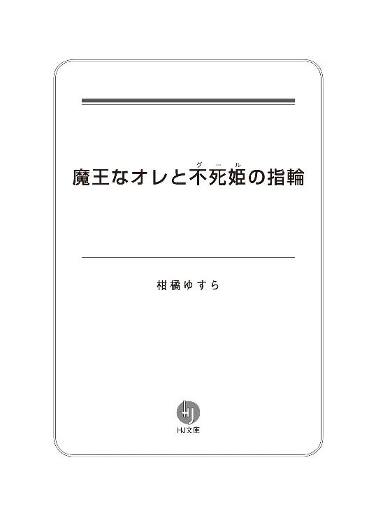

| 魔王なオレと不死姫の指輪 (ＨＪ文庫) | |
| 柑橘ゆすら | |
| (2012) | |



ＴＯ ★ 久住千春
おめでとうございます。
貴方様は第七期、魔物使いに選出されました。
つきましては私ども全国魔物協会は貴方様と相性バッチリの魔物を三匹見積もらせて頂きました。
以下の中から一匹の魔物を選び、記念すべき最初のパートナーとし、日々の修業に励んでくださるよう、よろしくお願い申し上げます。
誠に個人的な見解ではありますが、貴方様には将来魔王になるだけの素養と才能を感じております。
末筆ながら千春様の健闘と御活躍、心よりお祈り申し上げます。
ＦＲＯＭ ★ 全国魔物協会・ルカ
ピロピロリ～ン♪
ある日の早朝。
オレの携帯に一通のダイレクトメールが届いた。
内容は見ての通り、大変ふざけたものになっている。
最初は「新手の詐欺か」と思い、速攻で削除ボタンを押すつもりだったが、なんとなくその内容の異質さに戸惑いを覚える。
「これ......全く騙す気ねーだろ......」
丸っこいフォントのおちょくった文には、どこにも『振り込み先』や『ホームページアドレス』が書かれていないのだ。
だとしたら一体誰が？ どんな目的で？
っていうか、ロクなモンスターがいないよな......。
内容を信じているわけではないが、どうせならもっとマシなものを用意しろと言ってやりたい。
結局オレは半ば無意識の内にメールを削除すると、すぐさまそれを受信拒否リストに放り込んだ。
......とりあえずこれで安心だろう。
再びベッドにダイブすると、やがてうっすらと意識が遠のいていくのを感じた。
たぶん、次に目を覚ましたときには今朝のことなどサッパリと忘れているだろう。
が、オレは思いもしなかった。
このときの軽はずみな行動が、後に三匹の魔物との修羅場を招く引き金になるだなんて――。
第一話 悪夢のはじまり
『こんにちは、宅配便ですー』
『はあい、今出ます』
四月一八日、土曜日。
ごくごく普通の木造一戸建てである我が家に、速達の荷物が届いた。
たかぶる気持ちを抑え、玄関まで荷物を取りに向かう。
荷物の中身が田舎から送られてきたリンゴとかだったらオレのテンションはここまで上がりはしない。
オレがここまで興奮するのには、それなりのわけがあった。
エロ本。
エロ本である。
昨夜、ネットで注文した大量のエロ本がついに我が家に届いたのだ。
オレは感動のあまり涙を流さずにはいられなかった。
誰とも顔を合わすことなくエロ本を買うことができるなんて......便利な世の中になったよな。温暖化や大気汚染――様々な弊害を孕んでいるらしいが、今日ばかりは文明の発展にひたすら感謝しよう。
荷物を受け取ったオレはふと思う。
にしてもこの箱......大き過ぎないか？
玄関一杯に広がる箱は、両手を使っても持ち切れないほど巨大で、エロ本をしまうスペースとして見るといささか大袈裟に過ぎる。
というか、そもそも箱の材質からおかしい。
発泡スチロールってなんだよ！
クール宅急便って......エロ本はいつからナマモノ扱いになったんだ！
でもまあ......いかんせんネット通販のサービスを初めて利用するオレには判断しかねる問題だ。きっと、アマゾンではこれが仕様なんだろう。
妹の――愛美が帰って来てからでは色々と手遅れになる。
さっそく箱を開けることにした。
と、その中にあったものは――
下着姿の少女の死体だった。
「っ！」
声にならない声を上げ、大きくバックステップを踏む。
え、え。
なにこれドッキリ？ カメラどこ？
見渡すが、それらしいものは見つからないし、暫く待っても『ドッキリ大成功！』という、お馴染みのプレートを持った仕掛け人も出てこない。
ドクドクと痛いくらいに心臓が高鳴っているのが分かる。
彼女が既に死んでいるという点に関しては疑いようがなかった。
――それほどまでに彼女の全身は凄惨な有様となっており、目を向けることすら憚られる状態だったのだ。
「......ふぅ。落ち着けオレ」
大きく息を吸い込み、肺がパンパンになるまで空気を送り込み、
――おそるおそる、もう一度箱の中を覗いてみる。
見る者を惹きつけるストレートロングの銀髪と、血色の悪ささえ差し引けば白魚のように美しい肌。瞳孔が開き切り、一切の生気が感じられないという点さえ除けば、宝石のように綺麗なライトブルーの瞳。
胸はそんなに大きいわけじゃないが、スレンダーっていうのかな。くびれたウェストのおかげで全体的なスタイルはすごくよく見える。お腹からはみ出てはいけない何かがはみ出しているけど。
目を見張るほどのクールビューティー。
既に死んでいるという点を除けば、そこにいたのは信じられないほどの美少女であった。
......。
............。
うわぁ......。
死体。本物の死体だよ......。
「......安らかに眠ってくれよ」
念じながらも、静かに蓋を閉じた。
さて、これからどうしよう......。
悩ましい問題である。
ゆとり教育の弊害か、死体が家に送られたときの対処法なんて学校じゃ教えてくれなかった。しかし、今は考えるしかないだろう。
数ある選択肢の中から最善のものを――下手な選択肢を選べば、オレの人生はそのままバッドエンドへ突入だ。
......。
............。
よし、とりあえず警察に電話だな。
一瞬、冤罪の二文字が頭を過るも、他に選択肢はない気がする。
死体を隠しておくにも家にそんなスペースはないし、もちろんこれを埋めにいこうなんて度胸はオレにない。
居間にある電話を取ろうと、踵を返そうとしたそのとき――。
ガサコソ、と箱が動いた気がした。
え、え。
どういうこと？
直後、あたふたするオレを嘲笑うかのように箱の中から――
死体の少女が立ち上がる。
「――――ッ！」
言葉が出ない。
体はヘビに睨まれたカエルのように動かなくなっちまったが、かわりに恐怖で歯がガチガチと鳴っているのが分かる。
ありえない。
ありえるはずがない。
えーっと......どうしてその体で動けるの？
こいつはアレか、ホラー映画でお馴染みの、いわゆるゾンビってやつなのか......。
「夜分遅くに失礼します。あなたが久住千春さんですね」
キャァー!! シャァベッタァァァァァァ!?
おいおい。ゾンビが喋れるなんて初耳だぞ......？
日本には『死人に口無し』なんて諺があるみたいだが、あの言葉は今すぐ国語辞典から抹消すべきだと思う。
「は、はい......そうですが......どちら様でしょうか？」
ゾンビに釣られてか、ついついかしこまった口調になってしまう。
当然のことだが、ごくごく平凡な男子高校生であるオレにゾンビの知り合いなどいるはずがない。
「私はゾンミ。ゾンミ・ラ・マッケンシー。あなたに選ばれたパートナーです」
「......なんの話でしょうか？」
「ふふっ、とぼけないで良いですよ。あなたは見る目があります。記念すべき最初のパートナーとして私を選んだこと、後悔させません」
「はあ......」
無垢な笑みを浮かべるゾンビ。
落ち着け。花柄の刺繍をあしらったアクアブルーの下着が眩し過ぎるが今は落ち着くんだ......。
「それにしても千春さんが男の方だとは意外でした。名前から察するに、てっきり女性の方かと」
「......よく言われるんだけど。なんでも両親が、千年でも春を待てる思慮深い人になるようにって意味でつけたらしい」
意外だな。てっきりそのままガブリとやられるもんだと思っていたが、このゾンビ、案外話せるやつらしい。
まさか自分の名前の由来をゾンビに語る日が来ようとは夢にも思わなかったよ。
――と、そんなことを思ったが束の間。
「............はうっ。あっ......み、見ないでください！」
「へ？」
それは本当に突然のことだった。
凄まじい勢いで頬を染め、声を上擦らせるゾンビ。
さっきまでの落ち着いた態度から一転。あわてふためくゾンビの態度に思わず唖然としてしまう。
「わわわ、私としたことが迂闊でした。千春って名前で――てっきり女の人だと思っていたから――ッ」
「待てっ！ なんのこと――」
局部を押さえ、恥じらう彼女の様子を見て、ようやく事態を飲み込んだ。
......なんだよ、このベタなラブコメみたいな展開は。
やばい、全く嬉しくないぞ。
内臓剥きだしの半裸の美少女って......誰得だよ!?
どこに需要があるかは分からないが、どこかに需要がありそうな展開である。
しかし、一般受けを目指すにはあと半世紀ほど早そうだ。
「着替えを、早く着替えを持って来なさい！ ちょっ、いつまでジロジロ見ているんですか、この変態っ！」
プンスカと怒鳴り散らすゾンビ。
「......うへー」
いわれのない変態疑惑をかけられて辟易する。
流石のオレも死体を愛でる趣味はないぞ。
汚れが移るのは嫌だったので、結局オレは持っている服の中でも一番ボロボロで酷いやつをゾンビに手渡した。
それにしてもこのゾンビ、いったいなぜ宅配されてきたのだろうか。しかも、下着姿って......。
服を受け取ったゾンビは「なんですかこの服は！ ボロボロじゃないですか！」と、文句を言いながらも素直に着替えに応じてくれた。
ちなみに言っておくと、女の子が着るとブカブカなＴシャツが逆にソソる......みたいなお約束の展開は別になかった。だってゾンビに萌えるとかありえないし。
でもまあ、オレとしては、こいつが服を着てくれたことにすげーホッとしている。
目のやり場に困っていたからな......色っぽいとかじゃなくて、お腹からハミ出た名状しがたい物体が隠れる的な意味で。
「とりあえず、聞きたいことが山ほどあるのだが......」
「なんでしょう。スリーサイズとか言い出したら、迷わずぶっ飛ばしますよ？」
「誰が聞くか」
奇妙な光景である。
リビングの丸テーブル越しに座る死体の少女。
ゾンビに対してお茶まで出してもてなしている自分に戸惑いを覚える。
オレはいったい何をやっているんだろうか......。
「それでゾンビさんはいったい何の用があってオレん家に来たんですか？」
戸惑いながらも尋ねてみる。
さっきパートナーがどうとか言っていたが、一体なんのことだろう。
すると、ゾンビは俯き気味に視線を伏せ、なぜか拳を震わしていた。
「......あなたは今、言ってはならないことを言いました」
「え？」
「ゾンミです......」
「はい？」
「私の名前はゾンビではなくゾ・ン・ミです！ 誇り高き不死族、ゾ・ン・ミです！ ゾンビなどという劣等種と一緒にしないでくださいっ！」
「............」
周囲から鈍感と揶揄されるオレでも分かる。明らかに地雷を踏んでしまった模様。
なるほどね。ゾンミさんはクールビューティーならぬ、グールビューティーだったってわけね。
前言撤回。
話せるやつだと思っていたが、こいつ......めちゃくちゃ面倒くさいぞ。
「いや、なんていうか悪かったよ......ゾンミさん？ これからはそう呼べば良いのか？」
「ゾンミで結構ですよ千春。魔物使いとパートナーの関係は極力対等であることが望ましいと考えていますので」
「そうか？ 分かったよ」
「......では千春、改めて先程の質問にお答えします」
ゴホンッと、咳払いをしてゾンミは続ける、
「あなたは才能を買われ、栄誉ある魔物使いに選ばれたのです。私が来たのは千春の教育のため――あなたを一流の魔物使いに育て上げるためです！」
「一日五分で英語を話せるようになる教材は間に合っています......」
「私はタチの悪い訪問販売の人ではありません」
待て待て。
魔物使いだって......？
常識的に考えろ。
そんなメルヘンな職業、現実に存在しているはずないじゃないか。
しかし、それを言い出したらゾンミとかいうこの女――存在からして既に常識の範囲外だ。ことは既にオレが想像できるキャパシティを超えている。
どうすりゃいい、やはりここは警察に通報するべきなのか――。
「安心してください。千春の魔物使いとしての才能は――正直鼻くそみたいなものですが、私がいれば大丈夫です。きっとあなたを世界一の魔物使い。魔物使いの王――魔王にしてみせますよ」
「オレはその......魔物使いになるなんて一言も言っていないし、魔王なんてもってのほかだ。勝手に話を進めるな」
「大丈夫です。心配しなくても、そもそもあなたに拒否権はないですから」
「......どういうことだよ」
一分の隙もないポーカーフェイスでゾンミは続ける。
「魔物使いとしての才能を持つ種族は人間だけですが、そもそも魔物使いの才能を持つ者は世界に千人もいないとされているのです。モンスターにとって魔物使いとの契約は重要なステータスの一つ。それはもう種族間の外交に大きな影響を及ぼしかねません。
とある新米テイマー――つまりは千春がパートナーに不死族を選択したと聞き、私たちの種族は歓喜に酔いしれました。喜びのあまり何人かはそのまま天に召されてしまったくらいです。
いいですか千春。これは脅しではありません。もしあなたが、ひよったことを言えば人間と不死族は確実に戦争になるのです。それを肝に銘じてください」
「――――ッ！」
なんだよそれ。
不死族と人類が戦争？
なんとも突拍子のない話だが、少なくともゾンミが今、こうしてここにいる以上、人類以外の異種族が地球に存在してもおかしくはないし、その可能性を完全に捨て去ることはできない。
けど、魔物使い？
そんな胡散臭い職業、死んでもなりたくないし、オレが不死族とやらをパートナーに選んだという話も心当たりがない。
だからここはやはり――
「......悪いがそんな話は信じられない。この話はなかったことにしてくれ」
そうだよ。
もし仮にオレの選択が間違っていて、多くの人間が命を落としてしまっても、それはオレのせいじゃない。
こんなことを言うのはずるい気がするが、誰もオレを責められないだろう。
「そうですか。では、これを見ても同じことが言えますか？」
ゾンミはどこからか家のリモコンを手に取り、テレビの電源を付けていた。
映しだされたチャンネルはお昼のニュース番組――どうやら生中継の最中みたいだ。
『見てください！ 私たちはいま、信じられない光景を目前としています！』
新米アナウンサーがマイクを片手に鼻息を荒くして喋っている。
画面に映った字幕を見るに、場所は神奈川県、横浜市。
ここからそう離れていない場所だ。
テレビの中では、巨大なイカの化物が暴れ回っていた......。
あれれ。なにか今おかしなものが見えたような......。
瞬きを一回。
もう一度テレビを見直してみる。
しかし、不幸なことに見間違いではなかったらしい。
「......ゾンミ、あれは？」
「海獣族のクラーケンですね、あの形相、きっとテイマーとの契約が上手くいかなかったのでしょう」
「そうとうイカってるってわけだな」
「......別にうまくないです」
やがて、テレビカメラは近隣住民と思われる人々を映し始めた。
『うぇーん、お父ちゃーん――ッ』
『な、なんだあの化物はあっ！』
化物の出現に阿鼻叫喚する人々。
神奈川県はいつから地獄と化した!?
「おい、ゾンミっ！ 民家がタケノコみたいに引っこ抜かれているぞ！ 大丈夫なのかよ！」
「落ち着いてください。ここまで派手に暴れたなら、きっと今に上級テイマーがやってきて......」
『あっ、あれは......。見えますでしょうか？ 信じられません！ 更にもう一匹、巨大生物が出現しました！』
アナウンサーの叫喚と共に、テレビ画面は大きく角度を切る。
燃えるような赤い肌。天を突くように伸びた角。
どこからともなく現れたのは、巨大な斧を手にした牛頭人身の化物だった。
『ゴウラアァァァァ』
ウシの化物は奇声を上げ、手にした得物を振りかぶる。一閃、巨大な斧がイカの化物に突きささった。
「あ......」
「勝負ありですね」
禍々しい歪な形をしたそれがブスリッと嫌な音を立てて体内に入ると、イカの化物はみるみると黄色い粒子と化して、空気の中に消えていく。
おいおい、どういう仕組みだ。
思いっきり質量保存の法則に反しているぞ。
その後、立つ鳥あとを濁さずとでも言わんばかりにウシの化物も姿をくらます。
――あっというまの出来事だった。
残ったのはただ、呆然とする人々と、ひっくり返したおもちゃ箱みたいに散らかった街並みのみ。
「見ましたか、これが現実です。今後はからあげくんの一個増量フェアより頻繁に、今みたいな事件を目の当たりにするでしょうね」
「............」
テレビの電源を消して、淡々とした口調でゾンミが言った。
たしかにからあげくんは、逆に一個増量してないときの方が珍しい気がするよな......って今はそんなことを考えている場合じゃねえ！
開いた口が塞がらなかった。
自宅に死体の少女が送られてくるってだけで衝撃的なのに、その上、今日みたいな光景が日常になるなんて......とんだ怪獣大決戦だ。
夢だと思いたい。
嘘だと思いたい。
しかし、こうして事が起こってしまっている以上、認めざるを得ない。
――これが現実だと。
「なぜ、今になって急に......」
ゾンミといい、ＴＶの中の化物といい、同時に現れるなんてタイミングが良すぎる。
「魔界と人間界を繋ぐ門――異界の門。その出入りの大幅な規制緩和が行われるのですよ。人間と魔物の間を取り持つことができるのは――魔物使いだけですから」
サラリととんでもない発言を聞いた気がする。
それってつまりかなりヤバいことなんじゃ......？
「......いちおう聞いておくが、その、魔物使いになるにはどうすれば良いんだ？」
「まずは私と契約を。契約に必要な道具――指輪はすぐにでも千春の家に届けられると思います」
指輪......ポケ●ンでいうとモンスターボールみたいなものか......。
と、そんなことを考えていると。
ピンポーン♪
まるで計ったようなタイミングで聞きなれたインターホンの音が響き渡った。
「おや、さっそく指輪が届いたみたいですね。では、さっそく契約に移りましょう」
「......分かった。分かったからそこを動かないでくれ」
どこか興奮した様子のゾンミをなだめ、玄関と繋がる子機を取る。
宅配の人がこいつを見たら失禁しかねん。
『こんにちはー、宅配便です』
うわっ、なんだこのタイミング。
マジで宅配......指輪とかいうのが届いたみたいだ。
小走りで玄関に向かう。届いたのはさきほどゾンミが入っていた箱より一回り小さい段ボール箱であった。
正直な話、未だに全く状況が飲み込めていない。
聞きたいことは山ほどある。
しかし、ここでゾンミと契約とかいうのをしちまったら、今日からオレは魔物使いとしての人生を歩むことになるのだろうか......。
いくら時代が就職氷河期とはいえお断り願いたい。
ブラック企業も真っ青な仕事内容ですよ。
「千春？」
可愛らしい女性の声に釣られ振りかえると、なんと！
そこには――ゾンビがいた。
「――――ッ！」
「なんですかその恐怖で凍りついた表情は......」
「い、いきなり後ろから声をかけないでくれ！」
くそっ、分かっていても驚いてしまう。
服を着て若干マシになったとはいえ、ゾンミが不気味なグールであることに変わりない。気分はリアルバ●オハザードだ。
「やはり、指輪が届いたんですね」
「どうやらそうみたいだな」
「さあ、はやく開けましょうっ！ 私が先に開けても良いですか？」
「別にいいけど......」
子供みたいな笑みを浮かべるゾンミ。
......。
............。
どうしてこいつはこんなに嬉しそうなんだろう。
そもそも魔物使いと契約することって一族で喜びを分かち合うほど大それたことなのか？ ......よく分からないけど、オレの行動でこんなにも誰かが喜んでくれるなら......それも悪くないんじゃないか？
と、ガラにもなくそんなことを思っちまった。
「......千春」
「ん、なんだ。言っとくけどオレは魔物使いになるって決めたわけじゃないからなっ！ それにお前のことだってまだ完全に信用したわけじゃないぞ！」
「......どうやら千春は魔物使いになる前に、一人の人間として抜本的に教育し直す必要がありそうですね」
「はあ......。そりゃあいったいなんのこと......あっ」
その瞬間、オレはとんでもないことに気付いてしまった。
ゾンミが手にしていたのはなんと......昨夜ネットで注文したエロ本だったのだ。
「ま、待てよ。これはさ、違うんだよ」
なんという出来過ぎたタイミング......。
ゾンミの死んだ魚のような瞳がますます輝きを消していく。
「なにが違うんですかっ！ この色情狂ッ！」
刹那、ゾンミの拳がオレの顎をかすめた。
ああ、グールじゃなければなー。
ゾンミがグールでさえなければ、オレもこのラブコメ的な展開を素直に楽しめたかもしれないなー。
薄れゆく意識の中でオレは、最後にそんなことを思った。
× × ×
「んんっ」
目を覚ましたとき、オレは四肢を拘束され自室のベッドの上にいた。
「あ、お兄ちゃん。お目覚めだー♪」
「あれ......愛美か」
「そだよ。お兄ちゃん専用の肉壺、愛美だよ♪」
ふむ、間違えない。
この東京都知事に真っ向から勝負を挑んだような発言。
間違いなく我が妹、久住愛美である。
愛嬌たっぷりの小動物チックな眼。発育良く理想的な大きさに膨らんだ胸。
艶のあるストレートロングの黒髪は実の兄のオレですら、色っぽいと思えるほどの逸品である。
ただ一つ、何度言っても直らないブラコンという名の病気さえ治せば、まさしく理想の妹と言えよう。
「そうだ、ゾンミは？ ゾンミはどこに行ったっ!?」
突如、電気が走ったように記憶が蘇る。
さっきまでオレは、ゾンミとかいうゾンビモドキと一緒にいたはずだ！
「ゾンミ？ お兄ちゃん、寝ぼけているの？ 夢でも見ていたんじゃない♪」
「えっ」
「てかてか、ゾンミってなにそれ？ 名前？ にゃはははっ、変な名前～♪」
無邪気な笑みを浮かべる愛美。
どうやら本当になにも知らないらしい。
はははっ。な～んだ、夢だったのか。どうりでさ、超展開が過ぎると思ったよ。
「それよりそれより。お兄ちゃん、今日のニュースは見たぁ？」
「ん、ニュース？」
「怪獣大決戦！ イカと豚とエビの怪獣が暴れていたってニュースだよ♪」
「イカと豚とエビ？」
なんつーデタラメな組み合わせだ。
お好み焼きの材料になるという以外、どこにも共通点を見出せそうにない。
「テレビをつけてみれば分かるよ。どこも今その話題で持ち切りだから♪」
「えーっと、マジで？」
「もちのろんだよ♪」
「......ははっ」
なんてこった。どうやらさっきの件は、夢でも何でもなかったらしい。
化物は存在する。
現実に存在するのだ。
だとしたら、ゾンミはいったいどこに行ったんだろう......。
「愛美、オレがどれくらい寝ていたか分かるか？」
「ん～と、私が帰って、お兄ちゃんを見つけてから二時間くらいかなあ」
二時間の間に、新たに二体の化物が現れたってことかよ。
くそっ、どうなってやがる。訳が分からねー。
「で、結局お兄ちゃんはどうして廊下の上で寝ていたのかな？ しかも、周囲に大量のエロ本撒き散らかして......」
「......げっ」
どんだけ格好悪い寝かたをしていたんだオレは......。
身の危険を感じたオレはすぐさまベッドの上から跳ねあがる。
が、ジャラリ......という無情の金属音がそれを阻止した。
忘れていた。オレの両手はベッドと手錠に固定されているんだった......。
せめてもう少しマシな体勢だと脱出もできたかもしれないが......無理に力を入れてベッドを壊すのも忍びない。
「にゃははっ、無駄だよ♪ お兄ちゃんの体は愛美が完璧に拘束しておいたからねっ」
「おい、冗談が過ぎるぞ......」
「質問に答えてね、お兄ちゃん。どうしてエロ本を読んで気絶していたの？ そんなに本の内容がエッチだったの？」
「し、知らない！」
オレは無実だ！
実際読んでいないので、どれくらいエッチだったかなんて分からない。
むしろこっちが教えて欲しいくらいだ。
「ふふ～ん、カマトトぶってられるのも今のうちだよ♪ こっちには人質がいるんだからねっ！」
「人質って......まさかっ」
心当たりは一つしかなかった。
だってそうだろう？ この世界でオレが命の次に大切にしているもの――そう考えると答えは自ずと決まってくる。......例によってエロ本である。
色気のない学園生活。男ばかりのなんちゃって共学校に在籍するオレにとってエロ本は何よりも大切な宝。青春のバイブルであるのだ。
「正直に答えてね、お兄ちゃん。どうしてエロ本を読んでいる途中に気絶しちゃったの？」
「うぐぐっ......」
言われなくてもオレはさっきから正直に答えている。
ただ、「ゾンミとかいうグールの女が現れて――」と、一から説明したところで愛美が納得するとは思えない。
それに適当な理由で誤魔化そうにも、他にエロ本を読んで気絶するというシチュエーションを想像できない。我ながらどんな状況だよ......。
「頼む！ 頼むこの通りだ！ オレはどうなってもいい、人質だけは解放してくれ！」
結局――オレが導き出した選択は必死の懇願であった。
他にどんな手があったっていうんだ。
「う～ん、お兄ちゃんがそこまで言うなら......」
「ほんとか！ 助けてくれるのか!?」
「分かった、解放する♪ と言っても、助けられるのは妹物のエロ本だけだけどね」
「......つまりは全部捨てるってことじゃん！」
「当たり前だよ。人妻？ 女教師？ お兄ちゃんったら趣味悪過ぎ！ あんなの不健全すぎるよ！ 人としての道を外れてるよ！」
「............」
ひどい、あんまりだ......。
妹物の方がよっぽどアブノーマルだと思うが......。
「ごめんね、お兄ちゃん。実は愛美......全部分かっていたんだ」
「へ？」
「お兄ちゃんは溜まっていただけなんだよね。だからね、少し道を踏み違えちゃっただけなんだよね。大丈夫、それは妹である私の責任でもあるから――愛美に熱いのいっぱい吐き出してっ！」
オレは全力で逃げようとするも例によって、ジャラリ......という金属音が無情にもそれを阻止する。
うわああああ動けえ！ 動いてくれオレの右腕――ッ！
じゃないとオレは――
「ば、ばか！ 早まるな、オレたち東京都民だろ!? あ、アッ――――!!」
無情にも、久住家に野太い叫喚が響き渡った......。
× × ×
一方そのころ。
ここは魔界と人間界の狭間。
荒れ果てた荒野に聳え立つ古城の中に一組の男女がいた。
「ボス。御命令に従い、登録番号０６３、クラーケンの捕獲に成功しました」
黒スーツの男は跪き、玉座に座る仮面の女に忠誠の姿勢を取る。
「......そうか。弾は多いほどいい。これで我々、黒の背信者はまた一歩、理想郷へと近づいた。よくやったぞ」
「ハッ、ありがたき御言葉！」
「......引き続きお前に課す仕事は魔物の捕獲と才能ある同胞の補充だ――我々にとっては今がまたと無い好機――書き入れ時だからな」
「承知しております......ところでひとつ気になることがあるのですが......」
「なんだ、言ってみろ」
「私が懸念しているのは他でもありません。七期生の将来性です。正直、いまのいままで魔物使いに選ばれなかった不完全な余り者――劣等生を仲間に引き入れたところで......リスクに見合う対価があるとは思えないのですが......」
「ふふっ、それなら心配ない」
微かに笑い声を漏らし、仮面の女は続ける。
「クラリー。今期、候補に挙がっているルーキーの数を知っているか？」
「さぁ......詳しくは存じませんがせいぜい百程度ではないでしょうか」
「まったくもって的外れな回答だな......正確には五百だ」
「!?」
クラリーと呼ばれた男は背筋に悪寒を感じた。
今現在、公式に認められている魔物使いは約千名。彼女の言うことが正しければ今期の候補生はその半数近くを占める計算だ。
暴挙と言うより他はなかった。本来なら一人の魔物使いを育てるにあたり二人以上の上級魔物使いの管理の下で三年間の教育が推奨とされている。
上層部の人間は魔物の存在を世間に隠す気はないのだろうか。
これではまるで魔物と魔物使いの間に起こるトラブルを対処し切れるはずがない。
「ならば尚のこと！ 彼らの素質には疑問を抱かずにはいられません！」
「ふふ。どういうわけだか知らないが、今期の候補生たちはみなかつてないほどハイレベルな素質を持ち合わせているよ。異界の門の壊滅に備え、ようやく全魔協も重い腰を上げたらしい」
「......そうですか。私はあくまでボスの命令に従うまで」
「............」
その中でも特に気になるのが――
久住千春。
ルーキーでありながら、かつてこれほど魔物たちに適性者として選ばれた魔物使いがいただろうか。
果たして彼が人間と魔物。
どちらの側に付くのか実に興味深い余興に思える。
女は仮面の下でひっそりと相好を崩した。
第二話 私と契約するのです！
それから。
例の魔物の目撃情報は世界各国で瞬く間に増加し、その勢いはＴＶのニュースで取り上げるのも追いつかないほどであった。
ただ、ここまで世間を賑わしておきながら、未だ大きな被害が出ていないのは先のように暴れる魔物が出てくると、すぐさまそれを後からやって来た魔物が退治してくれるおかげで――ゾンミの言葉を借りるなら、おそらく上級テイマー（？）が暗躍しているのだろう。
ところで、当のゾンミだが結局あのとき以来、消息を絶ったままだ。契約がどうの言っていたがその後のおとさたはない。
あれから二日が経ち月曜日を迎えた。
こんな御時世でも登校義務を課されるところが、学生という身分の辛いところである。
「あーあ、早くこの街にも魔物が出ないかなー」
爽やかな挨拶が飛び交う朝の教室。
オレの隣でなにやらとんでもない発言を放ったのは、桜坂陽平。
名前こそ流行りのイケメン俳優みたいな響きだが、その容姿は甘めに見積もって中の上。彼女いない歴ではオレと互角の勝負を繰り広げているライバルである......決着の予定は無期限未定。
「へー。お前に自殺願望があったとは意外だよ」
「バっ、ちげーよ！ 童貞を卒業するまで死んでたまるか！」
「......真顔で残念なこと言うなよ」
自らの命より性に対して価値を置いている陽平は一周回って格好いい。
「映画とかじゃ定番だろう？ 女の子がさ、怪物に襲われているシチュエーション！ そこで俺がさ、こうバシっと助けるわけよ！ これほど簡単に女を惚れさせる方法はねえぞ！ 女の子を助けるだけの簡単なお仕事です！」
「簡単に言ってくれるなー」
こういう発言が飛び出すうちは、まだまだ日本は平和だと思う。
「それがさ、簡単な話なんだよ」
「ん？」
「千春、魔物使いって知っているか？」
魔物使い――
その単語を聞いた瞬間、オレの心臓はトクンッと跳ね上がった。
「ネットの掲示板なんかじゃいろいろ噂になっているぜ。魔物を倒す魔物――なんでもそいつを操っているのが魔物使いっていう特殊な訓練を受けた人間らしい」
「へー、そうなんだー」
「かっけーよなー、魔物使い。自衛隊でも歯が立たない怪物たちをバッサバッサとぶっ飛ばしていくんだぜ！」
興味のなさそうな素振りを見せるも、心の中では動揺していた。
やはり、実在するのか魔物使い――。
オレもあと一歩で魔物使いにされるところだったんだよな......。才能を買われたとかなんとかで。
けど、今思うとアレは何かの手違いだったんだろう――そう考えると、ゾンミがオレの前から姿を消したのも納得がいくし。
「つまりは俺も魔物使いになれば、彼女ができるって寸法よ！」
「その結びつけ方は強引だと思うぞ？」
「だからさ、千春。今日の放課後一緒に魔物を捕まえにいくぞ！」
「ん？ ちょっと、待て。どうしてそうなる？」
「どうしてって魔物使いになるには、仲間になってくれる魔物が必要だろ」
「さも当然のように言うな！ 本気で魔物が仲間になると思ってるのかよ......」
「大丈夫、うちは肉屋だ！ 魔物を手なずけるのに必要な肉はそれこそ腐るほどあるぞ！」
「ドラ●エモンスターズ!?」
まったく、ゲームと現実を混合するなっての......。
それにゾンミの話では魔物と契約を結ぶには指輪――ポケ●ンでいうところのモンスターボール的なアイテムが必要になるらしいのだ。
たしかにこいつの家で売っている肉は品質のわりに良心的な価格設定でいつもお世話になっているが、それで魔物が仲間になりたそうな目でこちらを見てくるとは思えない。
と。
ガラガラガラ！
オレたちがそんなくだらない会話を交わしているうちに、担任の女教師――萌美先生が教室に入って来たようだ。
朝のＨＲの時間である。
「みんなー席につくように」
先生の掛け声により騒がしかった教室は一転。静粛の空気に包まれる。
「今日はみなさんに、転校生を紹介したいと思います」
ん。え、マジ？
「う、うおおおおおおおおおおおおおおおおおおおおおおおおおおおおおおおおおおおおおおおおおおおおおおおおおおおおおおおおおおおおおおおおおおおおおおおおおおおおおおおおおお！」
次の瞬間、教室は割れんばかりの熱狂に包まれた。
「お、おい千春。いまの聞いたか......？ 俺は信じられねえよ、未だに手足が震えてらァ。私立高校に転校生？ こんな展開がギャルゲー以外にあったのか！」
「そうだな......ビックリだよ」
お前のテンションの上がりように。
たしかに、うちの学校に転校生とは珍しい。
中高一貫でそこそこ名の通った私立聖蘭学園は、ふつうに表から入るのにも結構な偏差値だし、なんらかのコネでもない限り途中入学なんて不可能だ。
「びーしょうじょ！」
「びーしょうじょ！ びーしょうじょ！」
どこからか始まった謎の美少女コールは瞬く間に場を支配していく。
「びーしょうじょ！ びーしょうじょ！ びーしょうじょ！」
「びーしょうじょ！ びーしょうじょ！ びーしょうじょ！」
これはひどい。
転校生が男だったらどうする気だよ。
たしかに漫画やアニメの世界では転校生は謎の美少女ってパターンが多いけどさ......現実はそんなに甘くないだろう。
時代の流れに後押しされ、最近になりようやく共学化した聖蘭学園は女生徒の数が圧倒的に少ない。その男女比は甘めに見積もって九対一といったところ。
完全に男子校というのならまだ諦めもついたのだろう。
しかし、半ば生殺しにも近い環境の聖蘭学園は、陽平のような女に飢えた野獣を生み出す絶好の場となっているのだ。
「静粛に！ では、ゾンミさん入ってください」
ん。
ちょっと待て。今、どこかで聞き覚えのある単語が聞こえたような......。
ガラガラガラ。
クラスメイトたちの期待を背負いこみ、教室に足を踏み入れたのは銀髪碧眼の美少女だった。
一枚の名画を思わせる端整な顔立ち。
スラっと伸びたモデルみたいな手足。
それらがまさに神がオーダーメイドしたかのように調和され、美という一文字を体現している。
......。
............。
さきほどまでの騒がしさから一転。教室は静粛な空気に包まれた。
ドン引き。
ドン引きである。
転校生のあまりの美しさに言葉が出ないのだ――。
「ゾンミ・ラ・マッケンシーです。よろしくお願いします」
そっけなく呟くゾンミ。
なんだよこれ......オレの知ってるゾンミと違う......。
以前に会ったゾンミはもっとこう、血色が悪くて、お腹から名状しがたい何かがはみ出ていて......存在そのものに一八禁タグを付けられてもおかしくない姿だった。
なのに現在。
そこに立っているのはどっからどう見ても人間そのもので、しかも、とびきりの美少女ときている。
オレは夢でも見てるのか？
いったい、何がどうなっているんだよ......。
「ゾンミさん、クラスの皆に軽く自己紹介をお願いします」
「私は人間が嫌いです。ですから、最初に言っておきます。気安く話しかけないでくださいね」
「............」
こいつ、転校初日になんてこと言うんだよ。もう少し言葉を選んでも良かっただろうに。
しかし、今の発言にマゾっ気を刺激されたのだろうか？
隣に目をやると陽平が「よしっ」という謎のガッツポーズを取っていた。
「それじゃあ、ゾンミさんの席は......」
担任の女教師が周囲を見渡しながら言うと、
「はいッ！ はいはいはいッ！ せんせー、ボクの隣が空いてます！」
勢いよく起立した陽平がそんなことを言い出した。
はて、うちの教室に空席なんてあっただろうか......。
「って、おい！ ふざけんな、お前の隣ってオレじゃねーか！」
こいつ、何を企んでいやがる。
まずいっ。......嫌な予感しかしないぞ。
案の定、陽平はニヤりと嫌らしい笑みを浮かべて、
「先生！ 千春くんは未成年のくせに親のアカウントを使って、夜な夜なネットでエッチな雑誌を買い漁っている不届き者です。即刻、退学にすべきかと」
まさかの告発である。ノータイムで友達を売りにきた!?
「失礼な！ それはまだ一回しかやってないぞ！」
しかも失敗したし。結局、全て妹に処分されてしまった。
「ふんっ、ならば。先生！ 千春くんは近所の本屋さんでエロ本を持ったままレジに行き『すいません、トイレ貸してください』と発言したある意味勇者です。即刻、退学にすべきかと」
「そんなことくらいで退学になってたまるか！」
健全な男子高校生なら誰しも経験あることだろーが。
くそっ。こいつ......色事に溺れて友達を売りやがって！
まったくもって友達甲斐のないやつである。
「......ではゾンミさん。陽平さんの席が空いているらしいので、そこに座ってくださいね」
「そうそう陽平の席が空いているから座れよな......って、俺じゃーん！」
隣の席の男は一人で絶叫していた。
たぶん、先生も陽平の騒がしさに辟易していたのだろう。
よく分からないけど助かった......。
結局。陽平の席は強制撤去され、ゾンミはオレの隣に座ることになった。
「お前、今までどこに行ってたんだよ......？」
聞きたいことは山ほどあった。
周囲に聞こえないよう声のボリュームを落とし問い詰める。
「もちろん、この学校に入学するために裏で手を回していたのですよ」
「はあ。いったい何のために？」
「決まっています、私は言いました――あなたを一流の魔物使いに育て上げると。そのためにはまず、あなたの日常生活を改善する必要があるのです」
「待て待て、全然意味が分からないぞ！」
「健全な精神にこそ強大な魔力は宿るのですよ。ですので、まずはあなたの腐った性根を叩き直さなくてはなりません」
「......そんなことリアルに腐っているやつに言われたくねーよ」
「ふふっ、千春の目は節穴ですか？ 私の体のどこが腐っているのです？」
改めて見つめ直す。
顔の作りが精巧に作られた人形みたいなのは相変わらず。
全体的に見て――外国人モデルみたいに均整の取れた体に、ちょっとハイソな聖蘭学園の制服が見事なまでに映えている。
こんな容姿を見せられちゃ、百人に聞いても百人が美少女と答えるだろうよ。
「その体はどうしたんだよ......」
「魔力さえ補給できれば人間の姿に化けることなど造作もないことです。今後はこの姿で千春の行動を監視していきます」
「監視っておまえ......」
「不服ですか？」
「当たり前だ！」
ていうか、オレはまだ魔物使いになるって決めたわけじゃないぞ――。
どうしてこいつは人の意見も聞かず勝手に話を進めるかなあ。
「それより例のアレは届きましたか？」
「ん？」
「指輪のことですよ。早く契約を済ませますよ」
「......なあ。やけにその契約ってのに拘っているみたいだけど、なにか理由があるのか？」
「やれやれ、千春は本当になにも知らないのですね」
うんざりした様子でゾンミは答える。
「魔物とテイマーが契約することには二つのメリットがあります。
一つは魔力の補給。契約により、テイマーの体内で製造される魔力を魔物に付与することが可能となります。
魔物にとって魔力とは重要な生命線。純粋な戦闘力を強化する効果はもちろん、魔力が枯渇しては、こうして人間の姿に化けることすら叶わないのです。
もう一つは召喚の使用。これはどちらかというと、テイマー側のメリットになります。指輪を介して呪文を唱えることにより、テイマーは契約した魔物を好きなタイミングで呼び出すことができるのです。召喚を使えないと、テイマーは自身の身を守ることすら出来ないのです」
「ふーん。つまり、オレが定期的に体内で作った魔力をゾンミに付与するかわりに、ゾンミはオレの要求で、呼び出されなくてはいけないのか」
「そういうことになります。これは鎌倉幕府が推奨した『御恩と奉公』の関係に酷似していますね」
どうしてこいつが日本の歴史を知っているんだろう......という疑問は置いておいて、ゾンミが契約に拘る理由はなんとなく理解できた。
そりゃあ、ほんとに自分の体の中で魔力が作られているとか、俄かに信じられない部分もあるけどさ......。
「残念だったが、指輪ってのはまだ届いてないみたいだぜ。オレが見逃してなきゃの話だが」
「そうですか、変ですね......」
そんなことを話しているうちに、朝のＨＲは終わったみたいだ。
正直な話、先生が話していた内容は全然頭に入ってこなかった。
でもまあ特に問題はないだろう。念のため、あとで陽平にでも聞いてみるか、と。
「すみません。久住くんはいらっしゃいますか？」
男だらけのクラスに響き渡った清らかなソプラノボイス。
声のする方を見ると、オレの幼馴染がいた。
ツリ目を中心に添えた整った顔立ち。後頭部の高い位置を大きめのリボンで結った正統派のポニーテール。パリっと着こなした制服からはどことなく気品が溢れている。
高圧的な御嬢様――初見のやつならば誰しもそんな印象を抱くだろうな。
黒瀬杏子。
オレの名前を呼んだのは、我が校でも一、二位を争うと評判の美少女であった。
「あ、杏子様だあっ！」
「我々の天使が降臨なさったぞ！」
色めき立つクラスメイト。
その様子はまるで子ウサギが投げ込まれたライオンの檻。地獄の底に垂らされた蜘蛛の糸である。
女生徒の数が絶対的に少ない聖蘭学園では、杏子の知名度は凄まじいものがある。
どれくらい凄まじいかというと、我が校の新聞部が毎月アングラで発行する学園誌『月刊性乱』で、「杏子ちゃんマジ天使！」が今年の流行語大賞にノミネートされたくらいである。
学園の地下競売では毎週『杏子タソグッズ』なるものが飛び交い、高値で取引されているらしい。どこで手に入れたかは謎だが使用済みのティッシュやパンスト（ＤＮＡ鑑定書付き）ともなれば、その値段は数十万円にも跳ね上がるという。
オレとしてはそんなに騒ぐほどでもないと思うんだが......。
この学園の環境がいかに特殊であるかを痛感させられる。
「おい、千春......呼ばれてんぞ」
明らかに殺意を孕んだ目でこちらを睨むクラスメイト。
いやいや待ってくれ。オレは何も悪いことはしてないぞ？
「ゾンミ、ちょっと席を外すぞ」
「......千春。さっき私が言ったこと、聞いていましたか？ 私にはこれから二十四時間ずっと、千春の行動を監視する義務があるのですよ」
「............」
ジトーっと湿った視線を送るゾンミ。
おいおい、お前は風呂やトイレにも入らないつもりなのかよ。
と、心の中でツッコミを入れていると、
「ゾンミさん！ ぶっちゃけ第一印象から決めていました！ 付き合って下さい！」
若手お笑い芸人みたいによく通る、陽平の声。
「ずりいぞ陽平！ 俺の方が先に目をつけていたのに！」
「いやいや、オレの方が一万年と二千年前から目をつけてたぜ！」
見ると、ゾンミの周囲は大勢の男子生徒で埋め尽くされていた。
こいつら、なんて節操のないやつらなんだ......。
聖蘭学園。
近所の女子高生に聞いた『彼氏にしたくない学校ランキング』で十年連続一位を取った実力は伊達じゃない。
けど、これはチャンスだな。ゾンミの身動きが取れないうちに、さっさと用件を聞いてしまおう。
「あ、っちょ！ 千春っ!?」
縋るような視線を送ってくるゾンミを無視して、杏子の元へと向かう。
悪いなゾンミ。すぐに戻ってくる。
× × ×
「遅いわよ！ アタシを待たせるなんていい度胸じゃない！ いつからハルはそんなに偉くなったのかしら。何様のつもり？」
開口一番、怒気を孕んだ罵声を浴びせてくるのはもちろん杏子だ。
いい加減慣れたものだが、こういう台詞を吐いてくるやつこそ「何様だよ」って思いませんか？
「その台詞、そっくりそのまま返してやりたいよ。で、今日はどうしたんだ、呼び出したりして珍しいな」
オレと杏子は幼馴染ではあるもののギャルゲーとかにありがちな設定とはほど遠い。オレたちの仲が特別に良かったのはせいぜい小学生のときまでで、中学に進学してからは一緒に弁当を食べることも、プライベートで遊ぶことも無くなった。
今でも馬の合う友人には違いないが、互いに積極的に干渉しようとする意志はないのである。
「ふんっ。せっかくこのアタシが甲斐甲斐しく呼び出してあげたのに、そんな態度でいいわけ？」
「一向に構わん」
「ちょっとは構って!?」
「はい、構ったー」
自慢のオデコをチョコンと押してやると杏子は「きゃふっ」と小さく悲鳴を上げて、ギロリとこちらを睨んできた。
「うぅ......。あんたのユーモアって小学生レベルね」
憎々しげに呟く杏子。まあ否定はしないけどさ。
「で、結局なんの用だよ。人を待たせているから手短に言ってくれ」
「えーと、今日はちょっと大事な話があって......さ」
柄にもなく視線を伏せてモジモジしている杏子に戸惑いを覚える。
「どうした、生理か？」
「ふんっ！」
「ぐばあっ」
ふわりと風を受け、波打つスカート。
草食動物みたいにか細い足がオレの頭部を捕える。見事なまでのハイキックだ。
「くそぅ、いってーな......」
「バ、バッカじゃないの!? なんでアタシがあんたに生理の相談をするのよ!?」
「いや、ナプキンでも忘れたのかな......って」
「言えば貸してくれるの!? なんでそんなもん持っているのよ変態っ！」
「そんなん持ってるわけねーだろ。タンポンなら常備してるがなぁ！」
「余計にタチが悪いわぁ！」
華麗なツッコミを入れる杏子。
その手際の良さには熟練の経験を感じさせる。
「......で、用はそれだけか？ アホらしい、帰るぞ......」
「そんなはずないでしょ！ ま、待ちなさいよぉっ！」
踵を返そうとすると、制服の袖がぐいっと引っ張られる。
「お願い。今日は......今日だけは真面目な話がしたいのぉ......」
「おいおい、本当にどうしたんだ？ らしくないぞ」
才色兼備。唯我独尊。
そんな言葉がよく似合う杏子だが、どうにも今日は様子がおかしい。
その様子はまるで好感度マックスの攻略可ヒロインのようだった。なにか悪いものでも食ったのだろうか。
「......とりあえずここじゃなんだから、人目に付かない場所にいきましょ？」
「へ？」
袖を引っ張りながらも、上目遣いでこちらを見つめる幼馴染に不覚にもドギマギしてしまう。
「ななな、何を言っているんだ？」
「お願い！ 誰にも聞かれてはならない話があるの......ずっと秘密にしていた大切な話なの......」
秘密のお話......だと......。
頬を桜色に染める幼馴染を見て――オレは気付いてしまった。
この女、オレに惚れてやがる......と。
人目に付かない場所の定番と言えば、いつの時代も体育館裏である。
昼休みは柄の悪い連中が溜まっているこの場所も、幸い朝の時間ともなればまだ閑散としていた。
「と、突然呼び出して悪かったわね」
「いや、いいんだよ。......それで、話って？」
もしかしたらオレは自分が思っているよりも意地が悪いのかもしれない。
杏子がなにを伝えようとしているのか――それは誰の目から見ても明らかである。
知っているくせに白々しくも聞いてしまう......やはりオレは意地が悪い。ナチュラルに女を泣かせる才能を持って生まれたようだ。この、天然ジゴロめっ。
「ハルも知っていることだと思うんだけど......」
「......うんうん」
「あ、アタシと契約してください！」
「......ん？」
待て待て。
いま妙に馴染みのある単語が聞こえた気がするのだが。
「ハルも聞かされていると思うんだけど。実はアタシ、巨人族のネフィリムという種族なのよ」
「......はい？」
「えっと。全国魔物協会――全魔協の人から聞かされてない？ ハルがアタシを選んでくれたって聞いたとき、不本意だけど、その......とっても嬉しかったわ。そして思ったの、ハルならまあ、アタシのパートナーとしてそこそこふさわしいのかなって」
「............」
杏子は頬を赤らめてモジモジしている。
オレはというと、情報を整理するために脳みそをフル回転。
全国魔物協会？ ......なんだその胡散臭い団体は。
それに巨人族ネフィリム......もしかして杏子もゾンミと同じように人間に化ける能力を持った魔物なんだろうか。
そんなバカな！ 杏子は今まで普通に人間として生活していたんだぞ......。
「アタシ、今まで自分が魔物であることにコンプレックスを持ってたの......。人とは違う自分が嫌いだった。でもね、ハルが魔物使いに選ばれたって聞いたとき、アタシの価値観は大きく変わったの。ねえ、これってなにか運命を感じない？ ハルがテイマーでアタシがそのパートナー。大丈夫、アタシがいれば不可能じゃないわ！ 二人で最強のペアーを目指しましょうよ！」
壊れた蛇口みたいに流れ出る杏子の言葉に頭がクラクラしてきた。
「ちょ、ちょっと待ってくれ！ お前がその......魔物だっていう証拠はあるのかよ？」
「いちおうその、変身すれば、アタシの真の姿を見せられると思うよ......」
「............」
幼馴染からの告白を期待していた折――こんなＲＰＧゲームのラスボスみたいな台詞を聞かされるハメになるとは夢にも思わなかった。
「じゃあ、その......変身して見せてくれよ。オレにはまだお前が魔物だってことがどうしても信じられないんだ」
「えっ、こんなその......公衆の面前で？ む、無理に決まってるでしょ！ 恥ずかし過ぎるし！」
「そこをなんとか！ 頼むよ」
「ど、どうしても？」
「ああ」
杏子が赤面している理由は謎だが、オレはどうしても知りたかった――杏子の正体が本当に魔物なのかどうかを。そこがうやむやのままでは、やはり釈然としない。
「......わかった。じゃあ、服を脱ぐからハルは後ろを向いてなさい」
言われるがままに後ろを向く。
ん、服？
なんでそんなことを......と、一瞬疑問に思ったが、すぐに納得いく答えが浮かんできた。
杏子は自分を巨人族と言った――ってことは、変身後は今より体が大きくなって、制服が破けてしまうのだろう。
と、そこでオレは大変なことに気付く。
......待てよ。こんなところで魔物が現れたら、学校中が大パニックになるんじゃないか？
先日見たニュース、イカの化物に怯える住人たちの映像がフラッシュバックする。
「ま、待て！ さっきのはやっぱナ――」
振りかえったとき、オレは絶句した。
下着。
下着である。
杏子はまだ着替えの最中だったらしく、パステルカラーの下着が剥きだしの状態であったのだ。胸は服の上から見ての通り大きくはない。かろうじて僅かな膨らみを確認できるかというレベルである。
それにしても......中央に小さなリボンをあしらった可愛らしいパンツを始め、こいつの穿く下着って小学生レベルから進歩してないよな......。
「いや......きゃ―――ッ！」
「ま、待て！ これはちがっ」
杏子の悲鳴が響き渡ったそのとき――
「なにをしているのですか？」
空からゾンミが降って来た。
......。
............。
いちおう言っておくがオレの気がおかしくなったわけではない。
ゾンミの右手には傘が持たれている。
こいつ......なんて奴だ。
小さい頃、誰もが試したであろう――傘を持って高い場所からジャンプ！
......それを（おそらく）ゾンミは校舎三階の窓からやってのけたのである。
ふわふわと宙を舞うゾンミの姿は、さながら風に吹かれたタンポポの綿毛のよう。とても優雅である。いったいどんなトリックを使えばこんなふうに飛べるんだ？
「なにをしているのですか、ネフィリム！」
「――――ッ」
ゾンミが杏子のことをネフィリムと呼んだ。
やはり杏子の正体は魔物だったのか......。
「そ、そういうあなたは......だれ？ どうしてこんなところにいるのよ！」
「どうしてもなにも、私は千春に選ばれたパートナーですよ。側にいるのは当然でしょう」
「えっ、パートナー？ それは嘘よ！ 千春が選んだのはアタシだもん！」
「......この期に及んでそんな戯言を......。我が主を色気でたぶらかしておいてっ！」
ゾンミの鋭い眼光は、下着姿の杏子を捉えている。
なるほど、この状況だ。
ゾンミがそういう風に捉えてもおかしくない。......全く人事じゃないけどな。
「こ、これは違うわっ！ ハルがアタシのを、どうしてもそのっ見たいっていうから、脱いだだけで！」
「......へ？」
確かに意味は合っているけど......とんでもなく誤解を招く発言があったような......。
ゾンミの瞳はみるみると光を消し、死んだ魚のそれと化していく。
「千春。ネフィリムの言っていることは事実ですか？」
「まあ、否定するほどは間違っちゃいないわな......」
答えるとゾンミは「ほほぅ」とわざとらしく声を漏らしてギロリとこちらを一瞥する。
「千春はそんなにもネフィリムの裸体に興味があったのですか～。私との契約を忘れ、この女にうつつを抜かすまでに......」
「待ってくれよ、それは誤解だ！ オレはただ杏子の......真の姿を見たいと言っただけで」
事実を告げるも――どうやら逆効果だったらしい。
「ふふっ、我が主はネフィリムの下着姿には飽き足らず、一糸纏わぬ生まれたままの姿を見たいと仰いますか」
「えっ、ハル。そ、そうなの？」
「ち、ちげーよ、バ――カッ！」
というか、ゾンミはともかく、なぜそこで杏子まで間違える。
自分で言い出したことだろう。そんなにもオレを殺したいのか......。
「問答無用です。責務を忘れ、色事にうつつを抜かす煩悩テイマーには死を！」
スパーン！
一閃。ゾンミの手にした傘がオレの額を直撃する。
......くそぅ、またか。またなのか。
強烈なデジャブ。
脳味噌がシェイクされるような不快感、視界が一瞬白くなり、続いて赤く染まってゆく。どうやら頭のどこからか血が流れ出たらしい。
そして、体を地に臥したままオレは意識をうしな......わなかった。
うへー。
まあ世の中、そう何度もタイミング良くいくはずないですよねー。
くそう。どうせなら綺麗に気絶したかったぞ。その方がまだ苦しまずに済んだのに！
視界がグルグルと回り、強烈な嘔吐感が長々と続く。
「そこの魔物！ これを見なさい！ これを見ればきっと、あんたの誤解が解けるはずだから！」
「まだ言いますか！ 千春が選択したのは我々不死族に他なりません！」
いつの間にか制服に着替えた杏子が手にしていたのは何やら書類のようなものだった。
「――――ッ！」
ゾンミはそれを乱暴に受け取り目を通すと、やがて、わなわなと震え始め。
スパーンッ！
地面に転がっているオレの頭部に傘を振り下ろした。
アハハ。ありがとう......。ようやくこれで逝けるよ――。
薄れゆく意識の中、なぜかオレはゾンミの理不尽な暴力に感謝していた。
× × ×
視界が回復すると、そこにあるのはおかしな光景だった。
まず、自分の部屋じゃない。真っ白いシーツ。細長い蛍光灯。
周囲は薄手のカーテンのようなもので仕切られ個室のような空間を作っている。
保健室。
あまり馴染みのある場所ではないが、どうやらオレは保健室にいるらしかった。
「ようやく目覚めましたか」
サーっと薄手のカーテンが開かれると、見覚えのある顔が二つ。そこにはゾンミと杏子が立っていた。
「あっ」
二人の顔を見た瞬間、電気が走ったようにさきほどの記憶が蘇る。
オレのはらわたはグツグツと煮えくりかえり、ある意味モツ煮込みみたいになっていた。
「ゾンミ......オレは怒っているぞ......」
「どうしたんですか突然？」
さも心当たりがないといった様子でゾンミ。
「あんなもん振りまわしやがって！ 死んじまったらどうしてくれんだよ！」
「大丈夫ですよ千春。あなたはそんなことでは死にませんから」
「......どういうことだよ？」
尋ねると、ゾンミは眉ひとつ動かさずに語り始める。
「魔物使いとしての才能を持った人間は桁外れの回復力を持っているのです。なんせ、体内で製造した魔力をそのまま体の治癒に当てられますからね。心当たりがありませんか？ 千春は過去に大きな怪我をした経験がありましたか？」
「......ないけど」
言われてみればそうだった。
幼少のときからオレは怪我の直りが人より異常に早かったのだ。
情けない話、オレの周囲には妹を始めとした理不尽な暴力を振るう人間が多く、それで自然と体が頑丈になっていたんだろう、と今の今まで事の原因をそう考えていたのだが......よくよく考えるとそこに科学的根拠は一切なかった。
「えーっと、そろそろハルに状況を説明した方がいいんじゃない」
そう切り出したのは杏子だった。
どれくらいの間、気絶していたのかは分からないが、もうとっくに一時間目の授業は始まっているだろうに――心配して（？）残ってくれている杏子に感謝である。
「まず聞きたいのですが、千春、あなたは全国魔物協会――全魔協というものを知っていますか？」
「うんにゃ、全然」
正確には今まで二人の会話でチラっと耳にした記憶はあったのだが、知識としては知らないも同然だろう。
「はあ......やっぱり」「そんな、こんなことって......」
二人のリアクションは呆れたり、驚いたりと様々だ。
んん、知らないと何かまずいことでもあるのだろうか？
「そもそも千春はどうやって私たちのことを選んだのです？ 疑問でならないのですが......」
「待ってくれよ！ オレは別にゾンミのことも、杏子のことも選んだ覚えがないぞ。ていうか、そもそも心当たりすらない！ 選ぶってなんのことだよ......」
ようやく、以前から気になっていたことを尋ねることができた。どうやらオレたちのすれ違いの原因はそこにある気がしてならない。
「全魔協からメールが届かなかったの？ 新米テイマーは各自の適性に合った三匹の魔物の内、一匹を最初のパートナーとして選ぶという決まりなんだけど......」
メール。
メール？
「あ」
そういえばそんなこともあったかも......。
あれはいつのことだったろう？ なんだかもう随分と前のことに感じられるが。
「メールは届いてたのね！ で、ハルはそのメールをどうしたの？」
「胡散臭いメールだなあ、と思って、削除して受信拒否しておいたぞ」
「............」「............」
えーっと。
なにかオレ、おかしなことでも言ったのか？
「それですね。削除しても返信が来なければ再びメールが届くと思いますが、受信拒否というのがまずかったんでしょう。それがイレギュラーとなり、今回の騒動の発端になったのかと」
「ぅぅ......どうしよう。アタシ、パパになんて説明すればいいんだろう」
淡々とした口調でオレを睨みつけるゾンミと目に見えて肩を落とす杏子。
「待ってくれよ！ 状況が飲み込めない。いったいそれのなにが不都合だって言うんだよ！」
重々しい空気の中、口火を切ったのはゾンミだった。
「つまりですね、千春はいま私とネフィリム、二人の魔物を選択した状態になっているのですよ」
「ん、それってなにか問題があるのか？」
「大ありですっ！ 千春のような駆け出しのテイマーが同時に契約できる魔物は一匹まで。前にも言った通り、テイマーとの契約は魔物にとって重要なステータスですから、このままではどちらか選ばれなかった方の種族のメンツが丸潰れです！」
「――――ッ！」
その瞬間、ようやくオレは事の重大さを理解した。
ゾンミは以前、契約を破棄すれば、不死族と人類は戦争になってもおかしくないと断言した。
しかし、それはたぶん杏子の方も同じで、もしオレがゾンミと契約すれば――ネフィリムと人類は戦争になってしまうのでは......？
「千春はどちらと契約するんですか」
ジト目で尋ねてくるゾンミ。
「え、え～っと。オレは――」
「もちろんハルはアタシのことを選ぶんだよね？」
言い出した杏子の瞳には不安の色が宿っていた。
「へ？」
「だってハルはアタシのその......パ、パンツとか見たじゃない！ だから、責任取って契約しなさいよっ！」
「いや、その理屈はおかしい......」
たしかにあれは眼福だったけどさ......。
助けを求めるようにゾンミの方に目をやると、なぜか唇を「ムゥー」と尖らせていた。
「でしたら契約は私の方が優先されるはずです。なんたって、千春は私のその......な、内臓とか見たんですから！ 責任を取ってください！」
「その理屈はオレの理解を超えたわ......」
内臓とパンツ。どちらがより、見られて恥ずかしいものなのだろうか――。
ふぅ......。ちょっと待て。落ち着けオレ。
どう考えても判断基準はそこじゃないだろ......。
「ちっはる――ッ！ 生きてるかー？」
若手芸人のようによく通る快活な声。
突如、保健室の扉から入って来たのは見慣れたツンツン頭の男。
他ならぬ親友――陽平であった。
なんという僥倖。
渡りに船とはこのことだ。たぶん今日ほどお前の存在に感謝した日はないぞ。
「わりぃ、これからオレらそろばん教室の時間なんでっ」
「ちょっ、千春！」「ハル!?」
オレは呼び止める二人の美少女を尻目に、
「オラ、いくぞ陽平」
「なんだよ千春、お前全然元気そうじゃないか......。って、アレ？ なんでこんなところにゾンミさんと杏子タンが......って、うわああっ、痛い痛い。なんだよ千春、離せよおおおおおおおお！」
陽平の耳を引っ張りながらも、速攻で保健室を立ち去った。
危なかった。あと少しで取り返しのつかない惨事が起きていた気がしてならない。
× × ×
同刻、千春たちの様子を遥か遠方から覗う一人の人外の少女がいた。
妖艶なネグリジェに身を包むのは世界最古の龍と謳われる――レッドドラゴンが末裔。
少女はベッドの上、うつ伏せになりながら、瑠璃色の水晶玉を眺めていた。
レッドドラゴンには古今東西の宝具を集め、その上で眠りを取るという、奇妙な習性がある。
よって彼女が眠るベッドの上には、出すところに出せば小国の国家予算をも凌ぐ値打ちものの宝具が、惜しげもなく敷き詰められていた。
もちろん少女の視線の先にある水晶玉も、価値ある宝具のひとつだ。
水晶玉は特定の相手を映し出す鏡のような役割を果たす。
「アレが......我の適性者として選ばれた魔物使い......？」
水晶玉に映ったのはまだ歳若い、ごくごく平凡ないでたちをした男子学生だった。
魔物使いが使役する魔物のレベルは、彼らの能力に依存する。
つまり――強力な魔物ほど優秀な魔物使いの元に使役するのが道理。
「フッ......随分と我も過小評価されたものだな......」
少女は自虐的な笑みを浮かべたが、内心、都合が良いとも考えていた。
知識と経験に乏しい魔物使いは、魔物側にとってコントロールのしやすい存在でもあるからだ。
「久住千春......か。せいぜい利用させてもらうとしよう。今宵始まる血の粛清の下にな」
少女は薄暗い部屋の中、不吉な笑みを零した。
第三話 課せられた使命
突如オレの家に宅配されたグール――ゾンミ・ラ・マッケンシー。
突如オレに告白してきたネフィリム――黒瀬杏子。
現在オレはこの二人の間に板ばさみになっている状況で、とても危うい位置にいる。
冗談とかじゃなくて、わりとマジで命がいくらあっても足りそうにない。緑のキノコが落ちてたら迷わず拾って食っちまうだろうな。
少し前までグッスリと保健室のベッドで眠っていたはずなのに、歴史の授業の内容は一向に頭に入ってこない。チラリと隣に目をやると、氷のように冷たい視線をこちらに送ってくる女生徒が一名。ゾンミである。
どうやら、さきほどオレが逃げたことに御立腹の様子。
うーむ、これはなんとかしないとな。とはいえ、事は既にオレ一人で解決できる問題じゃない。なんだが話の規模がどんどんでかくなっている気がするし、そもそも情報が少な過ぎるんだよ......。
深々と溜息をつく。
と、不意にさきほどの保健室で交わした会話を思い出した。
全国魔物協会。
なんとも胡散臭い団体だが......気になるな。よくよく考えてみると、ここが全ての元凶――黒幕であるように思えてくる。
これはなにか解決策が見つかるかもしれないぞ......。
一筋の光明が頭上を照らす。さっそく携帯片手に検索をかける。困ったときのグーグル先生。
検索結果１２４００件――思ったより早く結果は出た。
どうやら全国魔物協会......略して全魔協は、一カ所に集中した組織ではなく、地域ごとに分散して事務所を構えているようだ。正直、こんな大っぴらに情報を公開して良いのか疑問だが、それでも今はありがたい。
さっそくここから一番近い事務所を調べると、住所データを携帯のメモ帳に保存した。場所はモロに地元みたいだ。
「よし、これで０Ｋだ」
「......何がオッケーなんです？」
声の主はもちろんゾンミ。手に持つ傘がキラリと光る。
先端が赤く濡れているが、いったい誰の血なんだろう。
「オレもこのままじゃいけないと思って、いろいろ考えてたのさ......この状況の打開策を」
「ほほう、ようやく私との契約を決めたのですね」
「どうしてそうなる！ 誰もそんなことは言っていない！」
繰り返して言うが断じてオレは魔物使いなんて胡散臭い仕事をするつもりはない。そんな仕事をするくらいなら死体洗いのアルバイトでもしていた方がマシだ。
「というかお前。どうして雨も降ってないのに傘なんか持っているんだよ」
前々から疑問に思っていたことを尋ねてみる。
ゾンミが手にした流水模様のブルーの傘はどっからどう見てもコンビニで五百円の品物じゃない。オーダメイドっていうのかな？ どこから持ってきたかは知らないが、とにかくすげー高そうな品である。
「愚問ですね。我々、不死族の魔物は総じて太陽のひか――光属性の攻撃に弱いのですよ。これは身を守るために必要な道具なのです」
太陽の光を格好よく言い直したことには、あえて触れないでおく。
「ふーん。それでその......光属性の攻撃が当たるとどうなるんだ？」
「腐化が進んで酷いときには命に関わります。同様に熱さも敵ですね、人間界でいう夏の季節には毎年十万人のグールが病院送りです」
「うえ......」
というか、グールって十万人も存在するのかよ。
あんまり想像したくない光景だ。
「あっ！ ってことはもしかしてさ、ゾンミが最初、オレの家に運ばれてきたとき下着姿でいたのって――」
「ととと、突然なにを言い出すんですか！」
「体の温度を下げるためだったとか？」
「......はい？ あ、当たり前じゃないですか！」
「あ～、やっぱりそうだったのか。これでまた一つ謎が解けたなー」
頭のモヤが晴れたみたいでスッキリだ。
グールってのも大変なんだな。たしかに密閉された空間に長時間入っていたら、体温が上がってしまいそうだけど。
「......ちなみに参考までに一つ聞いておきたいのですが、今まではどういうふうに思っていたのですか？」
「う～ん、単にそういう趣味なのかなって――」
スパーン！
「ぐばアっ！」
例の傘による強烈なすね打ち。
気持ちの良い快音が教室に響き渡った。
「ぐぎぎ......どうして千春のやつばっか......俺も殴られてえ」
後ろの方でなにやら親友の呻き声が聞こえた気がしたが、気のせいだと思いたい。
これ、ほんとにシャレにならないくらい痛いんだよ？
いろいろあって放課後を迎えた。
辛かった。ここまで来るまでに何度修羅場を迎えたか分からない。
それもそのはず。
オレは現在、顔を合わせるたびに「契約しろ」と迫り来る二人の魔物とリアル鬼ごっこの最中である。
授業が終わると尿意もないのに全速力に男子便所に駆け込んだ。
昼休み、トイレで食べた昼食はアンモニアの香りがきつかった。
涙ぐましい努力のかいもあり、こうして一命を取り留めてはいるもののこんなことは今日で終わりにしなくてはならない。
そして。
終礼の合図と共に、例によってオレは全力で教室を飛び出した。
「あっ！ コラ、千春！ また逃げるのですか、卑怯者！」
「おい、千春！ 放課後一緒に魔物を捕まえに行くって約束しただろ！」
友人たちの罵声が心苦しい。
しかし、オレは振り返らなかった。振り返っちゃいけない気がした。
パパっと行って用件を済ませてしまおう。目指すはズバリ全国魔物協会。なにか有益な情報が見つかるといいのだが......。昼休みが早めに終了＋ここまで全速力で来たのもあって周囲に人気はない。
ゾンミたちに追いつかれると面倒だ。とっとと学校を出てしまおう。
大急ぎで外靴に履き替え地面を蹴る。
と、校門の前に差し掛かった辺りで、痛烈な違和感を覚えた。
そこにあったのは積木のように積まれたトラックであった。
瞬きを一回。ゴシゴシと瞼をスクラッチ。
いやー、最近はどうにも目の調子が悪いみたいだ。
あははっ。......どうやらオレが見ている景色は幻覚ではなかったらしい。
積み上げられた無数のトラックは校門の前に密集し、計ったように行く手を阻んでいる。なんつーデタラメな光景。
「ハール～」
声のする方に視線をやる。
ここよりも遥か上方。積み上げられたトラックの一番上。
そこにちょこんと座るのは細身な体躯の少女であった。横風を受け、ポニーテールが左右になびく。
「杏子......」
閉口するより他はなかった。
信じられん。もしかしてこれ、杏子が全部やったのか......？
「ごめんね、ハル。ここは通行止めよ」
「おいおい、悪ふざけはよしてくれよ」
気のせいだろうか。こいつ......いつもと雰囲気が違う。
緊張で空気が張り詰める。
「......ハルが悪いのよ。アタシとけーやくしてくれないから。逃げてばっかだから」
「ちょっと待て！ いったいなにをするつもりだ！」
ときは放課後。
ちらほらと下校の生徒も集まり、異変に気付いているようだった。
「ハルならまあ大丈夫だとは思うけど、死なないでね。たぶん、手加減はできないから。......力ずくでけーやくさせてもらうよ」
「あのぅ......もしもし？」
これはまずい。
黒瀬杏子。
校内じゃ天使だなんだと評判らしいが、今のこいつの表情はどう見ても悪魔である。目的のためなら手段を選ばない......そういう目をしている。
と、何を思ったのか杏子は手首に巻いたブレスレットを取り去り、天に向かって放り投げる。
するとどうだろう。
ブレスレットはみるみるうちに巨大な金属棒に変形していき、杏子の手元に戻っていくではないか。
あの形状......。ゲームか何かで見たことがある。
槍と斧を混ぜたかのようなデザイン。たぶん、突撃槍ってやつだ。
杏子は躊躇なく車上にそれを突き刺したかと思うと、
「秘技、むーんさると」
小さく、そんなことを呟いた気がした。
トラックが宙を舞う。信じられないことに宙を舞いました。
何を言っているのか分からないと思うが、杏子はその、常軌を逸した怪力により、突き刺した突撃槍を起点として自らが乗っているトラックを強引にブン投げたのだ。
綺麗に弧を描いたそれは空中で一転。そのままオレに降りかかる。
大地を切裂くような轟音と同時に多量の粉塵が宙を舞う。
「うおッ!?」
かろうじてそれを躱すことができた。あと一秒反応が遅れていたら、いまごろオレはこいつの胸みたいにペタンコになっていただろう。
「あーあ、なんで避けるのよ......。今のが当たっていれば苦しまずにいられたのに」
おいおい、冗談だろ......なんつーデタラメな腕力だよ。
「いったいどうして！ こんなことまでして契約が欲しいのかよっ！」
「......たぶん、ハルには一生分からないわ。魔物にとって、テイマーとの契約がどういう意味を持つのかを......このままあのグールの女に契約を取られるくらいなら、アタシはこうするわ」
「............」
そういや、ゾンミも以前に同じようなことを言ってたな。
でもだからって、こんな力ずくで契約して嬉しいのかよ......。
グルンと、さきほどのトラックをぶん回す杏子。
やばい、リーチが長すぎる。とても避け切れる気がしない。
しかし、攻撃を受けとめればオレの両腕はグチャグチャに砕けてしまうだろう。
となれば残された選択肢は一つ。オレは地面を蹴り全力で疾走する。
「クッ......」
ゴツンッと骨に響く鈍い音。紙一重のところで避け切れなかった。
どうやら左足に深刻なダメージを受けてしまった模様。しばらく立ちあがれる気がしなかった。
「ごめんねハル。本当はアタシもこんな手荒な真似はしたくないんだけど......」
「どうしてこんなことを......教えてくれ杏子っ！」
あるいは、こんなことを聞くことは野暮だったのかもしれない。
けど、オレは聞かずにはいられなかった。
だってそうだろう？ 今までオレが接してきたのは人間としての杏子。ネフィリムとしての杏子についてオレは何も知らない――。
「そうだね......それじゃあまず、アタシたちの種族について話そうかな」
膝を折ったオレを見下ろしながら、真剣な口調で杏子は語る。
「アタシたちネフィリムという種族は巨人族でありながら、人間と堕天使との間に産み落とされた異端種――つまり、どっちつかずの半端者なの。
アタシたちの祖先はもともと魔界の隅っこで細々と生活してたんだけど、それがていの良い理由になったそうよ。迫害を受けたネフィリムたちは住処を追いやられ人間界に流れついたんだ」
「～そうよ、ってまるで人事みたいな言い草だな」
「仕方がないのよ。アタシが生まれたときには、既にネフィリムという種族は魔界を追い出されたあとだったから。だからアタシは魔界の景色を知らないの」
「............」
「人間でも魔物でもない中途半端なアタシたち。もう一度、魔界での居場所を取り戻す機会があるならば――それは魔物使いと契約を結び、功績を残すしかないんだって......全部、お父さんのウケウリだけどね」
どこか苦い笑みを零す杏子。
ああ、なんていうか自分がすげー惨めだ。
杏子はネフィリムという種族の命運を背負ってこの場に立っている。
一方オレはある種の冗談みたいな気持ちでそれを受け止めていた――魔物にとって契約ってのは、それだけでかいもんなんだな。いまさら気が付いても遅いのかもしれないが。
「じゃあね、ハル......とどめだよ。しばらく寝ていてね」
シュッ、と風を切る音。無情にもスイングされるトラック。
今度こそ避けられる気はしなかった。覚悟を決めて瞼を閉じたそのとき――。
「まったく、ほんとうにあなたはダメダメな主ですね」
ふわりと風を孕む銀髪。凛とした佇まい。
目を開けると細身の少女が傘でトラックを受け止めていた。
「ゾンミ!?」
そこにいたのはゾンミだった。強引に攻撃を受け止めたからだろうか。傘は明後日の方向に吹っ飛び、ゾンミの右腕はグニャリと、ありえない方向に曲がってしまう。
「お前、大丈夫なのかよその腕！」
「あまりグールを舐めないでください。この程度の怪我、カスリ傷の内にも入りません」
「............」
おそらくそれは事実だろう。とても強がりを言っているように思えなかった。
「ここは私が食い止めます。それより早く行ってください。......なにか打開策があるのでしょう？」
「......ああ」
コクリと頷く。
あのときの言葉......覚えていてくれたんだな。
オレは走る。全速力で走る。
幸いなことに、痛めた左足は大分回復しているようだ。まったく、体内で作られているらしい魔力ってやつに感謝だな。
「ハ、ハル......逃がさない！」
振りおろされるトラック。
けれど、今度はそれを恐ろしいとは感じない――不思議な安心感があった。
メキッ！
素早い猫のように移動したゾンミは、振り下ろされるトラックを全身で受け止めた。
「......ありがとう」
「べ、別に感謝の言葉などいりません。少しでも恩義を感じているなら行動で返してくださいっ！」
頭蓋骨が陥没したゾンミを見て、若干引いてしまったのは内緒にしておこう。
校門に向け疾走する。武骨に積み上げられたトラックは、よくよく見ると身を屈めればなんとか通り抜けられそうな隙間があった。崩れ落ちてこないことを祈り、素早くトンネルを潜り抜ける。
これは......手ぶらじゃ帰れそうにないな。
重い重圧を感じながらも全力で駅に向かう。
ゾンミと杏子の戦いの行方が気になるが、オレにはやらねばならぬことがある。
全国魔物協会。なんとも胡散臭い名前のこいつが、事件の鍵を握っている気がしてならないのだ。
オレはセリヌンティウスを助けたときのメロスにも劣らぬ勢いで全力疾走。
タイミング良く電車に乗り込んだ。
× × ×
目的の場所についたとき、オレは絶句した。
どうりで見覚えのある場所だと思ったら......我が家の食卓には欠かせない地域密着型小売店、『肉の桜坂』がそこにあった。
マジかよ......こんな地元だったのか......。
地図によると『肉の桜坂』の向かいにある、ボロボロで普段なにに使われているか想像もつかないようなビル。その三階に全国魔物協会は事務所を構えているようだった。
頼むから......なにか収穫があってくれよ。
念じながらも階段を上る。二階と三階の間を通ろうとしたとき。
――目の前にピンクの蛇が現れた。
お腹が大きく膨らんだそいつはまるで見たことがない種類だった。
こいつ......魔物？
チロチロと舌を出したそいつはまるで「ついてこい」とでも言わんばかりの様子だ。
なんだこれ......もしかしてなにかの罠か？
しかし、悩んでいてもしょうがない。ピンクの蛇を追いかけるような形で事務所の扉をくぐる。中は雑然としていて、例えるなら『片づけられない大学生の部屋』といった様子。本やら書類やらが散乱しており足の踏み場を探すのが難しい。
奥の方に目をやると、大きめの机に腰をおろした人物が一名。女性だった。
切れ長の瞳に長い睫毛。すらりと通った鼻筋。艶のある暖色系の長髪には緩やかにパーマがかかっている。
全体的に落ち着いた雰囲気の、とてつもなくキレイなお姉さんって感じの人であった。
「キミは～、う～んと。たしか、千春くんだっけ？」
「そうですけど......あなたは？」
自身の名前の出所に一抹の不安は過ったが――ひとつハッキリした。
オレの名前を知っているってことは間違いなくこの人......魔物使いに関係のある人物だ。
「わたしはルカ。みんなからはそう呼ばれているわ。この街を守護する魔物使い......そういう認識でいてもらえれば結構よ」
街を守護する魔物使い......全魔協は世界各地に点在すると聞いた。魔物使いってのは地域毎に担当者がいるのだろうか。
「ここが全国魔物協会の事務所でいいんですよね？ おおっぴらに情報を公開し過ぎじゃありませんか？」
「そうね。昔はもうちょっと隠そうって意志もあったみたいだけど、今は違うわ。外の状況を見れば分かるでしょ？ そう長く隠せることじゃないもの」
「......世界はどうなってしまうんですか？」
「それはわたしたち次第よ千春くん。世界は......近いうちに未曾有の危機を迎えることになる。今回リスクを承知で大量に魔物使いの募集をかけたのもそのためよ。あなたたちの活躍に期待するわ」
「............」
彼女の言うリスクっていうのが、現在の魔物騒動を引き起こしているってのはオレでも分かった。
魔界と人間界を通ずる異界の門の規制緩和。
そこまでリスクを冒さなければならないほどの事なのか......。
「で、用はそれだけ？」
「......いえ、今日はひとつ聞きたいことがあってきました」
「ふふっ、なんでも言ってごらんなさい」
妖しく笑うルカさん。
オレは事の一部始終を彼女に話すことにした。
自分が魔物使いに選ばれたということ。グールとネフィリム、二つの種族の間に板ばさみにされていること。ついさっきまで両者が戦いの火花を散らしていたということ。
『ああ、この人は普段からこういう相談を受けているんだなー』
ルカさんの話を聞く姿勢はそう思わせるのに十分なものであった。
ただ一点。
気になるところがあるとすれば、話をしている最中、ルカさんがときおり笑いを堪える素振りを見せていたということだ。......どこにも笑う要素はないぞ。
「うん、だいたい分かった。......なんていうか、千春くんは子供なんだね」
「子供......ですか？」
「うん、子供。具体的にはハンバーグにケチャップをかけて食べちゃうくらい子供」
「どういう判断基準ですか!?」
「大人はアッサリ、オロシポン酢」
「いや、知りませんけど!?」
自分の常識を世界の常識みたいに語られても困る。
「で、結局さ。千春くんは、どっちの魔物を選択するの？」
「どっちって......それを選べないから困っているんじゃないですか」
「うーん、こりゃ根深いね。君は深刻なヘタレ属性持ちだ」
「............」
矢のようにグサリと刺さる言葉。
なんというか......ルカさんは不思議な雰囲気を持つ人だった。
冗談が好きで頻繁に軽口を叩くわりに、全てを見透かしたように澄んだ瞳をしている。
「じゃあ、考え方を変えてみようか。彼女にするならどっちの子？」
「その質問にどんな意味があるんですか！」
「彼女にしたい方と契約すればいいじゃん」
「なんの捻りもない意味だった！」
このままではラチがあかない――そう判断したオレは単刀直入に聞いてみることにした。
「ズバリ、誰も傷つかないような解決策を教えて欲しいんですよ。オレもゾンミも杏子も皆がハッピーになれる解決策を教えてください」
「そんな上手い話があるはずないじゃない。キミ、自分で言っていて無理のある話だと思わないの？」
「......思いますけど」
「一つだけあるわよ」
「あるのかよ！」
なら早く言ってくれればいいのに......というツッコミはきっと野暮なのだろう。
目をみれば分かる。この人は愛美と同じ――ドＳの星に生まれた人だ。おそらく、人をからかうのだけが人生の楽しみなんだろう。
「ただし、教えてあげてもいいけど、条件があるわ。わたしのお願いを聞いてくれるかしら？」
妖しく微笑むルカさん。
正直、この人の掌で踊らされているような気がして癪だったが、他に選択肢があるわけでもなく、渋々と首を縦に振る。
「話は簡単なんだけどね、三日ほどバカンスに出かけたいから、その間この街を守って欲しいのよ。できるよね？ キミには心強い仲間がいるみたいだし。ほら、こういう仕事をしているとね、なかなか遠出する機会がないから――」
「ちょ、ちょっと待って下さい！ そんな大事な役目、人任せでいいんですか!?」
「へーき、へーき。とくに問題なーし」
すげー軽く言ってくれるけど、それって責任重大なんじゃ......。
「まあ、なにかあったときに新米テイマーに責任を押し付けるような、格好悪い真似はしないから大丈夫。気楽にやんなさいって」
「新米テイマーって......オレ、まだ魔物使いになるって決めたわけじゃないんですけど......」
「あ、そうだ！」
なにかを思い出したように切り出すルカさん。
オレの主張はスルーですか......。
「親切で一つだけ忠告しておいてあげる。知っての通り、新米テイマーは各自の適性に合った三匹の魔物の中から一匹を選び、パートナーにする決まりになっているの。これがどういう意味か分かるかしら？」
「ええと、どういう意味でしょうか？」
「今、キミの前には二人の魔物がいる。その二人は等しく自分が選ばれたと思っていた。となると......もう一人の子はどう思っているでしょうね」
「そいつもまた......オレの前に現れると？」
「その可能性は考慮しておくべきでしょう。そう......キミの不幸はまだ始まったばかりなのよ」
「......打ち切り漫画みたいな台詞で不吉なこと言わないでください」
ルカさんの言葉は気になるが、とりあえずこれで進むべき道が見えてきた気がする。
ルカさんがいない間に街を守る――よく分からないけど、ゾンミや杏子が協力してくれるのなら、実現不可能な話ではないだろう。
とりあえず二人に相談してみようかな......。
決意を胸にオレはその場を後にした。
× × ×
「おかえりなさい」
「............」
帰宅し玄関で革靴を脱いでいるとゾンミがやってきた。
オレが渡したボロボロの部屋着の上には、何故かエプロンが羽織られていたが、そんなことはどうでも良かった。
これは......なにかのギャグなのか？
ゾンミの額には大振りの出刃包丁がメリこんでいた。
「お前......頭大丈夫なの？」
「は、はあ!?」
開口一番、声を荒らげるゾンミ。
「それをあなたが言いますかっ！ 私は見ての通り正常です、あなたみたいな変態と一緒にしないでください！」
「......いや、そうじゃなくてさ。これだよこれ」
「あっ」
ズボッと、ゾンミの頭に刺さった包丁を抜いてやる。
どうりで見覚えがあると思ったら......。ゾンミの頭にささったそれは普段オレが愛用している一品であった。
「ていうか、自分の頭に刺さった包丁に気がつかないとかどんだけだよ......」
指摘してやるとゾンミは頬をぷぅと膨らませて、
「し、仕方がないじゃないですか！ 我々グールは痛覚などという、非合理的システムは持ち合わせていないんですから！」
ムキになって反論してきた。
いやいや、痛覚は大事だよ。体のＳＯＳを知らせるための大事なサインだし......と、言おうと思ったが......たしかに、もともと不死身みたいなグールには必要のない機能なのか。
「で、誰がこんな酷いことをしたんだよ......」
よもや自傷したわけではあるまい。
残念ながら犯人について大方察しはついているものの、尋ねてみる。
「千春の妹さんですよ。理由は分かりませんが突然きりかかってきました」
「やっぱり」
なんてこった。
ゾンミがグールじゃなかったら、どうするつもりだったんだよ。
ふぅ......あわや一生消えない罪を背負うところだったぜ......。
「で、色々と聞きたいことがあるんだが――」
「はい、なんでしょうか」
「あの後、杏子との戦いはどうなったんだ？」
妹の暴走も気になるがまずはそれだ。
見たところゾンミの体には額以外の大きな損傷がない、こうしてオレの家に来ているということは、勝ったということなのだろうか。
「申し訳ありません。追い詰めるところまでいったのですが......あと一歩のところで取り逃がしてしまいました」
「......そうか」
十分すぎる。
トラックを片手でブン回すほどの怪力を誇る杏子を追い詰めたんだ。ゾンミの実力はオレが想像していたもの以上なのかもしれない、と。
「ンンッ――ンンンッ！」
何故か、聞こえてきたのは妹の悲鳴。
「おい、ゾンミ......ところで愛美はどうしてるんだ？」
「妹さんでしたら、暴れないように拘束し縛りつけていますよ？」
「............」
平然と言ってくれる。人の妹になんてことしてくれるんだよお前はさ。
声のする方に行くと亀甲縛りを受けた愛美がそこにいた......。
「オッ――ンンンッ！」
おそらく「お兄ちゃん！」と叫んでいるのだろうが、口に押し込まれたタオルのせいで聞きとることができない。
ゾンミが普通に生活する上では絶対に覚える機会のない亀甲縛りの結び方をどこで習得したのか気になるところではあるが、現在その優先順位は低いだろう。
「待ってろ、今助けてやるから」
「......待ってください。ここでほどいてしまっては、おそらくまた暴れますよ？ 体力を削るために、そのまま放置するのが良いかと」
「オレの妹は動物か何かか!?」
そういえば転校初日の挨拶で言っていたっけ。
ゾンミって本当に人間嫌いなのかな......。
そんなことを考えながらも、とりあえず口の中に詰め込まれたタオルを取ってやる。
この状況......普段いじめを受けているのはオレの方なので、なんだか倒錯した気分だ。
「――ぷはっ！ お、お兄ちゃん！ そいつは誰なの！ 殺しても死ななかった、絶対おかしいってそのひとぉっ！」
「落ち着け愛美、おかしいのはお前だろ？ まず、殺しちゃいかんだろ倫理的に」
どうしてオレの周りにはこう、常識ってもんをわきまえた人間がいないんだろう。やばい、頭が痛くなってきた。
「このゾンビ女！ お兄ちゃんに近づくな～～～～っ！ 出て行け！」
「ゾンビではありません。私の名は誇り高きグール、ゾンミです」
ブスっとした様子で呟くゾンミ。
あ、やっぱりそこには拘るんだ。
「で、結局どうして人の頭に包丁を刺したんだ......ダメだろ？」
「だ、だってそのひとぉっ！ いきなり入ってきて『お兄ちゃんと同棲することになった』とか言い出すんだもん！ 許せないんだもん！」
「そんなことを言ったのか......ゾンミ」
「はい。今日みたいなことを再発させてはかないませんからね。少なくとも契約が済むまでは私の目の届く範囲にいてもらいます」
「............」
たしかにオレもゾンミが家にいてくれた方がいろいろ助かる。いつまた杏子が力ずくで契約を取りに来るか分からないからな。
「愛美、聞いてくれ――別にオレたちはなぁ。付き合っているとかそういうわけじゃないんだよ、ただ事情があって一緒に生活しないといけないだけで......」
「は、はい？ 付き合ってもないのに同棲ってどういうこと？」
「え～と、これには深い事情が......」
「お兄ちゃん。......もしかしてそれってセックスフレンドってやつなのかな？ ......そんなの！ 絶対に許せない！ 殺す、殺してやる！ お兄ちゃん、早く縄を解いて！ そいつ殺せない！」
「んなこと言われて解けるか」
「はうっ！」
愛美の額に軽くデコピンしてやる。
愛美は見ての通り少々暴走しやすいきらいがあるが、キチンと言って聞かせれば分別のある子......だと信じていた時期がオレにもありました。
「ん～～～～～っ！ お兄ちゃん、生意気だよ。あとで鞭うち百回の刑だからねっ」
やっぱり、しばらくこのままにしておくのがいいんじゃないかこいつ......。
「せせせ、せっく......」
ゾンミは何故かトマトみたいに顔を赤くして一人でなにかボソボソと呟いていた。
「はやく、はやく解いてよぉ！ お兄ちゃんはその悪魔に騙されてるの！ 私が目を覚まさせてあげるからぁ！」
「解いてやるからとりあえず事情だけ聞いてくれ」
「む～～～っ」
愛美を縛る縄を解いてやる。
出来ればこのままなにもトラブルが起きないことを願いたいが、それは高望みのし過ぎかもしれない......。
× × ×
それから。愛美の説得にたっぷり一時間を浪費した後に、オレたちは一緒に夕食を取ることになった。丸テーブルの上には、メインに唐揚げを添え、サラダ・味噌汁を加えたシンプルながらも万人受けする夕食。
これをゾンミが一人で作ったっていうのだから驚きだ。
何を隠そう、さきほどからゾンミがエプロン姿だったのは、料理の下ごしらえをしていたかららしい。
揚げたての香ばしい油の香りが大いに食欲を掻き立てる。
「おお、これは美味いな」
外はカリっと中はジューシー。時間差でほどよいスパイスの風味が口一杯に広がった。
「そうですか。口に合うのでしたら作りがいがあったというものです」
「む～～～っ。お兄ちゃんったら大袈裟よ！ 美人が相手だとすぐニヤニヤするんだからっ！ いじきたない！」
「ならお前も食ってみろよ」
不満を漏らす妹の口中に唐揚げを放り込んでやる。
「............！」
「どうだ、美味いだろ？」
「ふんっ。こんなの、全然大したことないわ！ お兄ちゃんが作るご飯の方が百倍おいしいんだからっ！」
とか言いつつも、すごい勢いで箸を伸ばす愛美。......素直じゃないやつ。
母子家庭で母親が海外に単身赴任をしている久住家では、普段オレが料理を担当している。本意ではないが不可抗力ってやつだ。
愛美も料理ができないってわけじゃないんだが......まかせると何を混ぜられるか分かったもんじゃないからな。いや、マジで。
「それにしても意外だよ。ゾンミ、料理が得意だったんだな」
「当然です。食物は私たち魔物にとって欠かせない魔力の補給源になりますからね」
「へー、そうなんだ」
ふつーに栄養みたいな感じなんだな魔力って。
「特にこの味噌汁なんかさ。普段、オレが作っているのと比べても遜色ないっていうか、具材も全く一緒だし......アレ？」
「あ、その味噌汁だけは妹さんが作ったものです。どうしても『私が作る』と言って聞かなかったもので......」
なんだろう。すごく嫌な予感がする。
「......ごめん。ちょっとこれ流しに捨ててくるわ」
「ああっ！ お兄ちゃん酷い！ 今回は別に変な物とか入れてないのにっ！」
「信用ならねーんだよ、お前はさっ！ 前科が多過ぎるし！ 正直に言ってみろ、なんかヤバいもん入れただろ？」
「本当に今回は何も......その、一握りの愛情を混ぜただけです......」
「......やっぱ捨ててくるわ」
「うわあああああああっ！ お兄ちゃんタンマ！ それ、十グラムで三万円もしたんだよ？ なけなしの貯金をはたいて買ったんだよ？」
「んなこと知るかっ！」
オレは勢い良く流しに味噌汁をぶち撒ける。
「ぎゃああああああああああああああああああああああああああああああああああああああああああああっ！」
地中から引っこ抜かれたマンドラゴラみたいな奇声を上げる愛美。
「............」
ゾンミはオレたち兄妹の日常を凍るように冷たい眼差しで見つめていた。
いや、なんていうかね。本当......なんだろうね。
「......それで、打開策とやらは見つかったのですか？」
「うーん、そのことなんだが......」
オレは先のルカさんとの件を伝えることにした。
「そうですか。ルカがそう言うのでしたら、その情報は信用に値します」
「へえ、名前を知っているのか。ルカさんって有名なのか？」
「蛇眼の魔物使い――蛇使いのルカ。次期魔王候補筆頭の腕利きの魔物使いです。残した功績は数知れず、魔界でもカリスマ的な人気を有しています」
なるほど。ただならぬ雰囲気を持っている人だとは思ったが、そんなにすごい人だったのか。
「街を守る......ですか。そもそも何事も起こらぬ可能性もありますから、その任務の難易度は低いでしょうね」
「......この街ではまだ大きな事件とか起こってないしな」
「ですけど、油断は禁物です。念のため明日からは街の警備にあたるとしましょう」
「え、でも学校は......」
「私とネフィリムが戦った際に半壊しました。しばらくは休学でしょう」
「............」
前言撤回。
おまわりさん大変です！ 大きな事件は起きていました！
胸の中は罪悪感で一杯である。
ふと、愛美の方を見るとなぜか唇を「むぅー」と尖らせていた。
「ねえ、それってつまりデートってことだよね」
「全然違うだろ、人の話を聞いてなかったのか？」
「嘘っ！ なんだかんだと理由をつけても、一日中二人でいるってことでしょ？ 結局それってデートじゃんっ！」
「ははっ、なにを言っているんだよ愛美はさ。なあゾンミからもなにか言って......」
「でで、デート......デート......」
ゾンミは俯き、なぜか頬を赤に染めていた。
......おい、なぜ否定しない。
「む～～～っ。ほら、やっぱりっ！ 私は絶対認めないからね！ お兄ちゃんにデートなんて早すぎる、生意気よ！」
「ならどうすりゃいいんだ、一日中家で寝てろってか？」
百歩譲ってデートだったとしても、妹の許可が必要な理由がわからない。
「私も一緒に付いていく。それでこそ公平でしょ」
「ごめん意味が分からない。第一、お前を連れて行くメリットがない」
「メリットならあるよ」
「どうせ弱酸性のシャンプーでしたとかいうオチじゃないのか？」
「違うよ......というかそのギャグセンスは疑うなあ......」
侮蔑の眼差しを送りながらも「ごほんっ」と咳払いをして愛美は続ける。
「お兄ちゃん、そこのゾンビに服とか下着とか買わなくちゃいけないんじゃないの？」
「っ！」
愛美の言葉を聞いた瞬間、ゾンミの体はピクリと跳ね上がった。
「あ～。そういえばオレがあげた部屋着はボロボロだもんな。流石に新しいの買わないといけないか」
「べ、別に私には必要ありません。この服だけで十分ですっ」
「......そう言えば、何故かウチの制服は持っていたみたいだけど、アレってどこから持って来たんだ？」
「アレは......ルカから貰ったのです。彼女には私の編入手続きを支援してもらった恩もあります」
「へえ、そうだったのか......」
今まで疑問に思っていたことだが、これでハッキリした。
ゾンミはオレの前から消えた二日間、ルカさんのところに行っていたんだな。
「ていうか、そこのゾンビ下着とか取り替えているの？ もしかしてずっと着けっぱなしってことはないよね......」
ジト目の愛美が尋ねると、ゾンミは陸地に上がった金魚のようにピクピクと体をひくつかせる。
「おい......まさか......お前......」
「......し、仕方がないでしょう！ 下着を買ってくれなんて誰に相談すればいいんですか！ わ、私だって好きで着けっぱなしのわけでは......って、千春！ そんな目で私を見ないでくださいっ！」
「ははっ......」
というわけで明日は三人で買い物に出かけることになりました。
もちろん街の警備をするついでだけど......なんだがグっと不安が増した気がする。
× × ×
それから。
ゾンミが風呂に入っているのを見計らってオレはこっそりと家を抜け出すことにした。
目的はもちろん、杏子の様子を見に行くためだ。
『ちょっとコンビニに行ってくる』と書き置きを残し、家を出る。
今度こそ襲われたらひとたまりもないだろうが、それでも放っておくわけにはいかない。たとえ杏子が魔物であったとしても、オレの幼馴染であるという事実には変わりがないのだから。
夜道を暫く歩くと杏子が住んでいるアパートが見えてくる。お世辞にも綺麗とは言えない木造アパート。小さい頃はよく遊びにきたものだが、最近ではめっきり訪れる機会が減っていた。
大丈夫なのかな......あいつ。
心配でならない。気丈に振舞っているように見えても、あいつは意外に脆いやつだから......。
「「あ」」
道路の角を曲がったところで、ジャージ姿の杏子と鉢合わせた。
「............」
杏子の手にはスーパーの袋。この時間帯......おそらく売り切り品狙いだろう。オレもよく利用しているから分かる。
「よう！」
先の件もあり一瞬、気まずい空気が漂ったが、こんなときだからこそだ、オレは大きな声で挨拶をした。
「驚いた。呆れたバカね......長生きしないわよあんた」
「オレがバカだって、ようやく気付いたのかよバーカ」
もちろん不安がないわけじゃない。
けれど、今にも消え入りそうな危うげな瞳をしている杏子を放ってはおけなかった。だからオレは、
「なあ、ちょっと話さないか？」
思い切ってそう切り出すことにした。
杏子の家に入るのは小学校のとき以来、実に五年振りのことであった。
「あははっ、なにも変わってないんだな、お前ン家は」
「放っておいてよ！ もともと物が少ないんだからしょうがないでしょ！」
必要最低限の家具しか配置されていない杏子の部屋は、とても年頃の女子が住んでいるとは思えないほど質素である。学園では煌びやかなイメージを持たれている杏子だ。クラスのやつらが知ったら卒倒ものの光景だろう。
「飲み物、なにか飲む？」
「おう」
「カルピスでいいよね」
「えー、お前ん家のカルピス異様に薄いから嫌だよー」
無言の足蹴り（中略）。
「麦茶をお願いします」
「ん」
一連のやり取りをし、オレは安堵した。
良かった、いつもの杏子だ。
少なくともいきなり襲いかかって来るって心配はなさそうである。
ふと、小学校のときこいつの家に遊びに来ていた日々のことを思い出していた。
いつからか――男女で遊ぶことを恥ずかしいことだと認識してからは、めっきりと関わりが減ってしまった杏子。やはり思い出深い場所だからだろうか――この家には五年前と変わらぬ不思議な安心感があった。
しばらく待つとグラスを両手に抱え杏子が戻って来る。
「ねえ、アタシに襲われるとか思わなかったの？」
床に腰を下ろし、ぽつりと呟く杏子。
「襲うつもりだったのか？」
「ううん。グールの人と戦っているうちに気付いたわ。こんなことしても意味ないって。ごめんねハル、あの時のアタシ......どうかしていたみたい」
「そっか。そりゃあ良かった。オレも初めては好きな女とやりたかったから」
とぼけると杏子は一瞬クスっと笑った気がした。
「ハル、少し後ろを向いてなさい」
「どうしたんだ突然」
「いいから」
言われるがままに後ろを向くオレ。
はて、似たような展開が最近あった気がする......具体的には今日。
「もういいよ」という声に反応して振り向くと、杏子の上着は脱ぎ捨てられていた。
下着以外の布を纏わない杏子の上半身に、思わず動揺してしまうが、真剣な雰囲気を感じ取り静かに次の言葉を待った。
「いまから見せるね、アタシの真の姿」
「......おう」
告げた瞬間、杏子の背からメキメキと生えてくる黒い物があった。
表面が薄い毛に覆われたそれは翼の形をなしていた。
この世に存在するもので例えるのは難しいが、強いて挙げるのならそれは蝙蝠の羽に近かった。......それはお世辞にも綺麗と言える代物ではない。おどろおどろしい、生理的嫌悪感を煽る不気味な羽であった。
「これはほんの一部、やろうと思えば全身を変化させられるよ。見る？」
「いや、いいよ......」
謹んで遠慮しておく。見ていてあまり気持ちの良いものじゃないし、なにより辛そうな顔をしていたから。
「いつごろからだっけ......」
表情に影を落とし杏子は呟く。
「生まれてから自分が人間でないと気付いたのは......覚えてないな。辛かったよ。本当の自分を隠しながらも、誰かに接するのって......」
「......どうして今まで教えてくれなかったんだ？」
「言えるわけないよ、こんなの......気持ち悪いでしょ？」
「............」
否定も肯定も出来なかった。
果たしてどちらを選択するべきなのか、咄嗟に判断できなかった。
「他人に笑顔を振りまきながらも、自分は何者なんだろうって、いつも考えていた。自分がなんのために生まれてきたんだろうっていつも疑問に思ってた」
「............」
「でもね、最近になって、ようやくこの力を活かせるチャンスが舞い降りてきたの。それはハルが魔物使いに選ばれたって知ったとき。嬉しかった。身近な人のために自分の力を発揮できるのなら、それ以上に幸福なことはないって思ってたんだ」
「そっか」
そんなことを考えていたんだな。
「でももう終わり。なにもかも終わりなの。今日ね、思い切ってそのことを打ち明けようと決めていたとき、ハルの前には既に別の子がいたの。恐かった。ようやく見つけた自分の居場所を奪われちゃう気がしてさ――だから、自分でもバカみたい。どうしてこんなことになっちゃったんだろ......アタシ、ただでさえこんな気持ちが悪いのに......嫌いになったよね......」
俯く杏子の視線の先にはポタポタと流れ落ちる滴があった。
――思えば杏子はいつもこうだった。
本当は誰よりも辛いくせして、平気な顔して強がって......一人で悩み責任を背負い込んじまう。
だから、今はたまらなく嬉しい。
こいつがオレの前で本音をさらけ出してくれたことがさ――。
杏子の頭にポンと手をのせ、そっと髪の毛を撫でてやる。
「お前の暴力はいつものことだろう？ そんなんとっくに慣れとるわ」
「でも......」
泣きじゃくる杏子にヤキモキしながらオレは言う。
「杏子、小学校の卒業アルバム。将来の夢の欄でさ、オレが何になりたいって書いたか覚えているか？」
「............クワガタ」
オレの脳内記憶フォルダの中でも『黒歴史』にカテゴライズされている事実である。
「おうよ、奴らはいいよな。スイカばっか食ってて自由だし。しかもツノとかあって格好いいからな」
「......何を言ってるの？」
「分からねえかな。オレの夢はあのころと変わってないぜ、今でもクワガタだ！ だから心配すんな、お前のその羽は正直イカすぜ。気持ち悪くなんてねーよ」
「......バッカじゃないの。あんた、高校生にもなってなに言ってるのよ......」
「おせえよ、いまごろ気付いたのかよバーカ」
その日、杏子は泣いた。
そりゃあもう、冗談かってくらいに泣いた。
んで、帰宅が遅くなりすぎて帰りを待つ二人の女にコッテリと絞られた。
オレも泣いた。
二人のお仕置きはマジでシャレになっていなかったからだ。「人間、死ぬよりも辛いことがある」という知りたくもないことを知ってしまった。
たぶん、今日のことは生涯忘れないだろう。
なんていうか、人生で一番濃密な時間だった気がする......。
第四話 ドラゴンブラッド
翌日。オレたちは駅前のショッピングモールを訪れていた。
目指すは縞パンから紐パンまでなんでも取り揃えていると評判の下着店、ジュエリー・ランジェリー。......正直そのネーミングセンスはどうかと思う。
最近になって駅前にできた大型のショッピングモールは、若者向けのデートスポットとしてこの街の名物となりつつある。
休日になると人ごみでごったがえす館内も、流石に平日の昼間ともなれば閑古鳥が鳴いている。オレたちも学校がぶっ壊れでもしない限り、こんな時間から来ることはなかったしな。
両手に花。
今のオレを表すのにこれ以上適切な言葉はないだろう。
右手に歩くのは妹の愛美。
バストラインがくっきり浮き出たキャミソールに、デニム素材のショートパンツ。足元を覆う底の厚いブーツに黒ストッキングと、我が妹ながら非常に垢抜けたファッションである。
左手に歩くのはグールのゾンミ。
服と下着は愛美から拝借したものらしい。ギリギリまで丈の短いミニスカートに、肩を露わにしたノースリーブ。足元にはヒールと、これまた現代的なファッションである。雨が降っていないのに傘を差しているのは相変わらずだ。
しかし、ここまでハーレムな状況でありながら素直に喜べないのは、妹とグールという奇特な個性がなせる技だろう。......その個性はいらなかった。
道行く人々は嫉妬や羨望の眼差しでオレたちを見つめてくる。慣れない視線のせいか腰のあたりが落ち着かない。
「うぅ......歩きにくい......」
ポツリと呟くゾンミ。
言われてみればさっきからゾンミの足元はフラフラだ。
意外だな。ヒールを履くのに慣れていないのか。
「なによ、せっかく私が見立ててあげたんだから感謝しなさいよ」
「......私には千春がくれた服で十分でした」
「いや、さすがにアレはちょっと......」
自分で言うのもなんだけど、あれで外を出歩かれちゃ罪悪感で一杯だ。
雑巾にする一歩手前ってくらいにボロだったからなあ。
「......私にはこんな派手な服は似合いません。適材適所というものがあるでしょう」
「そうか？ オレは似合っていると思うけど」
女性服のことにはまるで疎いオレだが、少なくとも似合ってないということはなさそうだ。
「ななな、そんなお世辞を言っても何も出ませんよっ！」
ボッと頬を染め、声を上擦らせるゾンミ。
別にお世辞を言っているつもりはないのだが......。
「でも良かったよ～♪ 一年前の下着を取ってあって。ゾンミさんったら私が中二のときに着ていたブラでもブカブカなんだよ～」
多分に険を含んだ声色で愛美は言う。
ちなみに愛美は中学三年生。来年の聖蘭学園受験に向けて猛勉強中の身である。
身内にこんなことを言うのは不謹慎かもしれないが「頼むから落ちてくれ」と願わんばかりである。
「そうなのか、ゾンミ？」
「それは妹さんのが大きいだけで、私のが小さいというわけでは......その......ないですから」
ゾンミの返答は語尾に行くにつれ声量が小さくなっていた。
「そりゃあまあアレと比べたらさ......」
気の毒である。
兄としてこんなことを言うのはどうかと思うのだが、愛美の胸は中学生とは思えないほど大きい。グラビアアイドル顔負けのスタイルだ。
ゾンミのが小さいというわけではないのだが、両者を比べてみるとやはり見劣りせざるを得ない。
「ふふ～ん、どう？ 今日はお兄ちゃんのためにちょっと大胆な服を選んでみたんだけど」
「どうって言われても......」
あけすけに胸元を寄せて谷間を強調してくる妹に辟易する。
「妹の胸を見て、なにかを感じたらまずいだろ......倫理的に」
「～～～～っ！」
「いて、いてええっ」
つねられる二の腕。そこには兄を労わる心遣いというものが微塵も感じられない。
「も～っ、お兄ちゃんの甲斐性なしっ！ たまには男を見せてよね！」
間違って見せでもしたら、オレは社会的に死んだも同然であろう。
そうこうしているうちに目的の下着店に流れ着いた。
女性の連れがいるとはいえ、こういうところに入るのはやはり気恥ずかしい。
下着売り場か......遠目から観察する機会は頻繁にあったものの実際に入るのは初めてである。男にとってそこは未知の領域。誰しも焦がれるユートピア――。
「お兄ちゃん、なに突っ立ってんの！ 入るよ」
「えっ、ちょっと待った！ オレも入るのか？」
言うまでもなく店内には興味津々なのだが、形式的にでも拒絶の色を見せておかないと男として格好がつかない。
「もちのろんだよ♪ じゃないとお兄ちゃんを連れて来た意味ないし」
「はあ？」
「私がなんのために来たと思っているの？ お兄ちゃん好みの下着をリサーチするために決まってるでしょ！」
「......そうか」
なんともやるせない気になる。
いつも思うのだが、どうしてここにいるのが血の繋がっている妹なのだろう。
げんなりしながらも、店内に足を踏み入れる。
と、視界に飛び込んだのは燦然と輝く宝石たちであった。
まずオレは謝らなくてはならないだろう......ネーミングセンスとかバカにしてすいませんでした。
心の中で土下座する。
ジュエリー・ランジェリー......看板に偽り無しってことかよ......。
どうして女ものの下着っていうのは、こう......オレの琴線をビンビンと弾くのだろう。
たかが布。されど布。一枚の布切れにここまで性的な魅力を宿すなんて......人間とはなんと業の深い生き物なのだろうか。
未知の経験を済ませオレはまた一歩エロスの真理に近づくのであった。
「さあ、お兄ちゃん！ 教えなさい！ どの下着に一番興奮するの!?」
「おい、なんか趣旨変わってきてないか!?」
はぁはぁと息を荒くして迫りくる妹をいなしつつ、
「ゾンミ、好きなのを選んでいいぞ。ここはオレの奢りだ」
「い、いいのですか？」
「おうよ。お前には助けられた恩もあるからな」
財布の中から五千円札を一枚抜き出し、ゾンミの掌に置いておく。
これで今月はエロ本を我慢しなくてはならないが、悔いはない。これだけの絶景を見れたんだ。それに見合う価値はあっただろう。
「で、ゾンミはどんな下着を買うんだ？」
「そうですね。デザインはあまり重視しないつもりです。今後の戦いのことを考えるとやはり実用的なスポーツタイプが......って、どさくさに紛れてなにを聞いてるんですかぁ!?」
「......ダメ？」
「そんな可愛らしい子犬のような目で見てきてもダメです！ 早くどっかに消えてください！」
うーん、残念。
それにしてもゾンミは真面目というか健全だよなあ。下着の選び方一つとってもその性格が如実に表れている。
「お兄ちゃーん♪ こっちの肝心なところに切れ目が入った下着も実用的だと思わなーい？」
「............」
本当に性格が出るもんなんだなあ......。
どこに実用性を見出したのかは、考えたくもないけど。
ゾンミに追い払われ、かといって愛美に近づくのも嫌だったので、しかたなくオレは店内をふらつくことにした。
覚悟がいるのは店の中に足を踏み入れる一瞬だけで、一度入ってしまえば、そこまで抵抗がないことに気付く。
合法的に女物の下着を物色できるなんて、ここは天国ですか？
おっ、これは......。へえ、ドロワーズかあ......そんなのも置いてあるんだなあ。
と、初めての下着店を満喫していたそのとき。
「ちょっ、試着できないってどういうことですかあっ！」
突如、店内に響き渡った場違いな男声。
おいおい、こりゃあいったいどういうわけだ......。
目をやるとそこにはオレの親友――陽平がいた。
「ですから、当店では男性のお客様に対する下着の試着は禁止されていまして......」
「おかしいでしょ！ それって思いっきり男女差別ですよね？ 今は男でもブラとか着ける時代なんですよ。あなた、店員の癖にそんなことも知らないんですか？ あまりこんなことは言いたくないですけどね、そんな態度じゃ僕もしかるべき所に訴えますよ」
こいつは平日の昼間から何をやっているんだろう......。
ついに、女物の下着を着けて興奮する異常性癖にでも目覚めたのだろうか？
「そう言われましても......」
「もうあなたじゃ話にならないんですよ。責任者！ 責任者を呼べえっ！」
......親友として、こいつの奇行を止めてやるのが優しさなのかもしれない。
だけど無理。どうにもオレのメンタルでは、こいつの知り合いとして周囲に認知される恥辱に耐えられそうになかった。
結局オレは柱の陰から陽平の様子を見守ることに。
「......分かりました。では今回は特別措置ということで......内密にお願いしますよ」
「ふんっ、なかなか話が分かるじゃないか。では、あそこにいる可愛い女の子が試着した後のブラジャーを取って来てもらおうか......じゅるりっ」
「!?」
なるほど、陽平の狙いはそれか！
くっ、考えたな陽平......。
どうやら、こいつは異常性癖に目覚めたわけではないらしい。安心した。ある意味だれよりも健全なままだ。
と、陽平の視線の先を追っていくと――
そこにいたのは愛美だった。
「人の妹をなんつー目で見てるんだお前はっ！」
「いてえっ！ あれ......千春？」
妹が視姦されていることに耐えきれずチョップをかます。
「ほら、店員さんが迷惑しているだろう。いくぞ」
「え？ なんでこんなところにお前がいるんだよ......って、うわああっ、痛い痛い。なんだよ千春、離せよおおおおお！」
オレは陽平の耳を引っ張りながら、店内を後にした。
......さようなら、ジュエリー・ランジェリー。
陽平との話し合いの結果、『お互いに今日のことはなかったことにする』という不可侵条約が締結された。陽平の奇行は言うまでもないが、オレも『妹と下着を買いに来た』という事実は周囲に隠しておきたかったのだ。
こうしてオレたちは互いの利益を優先し、別れることになった。
呆けながらも店の前のベンチに座る。
なんとなく気恥ずかしくて、もう店内に入る気にはなれなかった。ここでゾンミたちが出てくるのを待つことにしよう、と。
「ふんっ。実際に見ると、より一層貧弱さが際立つな」
オレの前で立ち止まり、何やらボソボソと呟く少女がいた。
驚いたことに少女は服らしい服を着ていない。その全身はくすんだ赤色のローブのようなもので覆われていた。
フードの奥から見え隠れする自信に満ち溢れた表情。見る者を惹きつける強い意志を秘めた眼差し。巷に聞くカラーコンタクトってやつを着けているのだろうか――その双眸は燃えるように紅かった。
そこだけ切り出すと、なんとも威厳たっぷりのオーラを纏っているように思えるのだが......驚くことに彼女の身長はとびきり小さく、目算にして百四十センチ程度しかない。
微笑ましいな、何かのコスプレ中だろうか？
「どうしたの、もしかしてお母さんとはぐれちゃった？」
こんな小さい子が一人でショッピングモールを訪れるとは思えない。
えーっと、迷子センターはどこだっけ......。
「クククッ。その言葉、宣戦布告と受け取っておくよ。魔物使い......」
「!?」
すぐさまオレはベンチから飛び上がり、臨戦態勢を取る。
もしかしてこいつ......魔物!?
「案ずるな。貴様と事を構えるつもりはない、大切な人柱を邪険にはできないからな」
「お前っ、なにを言って......」
「我と契約しろ、魔物使い」
「............」
それは有無を言わさぬ脅迫であった。
応じなければどうなっても知らない......彼女の一言にはそう思わせるだけの強い力が込められている。
「さあ、なんのことだかサッパリ分からないなあ......」
しらばくれると少女の目つきが一層、険しくなる。
「ふんっ。とぼけなくてもよい。どういうわけだか、貴様の周りにうるさい小虫がついていることは知っているよ。後ろめたさがあるのなら、そいつらを皆殺しにしてやっても構わない」
「っ！」
なんとなく予想はしていたが、この状況......非常にまずいな。
どうやらこの少女。かつての杏子と同じく強引な契約も辞さない考えらしい。
「お前に......ゾンミたちを倒せるとは思えないが」
「見くびるなよ人間。我が名はアイリス・スカーレッド・リンドブルム。最強の血統――レッドドラゴンの末裔！ 我の上を行く魔物などいない。......これは貴様にとっても悪い話ではないと思うがな」
ルカさんとの会話を思い出す。
レッドドラゴン......グールとネフィリムに続く三匹目の魔物ってことか。
くそっ。例によって、こいつもまたオレが選択した扱いになっているのだろう。
「嫌だと......言ったら？」
「もちろん力ずくで契約させてもらうよ」
不敵に笑ったその瞬間、少女の小さな掌がオレの胸を押した。
「――――ッ！」
信じられないほどのパワーを秘めたそれはオレの体を直線状に吹っ飛ばす。
なんだよこれ......飛んでいる？
自分の体が宙に浮いていると自覚するまでにそんなに時間はかからなかった。
「がはっ！」
風音で鼓膜が破壊されるかのような衝撃。
店のショーウィンドウを突き破り、ガラスの破片が砕け散る。
全身の骨が砕ける感触がした。目を開けていることすら正直しんどい。全身がガックリと脱力し、一ミリも動ける気がしなかった。流れ出る血が温かくて、風呂にでも入っているかのような気分だ。
「き、きゃあああっ！」
女性の悲鳴を皮切りに周囲は異様な雰囲気に包まれる。
それもそのはず。
――こんな化物、ゲームの世界でしかお目にかかれないだろうからな。
全身を覆う宝石のような鱗。自らの体躯を超えるサイズの二枚羽。頭から尻尾まではトカゲのような形状で、大きく開けた口中には肉食獣特有の犬歯が垣間見える。
ぼやけた視界に入ったのは紅く美しい龍だった。
こいつが、レッドドラゴン......。
強い。最強の血統と自称するだけのことはある――対面するだけで感じるほとばしるオーラに生きた心地がしない。大きさはせいぜい小型のバス程度だが、その威圧感たるやシロナガスクジラ級だ。
「いまから貴様を我の巣穴に招待しよう」
ドラゴンが体のわりに小さな腕でオレを抱きかかえた。
やばい......痛みで意識が飛びそうだ......。
そのままドラゴンが両翼を広げ飛翔――しようとしたそのとき。
「ぐううううううううう」
大地を揺るがすような叫喚――レッドドラゴンの悲鳴が響き渡った。
拘束が解け、オレは地面に転がり落ちる。
「慎みなさい。そこにいるのは私のパートナーです」
ゾンミの声だった。
ゾンミの手にした傘が、鋼のように硬質なドラゴンの鱗を貫いている。
オレはまた......こいつに助けられたのか......。
「ふんっ。下等な不死族の分際で......」
ドラゴンは憤怒で表情を歪め、再び翼をはばたかせ宙に浮こうとする。
たぶん、間合いを取られたら終わりだ――ゾンミには空を飛ぶ手段がない。対空戦では圧倒的に不利である。
だがしかし、それより早くにゾンミは跳躍。ゾンミの体さばきはまるで野良猫のように素早かった。そのままドラゴンの背に乗り、手にした獲物を翼に突きさす。
「逃がさないですよ。私の領域に招待します」
「ぐうっ」とドラゴンは鈍い悲鳴を上げバランスを崩し地に臥せる。
そうか、ゾンミは地上戦に持ち込むつもりか――
「たしかにあなたは強いかもしれない。――けど、地上戦でも同じパワーを発揮できますか？」
「ぬかせ！」
ドラゴンは巨躯に鞭を打ち突進する。
空中だけでなく、地上でもドラゴンは素早かった。
けどそれはゾンミとて同じこと。
ゾンミは体を反転させ余裕の笑みで軽くいなす。どうやら地上戦ではゾンミに分がある模様。
「っち」
振り向きざま、首元に痛烈な一撃をうけ舌を鳴らすドラゴン。
「......おや、浅かったですか。大した強度ですね」
ゾンミの言葉を受け、ドラゴンは鼻息を荒くする。
「くくくっ。ならば貴様の言う深い一撃を放ったらどうだ。......我には効かぬがな」
「言われなくても......これで終わりです」
タッタタ。小気味の良いステップを踏んだ後、ゾンミの体は大きく宙に舞った。空中から風を切るような一閃。
そのまま手にした傘がドラゴンの額に突き刺さる、はずだった――
ニヤリと不敵な笑みを浮かべるドラゴン。
「かかったな、小娘が」
恐れていたことが起きた。ドラゴンはこの機会を待っていたのだ――ゾンミの体が自由に身動きのとれない空中に置かれるのを......。
ドラゴンは大きく口を開いた後、灼熱の炎を吐きだした。
「!?」
ゾンミは瞬時に手にした傘を開きガードの姿勢を取る。
しかし、轟々と吐き出され続ける炎に対し、傘一本では全身を守ることが叶わなかったみたいだ。
そもそもの相性が悪かったのだろう。物理的な攻撃に対しては半ば無敵に近い耐性を誇るグールだが、以前に自身が言っていた通り、熱に対してはとことん弱かった。
ゾンミの下半身はみるみると焼け焦げ、ついには膝を折ってしまう。
「ふんっ。口ほどにもない」
ドラゴンの視線はオレにと移される。
「ち......は......る」
朦朧とする意識の中、ゾンミの声だけが耳の奥にこびり付くようだった。
× × ×
意識が戻ったときオレは全身を拘束され、十字架に張り付けられていた。
気のせいかな？ 最近はやけにこのパターンが多いみたいだけど......。
ただ一つ、今までと異なる点を挙げるなら......この場所に全く見覚えがないということだ。
改めて周囲を見渡してみる。
見たこともない生物が入ったカプセル。積み上げられた分厚い本たち。時代錯誤の古風な暖炉。
その様子を例えるのなら『魔女の部屋』という表現がしっくりくる。
なんとも悪趣味な――それでいて不気味な部屋だった。
「人間、目が覚めたか」
奥の扉から入って来る少女に見覚えがあった。
ハチミツ色のツインテール。小学生サイズの小さな背丈。射貫くように鋭い紅眼。その全身はフードの付いた赤色のローブに包まれている。
レッドドラゴン。
間違いない――そこにいたのは、オレを拉致した魔物の少女だった。
「起きたらこんな状況で......目覚めは最悪だけどな......」
「それはすまなかった。だがしかし、みすみすと貴様を逃がすわけにはいかなくてな」
「お前も......そんなに契約が必要なのか？」
「そうだ」
短く呟く少女。
「ところで、ここにきたからには『お前』と呼ぶのはやめてもらおう。我にはアイリスという高貴な名がある」
「............」
オレは大きく溜息をついた。
こいつもまたゾンミや杏子と同じで喉から手が出るほど契約が欲しいのだろう......。
だがしかし――
「残念だったな、オレはまだ指輪を持ってないぜ。嘘じゃない。未だに届けられていないんだ。人のことを攫うのは勝手だがな、指輪がなきゃ契約することができないんじゃないのか？」
「ふむ、もちろんそれは知っているよ」
少女はゆっくりと懐をまさぐり、
「ところで指輪というのはこれのことかな？」
不敵な笑みを浮かべ、蒼白く光る銀の指輪を取り出した。
まさかこいつ......。
嫌な予感がする。実物を見たわけではないから確信がないが、このタイミングで取りだすってことは......。
「どうしてそれを？」
尋ねると、アイリスは自信に満ちた表情で語り始める。
「なあに、簡単なことさ。......貴様の周囲の魔物は愚かだな。いくら魔物使いを囲っていても指輪がなければ契約にはいたらない。悪いが、貴様の家を見張らせてもらったよ。これはバカな運び屋から拝借させてもらったものだ」
「............」
してやられた。
すぐに届くはずの指輪が遅れていたのはそのせいだったのか......。
「では契約するとしよう。暴れるなよ？ といっても、そこから動けるとは思えないが......」
「くッ――」
四肢はガッチリと拘束され、抵抗のしようがなかった。
アイリスの小さな体が徐々にオレに近づいてくる。
指先を伝う冷たい感触。左手の薬指に指輪が通されてしまった――。
「......ものはついでだ教えておこう。指輪というのは主と魔物、二つで一つ。どちらか一方が着けても意味がないのだよ」
余裕の笑みでアイリスは続ける。
「そして装着したが最後――二度と外すことができない」
アイリスの指に、もう一方の指輪が通ったその瞬間。
二つの指輪は眩いばかりの閃光を放った。
そうか......これが契約の証し......か。
ビリビリと全身に電流が駆け巡ったかと思うと、指輪が体の一部になったかのような不思議な感覚に苛まれる。暫くすると、指輪がピッタリと肉に食い込み、縫いつけられたかのように固定されてしまった。
なるほどね。これは......簡単に外れることはなさそうだ。
「喜べ魔物使い！ 契約は完了した、これから我と貴様は一心同体――共に悠久のときを過ごすのだ！」
「............」
無力な自分が悔しかった。
力。
力だ。
オレにもっと力があればこんな結果には......。
強く唇を噛む――口いっぱいに広がる鉄の味。
怒りにまかせ咆哮するも、行き場のない想いは心の中をさまようばかりだった。
「......そんなに暴れるな。貴様はまだ病み上がりなのだぞ？」
「............」
「苦しむのか？ 貴様には全身に魔力を行き巡らせる秘伝の薬を飲ませておいた。じきに痛みもひくだろう......先の件はすまなかったな......その......手荒な真似をして」
「............」
「そうだ、腹は減らないか？ ちょうど今しがた夕食の準備をしておったのだ」
「いらない」
「そ、そうか......まだ病み上がりだものな......」
「............」
みるみるとしおらしくなるアイリスを見て、なんだか意地を張るのもバカらしくなってきた。
ええいっ、契約しちまったものは仕方がない。
なるようにしかならないか......。
「やっぱり食べる」
「............ふんっ」
アイリスは感情を押し殺した様子で、
「最初からそう言えば良いものを。これだから人間という生き物は......。よし、今日は特別に伝説の宝具をふんだんに使って調理してやろう......フフフ」
なにやらボソボソ呟きながらも部屋を後にした。
ふぅ......。ここは前向きに考えるとしよう。
いまので確信したのがこのレッドドラゴンの少女......残酷無比であるように見えて、非情に成り切れていない一面がある。
そこを突けば必ずや脱出のチャンスはある......あるはずだ。
決意を新たにギュっと拳を握りしめた。
しばらくすると、再びアイリスが部屋に入ってきた。
その手には何やら神秘的な形状をした鍋がかかえられている。
食欲を掻き立てる不思議な香りが部屋中に漂う。
この香り......なんだろう。豚骨と魚介類を合わせたような、あっさりとして癖のなく、それでいて濃厚な......とにかく未だかつて味わったことのないような香りだった。
「今日のは少し上手に出来たと思うのだが......ま、まあ、人間ごときが我の料理の味を理解できるとは到底思えぬがな」
どこか不安気な瞳でこちらをチラチラと見てくるアイリス。
たった今気がついたのだが、オレは自分でも驚くくらいに腹が減っていた。
思えば朝食を取ったきり、今日は何も食べた記憶がない。
アイリスは皿を手に取り、おたまでスープをすくい始める。
「餌付けの時間だ。ありがたく思え..................あつっ」
小刻みに震える手でよそったからだろうか。はねたスープが顔に当たったようだ。
その様子が微笑ましくてついつい笑いが零れてしまう。
「貴様、笑ったな!? 我を愚弄するとは、なんと命知らずな......」
「ごたくはいい。さっさと食わせろ」
「......ふんっ。人間とはやはり傲慢な生き物だな」
――どうやらさっそくチャンスが巡ってきたみたいだ。
だってそうだろう？ 張り付けられたこの状態じゃ、まともに食事を取ることは困難だ。どこか一部でも拘束を解いてくれれば、逃げだすチャンスが訪れるはず......。
「言われなくてもすぐに食わせてやる」
アイリスは皿とスプーンを手にしたまま一歩、また一歩とオレの前に歩み寄る。
「さあ、早く口を開けろ」
「......はい？」
「口を開けろと言っておるのだ。食事を取りたいんじゃなかったのか？」
あのぅ......。
もしかしてこの状況ってその......あれですかね？
カップルとかが公園でよくやっているあれですかね？ 思わず、ロケットランチャーをぶち込みたくなるあれですかね？
このちっこい子、オレに直接食べさせてくれる気なんでしょうか......。
な、なんという屈辱！ カノッサの屈辱！
......っく。とはいえオレも身柄を拘束されている立場だ――こうなった以上、逆らうことは出来ない。
渋々と口を開ける。
「ん............チッ！」
と、どうやらアイリスは大きな読み間違いをしていたようだ。
彼女の小さな背丈では、張り付けられているオレにスープを飲ませることなど到底に不可能であった。
アイリスは背伸びをしても届かぬこの状況に苦虫を噛み潰したような表情を浮かべていた。
ホっとしたような......残念なような......。
「......少し、待っていろ」
アイリスはバツの悪そうな表情を浮かべると、いったん部屋を出た後小さめの脚立を持ってきてオレの前に置く。
「これで平気だろう」
「............」
おい待て。そこまでしてオレに食事を取らせたいのかこいつはよ......。
「もう一度口を開けてみろ」
言われるがままにもう一度口を開ける。
ピチャリ、という微かな音を立てスープがすくわれる。脚立に乗ったアイリスはオレの口までスプーンを運んだ。
――と、口一杯に広がったのは濃厚でいて芳醇なそれでいて癖のない今まで口にしたことのない絶妙な味のスープであった。
「どうだ、味のほうは......？」
「............」
絶句だった。
正直いままで食べたスープ......いや、食べ物の中で一番美味い。
甘さとも辛さとも違う未知の味わいがオレの舌を喜ばせる。
そりゃあ、こんなものを食わされてまずいと言うやつはいないだろうよ。
ショックのあまり怪訝な顔をしていると、
「ふんっ、やはり人間の口には合わなかったのか。......まあ元より我の高尚な料理の味を理解できるとは思っていなかった。そ、そんなこと最初から分かっていたさ」
「............」
アイリスはものすっごく悲しそうな表情を浮かべていた。
「......だがしかし、このスープには傷の回復を促進する効果がある。......主が手負いのままでは我も全力を出し切れん。き、貴様も我と契約したのなら、その責務を果たせ。だから、これは残さず食べろ」
アイリスの顔はなぜか今にも泣きそうであった。
「ごたくはいいから、早く食わせろよ。それ、ものすごく美味いぞ」
「............」
オレがそう言うとアイリスはパァっと花が咲いたような笑顔を見せ、
「そ、そうか！ ふんっ、まあどうしようもなく愚かな人間も、味覚に関してだけはそれなりに発達しているということかっ！」
などと訳の分からんことを言っていた。
オレとしても、このスープは是非とも我が家に持ち帰りたい味だったので、
「あとでレシピを教えてくれな」
と、一言伝えておいた。
× × ×
どうやらアイリスはオレのことをペットかなにかと勘違いしているらしい。
それからというもの三十分に一回くらいの頻度で、様々な料理を運びにきた。
んで、それが一つの例外もなくめちゃくちゃ美味かったもんで、その旨を伝えるとアイリスは「そ、そうか」と満面の笑みを浮かべ、部屋を出て行く――→また、料理を運んでくるというループが発生していた。
オレはというと拘束されるのはたしかに癪だが、案外この生活も悪くないんじゃないかと思い始めたところだ。
体の怪我に関しては、もともと体内で製造される魔力で回復したっていうのもあるんだろうが、アイリスが言う秘伝の薬とかいうやつが効いているらしく、むしろ以前より元気なくらいだった。ただ、逃げ出すチャンスはいっこうに訪れて来ない。その点に関してアイリスは異常なまでにガードが堅かった。
「デザートを持ってきてやったぞ」
アイリスが入ってきた。今度は皿にゼリーのようなものがのっている。
さて、次はどんな味がするんだろう。
と、いかんいかん。真面目に脱出の方法を考えなくては......。
アイリスが脚立に足を乗せ、スプーンでゼリーを掬う。
「ほれ、口を開けろ」
「......なあ、ひとつ聞いていいか」
敵を知り己を知らば百戦危うからず――思い切ってオレは切り出してみることにした。
「アイリスはどうしてそんなに契約が欲しいんだ？」
ゾンミや杏子は一族の名誉を守るために契約が必要だと言った。
けど、なんとなくだけど、アイリスには何か他の理由がある気がしてならなかった。
「......単純な理由だ。我には力が必要なのだ。そのために今は少しの魔力でも欲しい」
「どうしてそんなに力に拘るんだ？」
「復讐のためだ」
いつになく真剣な様子で呟くアイリスに思わずギョっとなる。
「そ、そうなのか......」
「これ以上は聞いてくれるな。貴様も火傷したくはないだろう」
「......わかった」
なにか人知れぬ事情があるんだな。
あんまり深くプライバシーに突っ込むのは野暮だろうし、ここらが引き際だろう。
「............」
「......どうせ遅かれ早かれバレること......特別に教えてやるか」
「結局話すの!?」
「あれはそう......今から五年前の事だったかな......」
「物憂げに語り始めちゃった!?」
「うるさい気が散る黙れ」
「はい」
ちょっと反省。
「ドラゴン狩り――魔界では魔力を大幅に増幅させる効能のある『龍の血』が非常に高値で取引されている――その中でも我々レッドドラゴンの血は格別に希少だった。
そこに目を付けたのが憎き魔物使い――黒の背信者の連中さ......やつらは下劣な方法で我ら家族を罠に嵌め、皆殺しにしたのだ――当時まだ幼かった我だけは、かろうじて一命を取り留めているがな。
しかし、我の血を狙う輩は今でも後を絶たぬ。だから我には力がいる。自らを守る力と一族の敵を討つ力がな......」
え。
ちょっと待てよ、意味が分からないぞ。
「そりゃあいったいなんの冗談だ？ 魔物使いっていうのは魔物と人間の間を取り持つのが仕事じゃないのか！」
「魔物とて様々な種族があるのだ――それは人間とて同じことよ。正義を愛する者もいれば、悪事を働く者もいる」
「............」
知らなかった。
てっきり魔物使いってのは、人類を守る正義の味方とばかりに思っていた。
だが実際は違った。そんな最悪な奴らがいるなんて......。
「その......なんというか、すまなかったな」
「......なぜ貴様が謝る？」
「なぜって......オレたち人間がアイリスの家族を殺しちまったんだろう？」
「......ふっ」
アイリスは不敵に笑って、
「いっそ人間が皆やつらのようであれば楽だったんだがな......。貴様のような馬鹿者がいては、我も憎しみのやり場に困るよ。今はその言葉だけで十分だ魔物使い......だが、その気持ち忘れてくれるな。貴様の心が黒く染まらぬことを願うばかりだ」
「おいっ、どこにいく!?」
踵を返そうとするアイリスを呼び止める。
なんとなくだけど、そうしなくちゃいけない気がしたんだ。
「契約は完了した......。となれば行き先は決まっておる。これより我は復讐を始めよう。貴様はそこにいて我に魔力を付与し続けていろ」
金色の髪を翻しアイリスはその場を後にした。
その瞳には憎悪と、僅かばかりの悲しみの色が混じっていた。
くそっ、オレを置いていく気かよ......。
オレは自らの感情に戸惑いを覚えていた。
なにかアイリスの力になってやりたい――こんなことを思うオレはお人好しだろうか？
けど、放っておけねえんだ。放っておいたらあいつはどんどん後戻りできなくなってしまう気がする。
あと、めっちゃトイレいきたい。
このままではオレも後戻りできないところにいっちまう。
頼むから誰か助けてくれ......。
× × ×
「そう。あの子はついにレッドドラゴンと接触したのね......ええ、分かったわ。引き続き何かあればこちらに連絡してちょうだい」
同刻、ルカは車の後部座席に座り部下と連絡を取っていた。
彼女を乗せた黒塗りの車は、闇を裂くように夜の高速を駆けて行く。
「......随分と、嬉しそうですね」
主の機嫌をいち早く見抜き、ドライバーの執事服の男がそう呟く。
「あら、そう見える？」
「ええ。お嬢様のその眼は何か悪いことを企んでいらっしゃるときのものです」
「悪いこと......そうね。あるいは彼にとっては、これ以上ないほどの災厄なのかもしれないわね」
「お嬢様。老婆心ながら申し上げます。これ以上、あの男と関わりを持つのは止した方が良いかと」
「それは、どうして？」
「......その身を滅ぼしかねませんよ」
「身を滅ぼす......ね」
言葉の意味を反芻するように繰り返し、
「そうなったら貴方が守ってくれるでしょう？」
「......はい、それはもちろん。この命に代えましても」
言い切る男の声色には一切の迷いがなく、底知れない覚悟の念が読み取れた。
――さてさて、どうなることやら。
久住千春。彼の存在はこちらにとって、希望の光となるか、はたまた絶望の序曲となるか。
それは神のみぞ知るだろう。
何故なら、どれだけ過去を遡ろうと一度として前例がなかったのだ。
人間の身でありながら、その身に魔物の血を宿した混血種が、魔物使いになることなんて――。
眉唾もののこの情報が果たして真実であるのなら、彼の潜在能力は計り知れない。
今回仕組んだ一連の騒動は、彼の才覚を計るにこの上ない試金石となりそうだ。
「魔王の子が、魔物使いの王、魔王を目指す......か」
こんなに愉快なことが他にあるだろうか？ 破顔せずにはいられない。
「......二階級制覇も夢じゃないわね」
本来ありえるはずのない禁断の組み合わせ。ダブルミーニング。
ルカは傍らの使い魔の蛇を撫でながら、まだ見ぬ未来に胸を弾ませた。
第五話 その覚悟
「千春、無事ですか!?」
オレの膀胱がマジで破裂する五秒前、ゾンミ・愛美・杏子の三人がドアを蹴破り部屋の中へと入って来た。
なんでこの場所が分かったとかは今はいい。
良かった。なんてギリギリのタイミングだよ！ 助かった！
「お前たち......助けにきてくれたのか......」
「当然です。先程はドラゴン相手に不覚を取ってしまい申し訳ありません。ですが、もう大丈夫です」
「まったく、ハルが拉致されたって聞いたときは耳を疑ったわよ」
「杏子まで......いったいどうして？」
「私が連れて来たの。ドラゴンを相手にするなら少しでも戦力があった方がいいでしょ？」
無邪気に笑う愛美。
妹である愛美と幼馴染である杏子――二人の仲は意外にも良いらしく、オレの知らないところで個人的に杏子が愛美に勉強を教えたりしているそうだ。
どうして妹が杏子のことを知っているのか気になるところではあったが、そんなことより今は――。
「早くこの縄を解いてくれ！ かなりピンチ！ 緊急事態なんだ！」
「「「!?」」」
オレが叫んだその瞬間、空気に緊張が走る。
「ドラゴン！ いるのならかかってきなさいよっ！」
「妹さんは下がっていてください。ここは私たちが相手をします」
傘と突撃槍。二つの獲物をそれぞれ手に取り臨戦態勢に入るゾンミと杏子。
「ふふ。新参者はひっこんでなさい。お兄ちゃんを守るのは私なんだからっ。ドラゴンなんて微塵切りにしてあげる！」
刃渡り四〇センチはあろうという巨大包丁を二刀流で構える愛美。
えっ、なにお前までさりげなく格好いいポーズを取ってるんだ？
つーかそんなものどこで買った!? 思いっきり銃刀法違反じゃねーか！
「いや、違くてその......」
敵はその......オレの膀胱を圧迫する液体で......。
くそっ、この状況......非常に言い出しづらい。
「違うってなにが......千春!? その指輪はどうしたのです！」
「話すと長くなるんだが、その......レッドドラゴンにむりやり契約させられちまって......」
「ふ～ん、その話。じっくりと、アタシたちに聞かせてもらおうかな～」
飢えた野獣のような目つきで睨みを効かせる魔物っ娘コンビ。
「へえ～、左手薬指に指輪ね～♪ お兄ちゃん、愛美が知らない間に婚約していたんだねっ！ ......で、それどこの女？」
不気味なほどの作り笑いで、二本の包丁をギーギー擦り合わせる愛美。
なんというかその、いろいろ恐いぞ？
「そんなことより！ 早く解いてくれ。じゃないとオレは......」
「そんなことってなんですか！ 千春も学習しない人ですね！ 私たち魔物にとってそれがどれほど大事なことか、いい加減――」
ゾンミが手にした傘を振りかざそうとした――刹那。
ついにオレの膀胱は限界を迎えた。
シャーっと小気味の良い音を立て、ズボンに黄ばみを作るオレ。
いやあああああ、みちゃらめえええええっ！
出てりゅ、おしっこ出てりゅ！ 止まんないのおおおおおおおおお！
あふぁぁぁぁぁぁぁぁぁぁぁぁぁああああああああああああああああああああああああああああああああんっ！
心の中で絶叫した。
ああ～、なんで今日に限って白いズボン穿いているんだよオレ......バカバカバカ。
「「............」」
魔物っ娘コンビはまるで汚物を見るかのような眼差しでオレのことを見つめていた。
いや、実際に汚物なんですけどね？
理由は分からないけど、そんなオレのことを血走った眼で凝視してくる妹は、やっぱりオレの妹なんだな～、と妙に感慨深いものを感じた。
× × ×
「そこまでは気にしなくていいのよ？ そりゃ少しは気にしないと人としてダメだとは思うけど......。アタシもよく同じ失敗していたから......その、十五年くらい前に？」
「驚きました。予想の斜め下を行く展開です。......千春が魔物使いでなければ、とっくにエンガチョでした」
「ムフフッ、お兄ちゃんのおちっこ......」
オレの痴態を目の当たりにした三人の反応は様々であった。
ツッコミ所が多すぎて追いつかん......。
ていうか、今日のはツッコミ役というポジションを永久剥奪されてもおかしくないほどの失態だったな。
死にたい。
穴があったら掘り続けてブラジルあたりまで突き抜けたい。
とりあえずオレはパンツとズボンを水洗いして、暖炉を使って乾燥させておいた。
暖炉があって良かったよ......パンツがビショビショのまま帰りたくはないもんな。
ついでに、部屋の中にちょうど良い大きさの布を見つけたので、パレオのように腰に巻きつけておく。なんとかこれで一時凌ぎくらいにはなりそうである。
「......なあ、この指輪って本当に外すことができないのか？」
「答えはイエスでもありノーでもあります。少なくとも魔物使い側から一方的に契約を破棄することはできません」
「......逆ならできると？」
「ええ。これは使役される側の魔物に与えられた正統な権利ですね。主が己に相応しくないと感じれば、いつでも破棄することができます」
「............」
まあ、そうじゃなくっちゃ魔物側に無理やり契約をさせるというメリットがないからな。当然と言えば当然か。
「で、グールはこの後どうするの？」
「......ひとまずはルカに相談してみましょう。今回の件に限って言えば全魔協に落ち度があります。もしかすれば私たち二人分の指輪の支給――特例を認めてくれるかもしれません」
「難しいと思うけどね。あの堅物たちが特例を認めるとは思えないもん」
「なあ。杏子やゾンミは昔から全魔協と知り合いだったのか？」
「小便小僧は黙ってて」
「......はい」
返す言葉が無いので、オレはシュンとしていた。
「そもそも全魔協が定めた法律によれば、二つの世界を行き来するのに、彼らの許可が必要ですからね。あらゆる意味で、接点のない魔物などいませんよ」
なんだよそれ......。憲法何条？
オレの知らないところでそんな怪しげな法律ができていたのか。
「でもまあ、どのみち全魔協に訴えるって意見にはアタシも賛成。難しいとは思うけど、やる前から諦めるとかありえないからね」
「では一度、帰宅をして態勢を整えましょう。ここは小便くさいですしね」
「............」
みんなちょっとそろそろ酷いんじゃないかな？
......けど、オレは負けねえ。これくらいの逆境、何度でも乗り越えてやるさ。
「ちょっと待ってくれ！」
声を少し張り上げてオレは言う。
どうしても、彼女が去り際に放った一言が頭から離れなかったのだ。
「オレを拉致したドラゴン......アイリスっていう子なんだけど、その......気になるんだ。もしかしたら思わぬピンチに陥っているかもしれない。だから、様子を見に行きたいと思うんだ」
「見に行けばいいでしょう？」
氷のように冷たい表情でゾンミ。
うへー。
やっぱオレ、嫌われちゃったのか......。
そうだよね、どうせオレは小便小僧ですよね。もうオレと目合わせてくれるの千円札の野口英世ぐらいだ......ハハハッ。
「......なにを落ち込んでいるんですか。召喚を使えばいいんですよ。......あなたたちは既に契約しているのですから」
ちょっぴり拗ねた様子でゾンミは呟く。
召喚。
そういえば前にゾンミが言ってたっけ。
気付かなかった――魔物使いは契約した魔物を好きなタイミングで呼び出せるんだ。
「えと......それってどうやるんだ？」
「指輪を口元に持ってきて召喚と唱えるだけですよ」
「よし分かった......召喚！」
唱えるが何も起こらない......失敗か？
「召喚！ 召喚！ 召喚！ 召喚！」
「......変ですね。契約は正常にできているのに......」
「う～ん、召喚範囲外なんじゃない？ それかハルの魔力切れとか？」
「......どちらの可能性も低そうです。召喚範囲外というと最低でも国外にまで行く必要がありますし、千春の魔力は全開――いえ、むしろ最後に会ったときよりも上がっているように見えますから」
「たしかに妙ね......となると考えられる可能性は......」
「捕獲網ですかね」
いきなり聞き覚えのない単語が出てきた。
「......なんだその捕獲網って？」
「人間が作り出した道具です――捕えた者の魔力を封じ込め、召喚による呼び出しも弾くという非合法アイテムです。......ですがその可能性も低いでしょう。魔物使いとはいえ無許可での捕獲網の使用は全面的に禁止されています。使っているのは一部の悪意ある魔物使いだけでしょうから」
「!?」
次の瞬間、背筋にツーっと悪寒が走った。
ありえるかもしれない。アイリスが追っているというドラゴン狩りに参加していた魔物使いならば――。
「なあ、他にアイリスの居場所を探る方法はないのか？」
「契約者同士なら常にお互いの位置を知ることが可能ですよ」
「どうやるんだ？」
「契約相手のことを考えながら目を細めてみてください」
「ん」
言われるがままに目を細めてみる。
と、何やらうっすらと光の線のようなものが浮き出てきた。
「その魔力糸は互いの指輪と繋がっていますから、辿って行けば会えると思います。ただし気を付けてください、線が細くて脆いほど、パートナーの魔力が減っているということですから」
「............」
なんだよこれ。
指輪から出ている糸は今にも切れてしまいそうなくらいか細かった。
「なあ、ちょっと相談があるんだけど......」
オレはゾンミたちに、アイリスと別れるまでの経緯を伝えることにした。
「なるほど、五年前のドラゴン狩りの首謀者――でしたら捕獲網を無断で使用している可能性はありますね。とすると、事態はおそらく最悪の方向に向かっているかと......」
「アイリスは捕えられているってわけだな」
「十中八九、違いありません」
くそっ、アイリスのやつ......一人で無茶しやがって。
「助けに行こうと、オレは思う」
オレの言葉を聞いた瞬間、二人の魔物は驚愕の色を見せる。
「あんた、それがどういう意味か分かってるんでしょうね？ アタシたちの推理が正しいなら、相手は最低でも五年のキャリアを積んだ強力で非道な魔物使い......考えなしに敵陣に乗り込むなんて自殺行為よ！」
「......覚悟の上さ。それでもオレは見殺しにすることなんてできない」
あいつが......アイリスが、血も涙もない非道な魔物だったらどんなにオレも楽だったろう。しかし現実はそうじゃない。僅かな時間ではあるがオレはアイリスの優しさに触れてしまった。このまま見殺しにするなんて納得がいかねえ。
「ひとつ、確認しておきたいことがあります」
真剣な声色でゾンミが切り出す。
「千春......その覚悟は本物ですか？ この戦いは今までとわけが違います。契約者を巡る今までの戦いでは、かろうじて命の保証だけはありました......。ですが、今回は違います。最悪命を落としたとしても自分の選択を後悔しない覚悟――それが、千春にはありますか？」
「............」
そうだな、ゾンミの言う通りだ。たしかに、この戦いは今までとはわけが違う。
少しの判断ミスが命の危機に直結する。文字通り命がけってわけだ......。
けど、それがどうした！
オレの日常はとっくの昔に遥か遠方に旅立ってるんだ。
今更なにを躊躇う必要がある。
「............ああ！」
少し考えた後、首を縦に振った。
二人は呆れたような笑みを浮かべる。
「はあ......。自分を殺しかけた相手を助けに行こうだなんて......おめでたいヤツ。......でもまあ、ハルのお人好しは今に始まったことじゃないか」
「でしたら私も賛成します。......レッドドラゴンには借りを返さなくてはなりません。たしかにこのまま死なれても悔いが残ります」
「......いいのか、これは完全にオレのわがままだぞ？」
「見くびらないでください。主である千春の性格は既に把握済みです」
「ま、乗りかかった船だしね～」
「みんな......ありがとう......」
オレは良い仲間を持った。
なんせオレは既にアイリスと契約しちまったんだ。このまま見放されるのも覚悟の上だった。けど、そんな心配こいつらには無用だったみたいだ。
って、あれ。なにか大事なことを忘れてないか？
......。
............。
違和感の正体に気付く。
「そういえば愛美はどこに行ったんだろう」
ぐるりと周囲を見渡してみるが、妹の姿はどこにも見当たらなかった。
「......変ですね、さきほどまでは近くにいたのですが」
「あれ、そういえば千春のパンツがなくなってない......？」
「............」
なんだろう。めちゃくちゃ嫌な予感がするんだが......。
暖炉の上に......置き手紙？ 書かれている内容を読んでみる。
ごめんなさい。ムラムラしてつい盗っちゃいました。
探さないでください。 愛美
「ふがああああああああアッ！」
「大変！ ハルが壊れた!?」
怒りにまかせて手紙をグシャグシャに引き千切る。
「どうしてこういうシリアスな雰囲気の中でアホな行動をするんだよオレの妹は!?」
「知りませんよ。それを私に聞かれても困ります......」
ゾンミは本気で嫌そうな顔をしていた。
「シリアスな場面で漏らしたやつには言われたくないけどね......」
杏子の指摘が正論過ぎて辛かった。
「......前々から疑問でならなかったのですが、千春の妹は絶対におかしいです。異常です」
「......まあハルのところは家庭環境が色々と複雑だからさ」
「ああああああああああ」
くそっ、状況が状況だったから油断していた。
我が家では汚れもの（特に下着関連）を洗濯機に入れっぱなしにしておくことは許されない。なぜなら、ゴミを漁るカラスのような妹がいるからだ。
「まあどのみち妹さんを連れて行くことはできませんでしたから、結果オーライということで」
「ここにいたら、絶対ついて行くって聞かなかったろうからね。あんたの汚いパンツで愛美ちゃんの命が助かるのなら安いもんでしょ」
「............」
愛美の命ってオレのパンツと同価値なのか......。
なんというか、我が妹ながら残念なやつ。
× × ×
外に出て、まず視界に飛び込んで来たのは鬱蒼と生い茂る木々たちだった。
地面に緩やかな角度がついているところを見ると、どうやらここは山の上みたいだ。
周囲に人の住んでいる形跡はない。木の葉が光を遮っているため、全体的に薄暗くジメジメした不快な場所であった。
「相変わらずに素敵な場所ですね、レッドドラゴンは気に食わないですが、住処にこの場所を選んだというセンスだけは認めましょう」
「そ、そうか......」
グール的には快適な場所だったらしい。
「そういえば、どうやってこの場所を探し当てたんだ？」
疑問に思っていたことを尋ねてみる。
こんな辺鄙な場所、闇雲に探しても絶対に見つかるはずがないからな。
「それは千春の妹さんが............いえ、これ以上言うのは止めておきましょう」
「え。なにその気になる言い方!?」
「ハル、世の中には知らない方が幸せなことってたくさんあると思うよ？」
「............」
諭すように言う杏子。
想像するのが恐かったので......オレは考えるのをやめた。
「えーっと、それでここからどうやって移動しよう」
行き先は分かっている。
指輪から伸びている赤い糸を伝っていけばいいのだ。山を下りてタクシーでも拾おうか。
そろそろ日も暮れるころだ......ゆっくりしている時間はない。
「難しい問題ですね。どの交通手段が最速かは場所にもよりますし、すぐには判断ができないです」
「でもまあ、どのみち下山はしなくちゃならないだろう......下りるか」
「待って！」
斜面を下ろうとするオレたちを呼び止めたのは杏子だった。
「アタシに良い考えがあるんだけど」
「......どうしたんですネフィリム......え、ちょ......ななな、なにを!?」
ゾンミが狼狽するのも無理はない。
何を思ったのか突然――杏子は服を脱ぎ出したのである。
「見損ないましたよネフィリム......よもやあなたまで変態だったとは......」
「......その言い方、他に変態がいるみたいに聞こえるぞ」
「ノーパンでなに言っても説得力がないですよ？」
痛いところを突かれてしまった。
妹にパンツを盗まれるという失態を犯したオレは現在、絶賛ノーパン中である。自分のことながら、決戦を前にしてなんという緊張感のない格好だろう。パンツを穿かずに外に出るというのは、やはりどうにも落ち着かない。
いや、落ち着いても困るんだけど。
「これくらい、へーきでしょ。ハ、ハルは何度も見てるし慣れてるわけだからさ！」
「............」
だからお前はどうしてそう誤解を招く様な発言を......。
チラリとゾンミに目をやると、死んだ魚の眼で歯をギリギリ言わせながらも、こちらを睨んでいた。
「へえ。ふーん、そうなのですかあ。まあ、私は全然興味ありませんけどね。二人が不適切な関係であることは既に知ってのことでしたし」
「興味ないならもっと普通の顔でいろよ！ あと、オレたちは別に不適切な関係じゃねーぞ！」
何度も言わせんな。
ただの幼馴染だっつーの。
「でも、流石にここからは恥ずかしいかな......全部を見せるのは、初めてだもんね」
下着姿になりながらも体をくねらせる杏子。
おい待て。まさかこいつ......全部脱ぐ気なんじゃ......。
「ちょ、待ちなさい！ さすがにそこから先は......絶対にダメです！ それ以上、脱ぐのでしたら命の保証はできませんよ！ ......わ、私でも見せたことないのにっ」
いや......たしかにゾンミの裸を見たことはあったが、あれはグール状態だったからノーカンだと思うぞ？
と、次の瞬間。
杏子の全身は黒く、巨大化していく。
そうか、杏子は最初からこのつもりで......。
背中に大きな翼を生やした巨人――その全長はおよそ八メートルくらい？
無機質な仮面から覗く鋭い眼光。その身に影を纏っているかのような漆黒の衣。桃色に変化した髪は腰にかかりそうなほど長く、妖艶な色気があった。
その風貌は巨人と言うより、悪魔や堕天使と言い表した方がしっくりくるだろう。
......これがネフィリム。杏子の真の姿か。
「ど、どうかな？ やっぱり気持ち悪い？」
ネフィリムになった杏子は言う。
「そんなことないぞ、めちゃくちゃ格好いいと思うぞ」
嘘ではなかった。
たしかに不気味ではあるが、そこがまたダークな感じがして厨二心をくすぐる。
「......ありがとう。アタシの背中に乗ってくれればその、目的地まで連れていけると思うわ。......初めて試すけど」
「へえ、そりゃ凄いな」
「空駆ける巨人――ネフィリム。実際に目の当たりにするのは初めてですが、よもやこれほどの魔力を秘めていようとは......」
感心した様子で呟くゾンミ。
空飛ぶ巨人か。たしかにそりゃあ珍しい。
加えてトラックを片手でブン回す怪力は健在だ。こうやって考えると、杏子は相当強い魔物なんじゃないか？
「グールはアタシの服を持っていてね、流石にハルに持たれるのは嫌だしさ」
「そんなこと言われなくても分かっています。最初からそうするつもりでした」
「あれ、そういえば杏子のパンツってどこにいったんだ。もしかしてさっきの衝撃で破れたんじゃ......」
念のため覗いてみたが、ゾンミの手の中にそれらしいものは見つからない。
「千春は口を開けばパンツのことばかりですね。パンツのことしか頭にないんですか？」
「ち、ちげーわ！」
とは言うものの、たしかに最近は異常な頻度でパンツパンツと連呼していた気がする。
気を付けなければ――オレまで変態扱いされかねん。
「今日は元から戦いが起こることを想定してたから、魔法の絹で加工された下着を着けていたの」
「ん、なんだそりゃ」
「魔法の絹――人間から魔物に変化しても破けることがない特製の布ですよ。魔界では女性モンスターに大人気です」
「へえ、そんなのがあるのか」
「じゃあ、早く乗っちゃって。あんまり長くこの姿でいるのは無理だと思うから」
指示に従い杏子の背に乗るオレたち。
シートベルトがないのが不安なところだ。振り落とされないことを祈りながらも、杏子の肩にしがみ付く。
「......あれ、でも変じゃないか？ 普通、人間の姿でいる方が魔力を使うんだろ」
ふと、ゾンミが以前言っていたことを思い出した。
「それは、どちらをベースに生活しているかによるのよ。アタシの場合、普段人間の姿でいることが多いから、こっちの方がしんどいんだ」
「へえ、魔物にもいろいろあるんだなぁ」
と、いよいよ杏子は翼をはばたかせ飛翔した。
「んじゃ、行くよ。しっかり掴まっててね」
強烈な浮力が体を押し上げる。
うお......本当に飛んでるよ......。
高度はみるみると上がり、やがては街の全貌が見えてくる。
「ははっ......こりゃあすげーや。オレ......感動したよ。杏子、やっぱりお前は凄いぜ！」
「......そう、ありがとう。アタシも他人のために魔物の力を使えて嬉しい......」
「ふんっ、翼が生えているからなんだと言うのですか......」
ゾンミはなぜか拗ねた様子で口元を尖らせた。
第六話 決戦のとき
三十分ほど飛行すると、ついにアイリスの居場所を特定することに成功した。
空中の移動は信号や渋滞などの煩わしい障害に捉われることがないため、実際の速度以上のものがある。
「ここは、横浜の港か......」
空から見下ろした港の景色は、大型の倉庫が立ち並び人気がない。
なるほど、身を隠しておくには最適な場所ってわけだ。
「千春、糸はどこと繋がっていますか？」
「ん、あそこだ！」
糸は倉庫の中でもひと際大型のものと繋がっているようだった。
「んじゃ、着陸するよー」
ゆっくりと高度を下げる杏子。その飛行技術はこの短期間で格段に上達しているのが分かる。正直、最初は何度か死にかけた。
杏子の両足が地面に着くと、続けてオレとゾンミも杏子の背中から飛び降りた。
「ふぅー、やっぱり地面が最高だ」
空の旅もいいけどスリリングに過ぎる。生きた心地がしなかった。
「そうでしょう!? そうでしょう!?」
「なんであんたはそんなに嬉しそうなのよ」
なぜか満面の笑みのゾンミに、呆れた様子で杏子がツッコむ。
「よし、じゃあ行こうか」
「気を付けてください。この辺り、魔物の気配がします」
「......分かった」
改めて身を引き締める。
繰り返すが、相手はアイリスの家族を皆殺しにした凶悪な魔物使いだ。ここから先は僅かな油断が命取りとなりかねない。
「ちょ、ちょっと！ 先行かないでよ。いま着替えるから！」
振り返ると慌てて杏子は着替えの最中であった。その姿はネフィリムから人間に戻っている。
「あれ、もう変身は解いちゃうのか？」
「......あんまり、こっちを見ないでよ」
「わ、悪かったよ......」
オレとしては杏子のパンツなんぞ、もはや見飽きてるわけだが。
「正直もう限界かな......。これ以上は変身してられないよ」
「そうか......」
これは少しまずいことになったかもしれない。
杏子の参戦が望めないとなると、頼みの綱はゾンミしかいない。相手の実力の程は分からないが、かなり厳しい戦いになるんじゃないか......？
「千春、行きますよ。......大丈夫です、私は負けませんから」
オレの考えを読んでだろうか、ゾンミは力強く呟いた。
そうだよな。オレが弱気になってどうする。
ここまで来たからには全力で戦うしかねえんだ......。
ザバァァアアアアァン！
「千春！ 後ろです！」
「ったく。言ってるそばからお出ましかよ！」
勢いよく上がった水飛沫。
慌てて振りかえると、海の中から現れたのは――巨大なイカの化物だった。
イカの化物はドス黒いオーラを発しながら、こちらを威嚇している。
「あれ。ていうか、こいつどっかで......」
その魔物には激しく見覚えがあった。
「海獣族のクラーケンですね......おそらく、以前にテレビで見たものと同じ個体でしょう」
そうだった。ゾンミと出会った日、テレビのニュースに出ていたやつ。
なるほど。たしか以前に映された場所も横浜だったな。
でも待てよ、あのときイカの化物は後からやってきた魔物に倒されていなかったか？ どうしてこいつはこんな場所に？
「見て、この子を覆う黒い魔力......強制契約されてるよ！」
「待て、強制契約ってなんだ？」
「悪意のある人間が非合法に生産したアイテム――強制指輪によって魔物が強制的に服従させられている状態のことです」
「そんなアイテムが......!?」
「ええ。通常の契約指輪と違い、こちらは下法中の下法。一方的に命令を下されるだけで魔物の自由はどこにもありません」
なんとなく分かった。
通常の契約が魔物と対等な関係を築くのに対して、強制契約ってのは魔物を奴隷同然に扱うわけか。
と、次の瞬間。
「うぉ!?」
鞭のように撓ったイカ足がオレたち三人をぎゅっと捕える。
「うおおおおおっ!?」
間近で見るイカの全長は二十メートルほど――異常なまでにでかい。今まで出会った魔物の中じゃ間違いなく最大だ。
というか、この状況......かなりヤバいんじゃ。
こんなにあっさり捕まっちゃって大丈夫なのかよ!?
しかし、慌てるオレとは対照的に二人の表情は涼しいものであった。
水に沈めたコルクのように浮かぶ一つの予感......もしかしてこいつら、わざと捕まったのか？
刹那。
「タアアアッ！」
「ハァっ！」
目にも止まらぬ素早い動作でイカ足を引き千切る二人。
「......まったく、頼もしい奴らだな」
こっちも試してみるが、ヌルヌルと滑るイカ足の前では思うように力が入らない。
「いつまで呑気に捕まっているんですかっ！」
ゾンミの傘が空を裂く。
一閃。オレを捕えるイカ足が見事なまでに真っ二つだ。
「千春は下がっていてください」
「......おう！」
地面に足を付けたオレはそのまま距離を取り、二人の様子を見守ることに――。
冷静に考えろ。ここでオレが前に出ても二人の足を引っ張るだけだ。いったん引いて様子を見るのが最善だろう。
それにこの状況。イカ野郎はゾンミたちの敵じゃなさそうだ。
が。
どうやらオレの考えは甘かったようだ。
敵はそんなに弱くない。図抜けた再生力を持っていた。千切れたイカ足は瞬時に再生される。その間、わずか数秒。再生力が強いとかいうレベルじゃない。
「......これはどういうことだ!?」
慌てるオレに淡々とゾンミ。
「これは仮説に過ぎませんが......おそらくイカ足は囮。何度切っても魔力ある限り再生するでしょう。しかし、本体に近づくためにはイカ足を相手にしなくてはならないのもまた事実です」
「そんな......それじゃあ、いったいどうするんだよ」
なんせイカの足は十本もある。
オレたちの人数は三人――どう考えても本体まで辿りつける気がしない。
「しょーがないわね。ここはアタシに任せなさい」
「!?」
そう切り出したのは杏子だった。
「......いったいどうやって？」
「そこら辺にあるもの全部ブン投げてやれば、こいつもいつかくたばるでしょ。幸いここは倉庫だし投げるものには不自由しない。たぶん、こいつを倒せるのはアタシしかいないよ」
「ですがネフィリム、大丈夫なのですか？ あなたの魔力は既に底をついているのでしょう？」
「へーきだよ。というよりむしろ、いまのアタシじゃ、こいつの相手くらいしか務まらないと思う......悔しいけどこの先にいる凄く嫌な魔力を放っているやつの相手は......グール。あんたに任せた」
「戻ってきたら、魔力が尽き果て倒れていた......なんて残念なオチは勘弁してくださいね。あなたとの決着も、まだついたわけではないのですから」
「ははっ、それはこっちの台詞だっての！」
皮肉交じりの会話とは対照的に、爽やかな表情でハイタッチ。
なにやら女同士、奇妙な友情に目覚めたらしい。
「行きますよ千春、敵はすぐ近くです」
「おう！」
杏子に感謝をしつつ、オレたちはその場を後にした。
× × ×
倉庫の中は思いのほか暗く、とても人がいるとは思えない状況であった。
雑多な荷物を載せたコンテナがズラリと並んでいる。おそらくこれから国外にと輸出する予定の品々だろう。
空から見たとき、たしかに糸はこちらから伸びていたのだ。
間違いない......アイリスはすぐ近くにいるのだろう。
オレたちは警戒した足取りで奥へと進んでいく。
「あはは。こんなところにお客さんとは珍しいね」
男の声が響いたかと思うと、突如、天井に備え付けられた照明が辺りを照らした。
思わず目を細める。いったいだれがこんなことを......と。
「アイリス！」
手足を太い縄で拘束され、一本の柱にくくりつけられたアイリスが視界に入る。
乱れた金色の髪。傷ついた生肌。
その表情には先程までの覇気がなく、見るからに蒼白であった。
「馬鹿者......なぜ貴様がここに......」
かすれた声色からも覗える、かなり衰弱しているのだろう。
「おかしいな～。クラーケンに見張らせておいたはずなのに、なんでお前らこんなところにいるの？ あいつ、つっかえねーな」
不快な声だった。
アイリスのすぐ隣に長髪の男が立っていた。
全身を覆う黒いスーツ。
その顔立ちは不気味なほどに整っているが、前髪が極端に長く、うるさいほどの自己愛が感じられる。年齢は二十代前半、といったところだろうか？ 端的に言うと非常にいけすかない男であった。
「質問するのはこちらが先です。......どうしてこんな酷いことを。魔物の意志を無視した契約がどれほどの罪になるか理解していないのですか？ 全魔協にバレればタダで済みませんよ」
ゾンミが語気を強めて言うと、男は余裕の笑みを浮かべる。
「問題ねーよ。こっちもお前らをみすみすと帰す気はないからさ。それより俺はそっちの魔物使いと話がしたい」
「............」
不意に話題を振られ、言葉に詰まる。
「お前さ、第七世代のルーキーだろ。それがレッドドラゴンに選ばれたんだ。すげーよ、最高だ！ ボスの言ってた通りだぜ！ お前、どんだけすげー才能してるんだよ!?」
「待てよ、いったいなんの話だ」
「知らないのかぁ。......俺は素直に褒めてるんだよ。魔物使いに与えられる、最初の三匹の魔物ってのはなぁ、各自の才能によって割り振られてるんだよ。レッドドラゴン級の、魔物となりゃあ、適性者は一世代に一人と出やしない」
「......別に、お前に褒められても嬉しくねーよ。なにが言いたい？」
「ふふっ、つれないこと言うなよぉ。お前も――こっち側の魔物使いになれ」
「............」
こいつは突然なにを言い出すんだ。
「はは、聞いて呆れるぜ。オレに犯罪者の仲間になれと？」
「ああ、そうすりゃあ特別にこいつの血を分けてやってもいい。今より強い魔物もやる。生憎とさっきのクソドラゴンとの戦いで消費しちまったが、強制契約済みのストックはまだまだたくさんあるんだ。どうだ、悪い話じゃないだろ？」
「ふざけるな！ 語るに落ちてるぜ、バカかよお前はっ！」
そんなことをしてもオレに何の得もないことは明白だろう。
すると、男は表情を歪ませ、
「俺からすると、救いようのないバカはお前たちの方だよ......。
俺は第六世代の魔物使いで、同期の中じゃ出世も早い方だったんだ――だからと言っちゃなんだが、先輩の話は聞いておいて損ないぜぇ。
信じるかどうかはお前たち次第だが、俺もさ、かつてはバカ真面目に魔物使いの仕事をこなしてきたんだよ。そう、不可避の運命を知るまではな――」
「......一体どういう意味だ？」
「お前、世界の終わりって考えたことあるか？」
男の口調は真剣のそれにへと変わり、
「このままだと人類は近いうちに必ず破滅する。魔界から大量に押し寄せる魔物たちの手によってな」
「......へ」
こいつ......何を言って......。
ゾンミの方に目をやると、なぜか唇をギリギリと噛み体を震わせていた。
「その様子じゃ何にも知らないんだな。魔物ってのは人間よりもつえぇ寿命や繁殖力を持っているんだ。だから、その数は毎年爆発的に増加している。
となりゃ、足りなくなるのは食い物と土地だ。魔界では人間界に繋がる扉の規制を緩和しろと、ひっきりなしに暴動が起きている。原因は慢性的な食糧不足さ。
現在の法律だと魔界から人間界に来るためには、お役所の厳しいチェックが必要だからな。だが、その制度も破綻が近いぜ。
そうなれば雪崩れ込む魔物たちによって、人類は確実に皆殺しだ」
「............」
「それなのに今の全魔協と言ったら呑気なもんだ。魔物と人間の間を取り持つ？
......はっ、そんなのはもう過去の話。やるか、やられるか――人類にはもうそれしかないんだ！
今はまだ少数派だが、俺たちのように現在の体制に不満を持っているやつはこれからずっと増えていくだろうよ。
だから魔物を弾圧し、完全に人類の支配下に置くための体制を築く！
数が逆転すれば、俺たちが正義だ！」
「......こいつの言っていることは本当なのか？」
ゾンミはギュっと唇を結び、
「ええ、たしかにそういった一面があることは否定できません......。私は何も言いません。千春がどうすべきなのか――それは、あなた自身が決めてください」
「............」
オレはどうするべきなのだろう。
どうしたいのだろう。
ここに来るまでのオレはアイリスのピンチを助ける気持ちでいた。
アイリスの家族を殺した非道な魔物使いが許せなかった。
だがしかし、今のオレにはどっちが正しいのかなんて判断できない。
こいつらも、こいつらなりの考えがあってアイリスの家族を殺したんだろう。
手段は違っても目的は同じ――魔物使いってのはみな人類の味方ってわけだ。
魔物を殺すなって......ウシやブタの肉を食べているオレが言える資格はあるのか？
分からねえ、なにもかも。
どんなに高度に文明が発達しようとも戦争が起こるのと同義で、こればっかりは個人の価値観に基づく不変的な問題なんじゃないのか？
思考を巡らせるほど、答えが遠ざかっていくような気がする。
「千春」
凛と響くゾンミの声。
「あなたがどんな選択を取っても恨むつもりはありません。元より私は千春に命を預けるつもりでここに来たのですから......ですが、あの男に自分の命が手に掛けられることだけは耐えられそうにありません。もし、あの男の側につくのでしたら、どうかこれで私の心臓を貫いてください」
こちらに傘を向けてゾンミは言った。
射貫くようなその視線から分かる。ゾンミは至極真剣だ。
こいつはオレになら殺されてもいいって、本気でそういうふうに思っている。
「ふざけんなっ！ そんなことできるわけ――」
ないんだ......。
そうだ、そうだよ。簡単なことだった。できるわけないんだよ......。
オレには殺せない。ゾンミや杏子やアイリスを殺すことなんてできるはずがない。
なら答えは決まっている。
元よりオレは魔物と敵対することなんてできない――。
共存すること。
あるいはそれは綺麗事なのかもしれない。実現不可能な夢物語なのかもしれない。
けど、難しく考える必要がどこにある。
結局、オレが目指すべき場所はそこしかないんだ！
「せっかくの提案悪いんですけど、先輩。オレはあんたの考えに賛同できません。魔物は......こいつらはもう、オレにとっちゃ大切な仲間なんです。分かりあえないなら、分かりあえるまで説得します。......だってそれがオレたち魔物使いの仕事でしょう？」
「千春......」
楽観的に過ぎるオレの言葉に呆れたのか、ゾンミが感嘆の声を漏らした。
「あ～あ、せっかく命だけは助けてやろうと思ったのに。呆れたバカだなお前......なら、望み通りぶっ殺してやるよ！」
「先輩、無礼を承知で言わせてもらいますよ。......おせぇよ、今頃気付いたのかバカ野郎！」
「ケッ、くせぇ台詞を吐きやがって！」
男は指輪を口元に近づけて叫ぶ。
「召喚――ミノタウルス」
と、次の瞬間。
室内に現れたのは牛頭人身の巨大な化物であった。
こいつも......前にニュースで見たのと同じ奴みたいだ。
大きさはせいぜい十メートル程度だが、ほとばしるオーラで分かる。こいつはさっきのイカよりも強い。照明の光に照らされて手にした斧がギラリと光る。
「ゾンミ......戦ってくれるな？」
「もちろんです、命に代えてもあなたを守ります」
力強く頷くゾンミ。
ああ、結局こいつに世話になりっぱなしだな。いつか利息をつけて恩返ししよう。
オレたちの様子を見かねてか、男が表情を歪ませる。
「あ～あ～あ、美しい友情ってわけだ......反吐が出る。お前、自分が優先順位を履き違えてるってことに気付かないのか？ 真に守るべきは魔物じゃなくて人間、そんなことが分からないようじゃな――」
「......ごたくはいい。かかってこいよ」
「ハッ、言われなくてもやってやるよぉ！」
男が声を荒らげた瞬間、両者は地面を蹴った。
先手を取ったのはゾンミ。目にも止まらぬ速さでコンテナに飛び乗ったゾンミはそのまま空中に飛翔。猛スピードでミノタウルスに斬りかかった。
ゾンミは強い。
それは他ならぬオレが一番よく分かっていた。
おそらく、地上戦なら誰にも負けないだろう。
そう――思っていた。
「ゴウラアァァァァ」
奇声を上げてミノタウルスは巨大な斧を振り下ろす。
驚くべきことがおきた。斬撃は直撃こそはしなかったものの、風圧だけでゾンミの体を吹き飛ばした。
「――――キャッ！」
大きく吹っ飛んだ後、地面に叩きつけられ吐血するゾンミ。美しい銀色の髪が地面に散らかった。
男は不敵な笑みを浮かべる。
「何を思い上がったか知らねーが、ノラの魔物が契約された魔物に勝てるはずないだろ。アホか」
「............」
それは薄々と気が付いていることであった。
相手の魔物はテイマーからの魔力供給を受けている。しかし、オレたちにはそれがない。言うなれば二対一の状況だ。実力うんぬんの問題ではない。小学生でも分かる、圧倒的に不利なのは明らかだ。
「......そんな顔しないでください。私は負けませんから」
オレの不安を感じ取ったのか、諭すようにゾンミは呟く。
「そうですね。さすがにこの姿のまま勝とうだなんてムシが良すぎる話でした」
「え......」
これはいったいどういうことだ？
ゾンミは余裕の笑みを零した後――魔物化した。
蒼白い顔色。濁った瞳。
美少女にあるまじき、お腹からハミ出た名状しがたい何か。
そこにいたのは魔物と化した――グール姿のゾンミであった。
「ゾンミ、その姿は......」
「できれば人間の姿のまま勝ちたかったのですが......男の人に内臓とか見せるのは緊張しますし......」
「............」
相変わらずよくわからん信条であった。
ゾンミの言葉を聞くと、男が高らかに笑いだす。
「ハハハハッ。まじかよきめぇ。お前、グールだったのかよ！ うわああああ、ショックだわ......これでもお前のこと、ちょっとは良い女だと思ってたんだぜ。
グールっていやー、魔物の中でも断トツの不人気種族。よくその男に選ばれたな......。
いや、選ばれてないから無契約なのか。ギャハハハ、笑えるぜ」
「......言いたいことはそれだけですか？ 口数の多い男はモテませんよ」
男は舌打ちし、
「悪いがオレはモテモテさ。そっちの童貞野郎と一緒にすんじゃねえ！」
主人の罵声と共に、ミノタウルスの足音が木霊する。
巨大な図体のわりに、その動きはとてつもなく素早かった。
一瞬でゾンミとの距離を詰めると、猪突猛進――そんな四字熟語が似合うような、全体重を乗せたタックルが襲いかかる。
ゾンミはそれを傘一本で受け止める――が、そもそもの体格差が違い過ぎるのだ。
ゾンミは靴をすり減らしジリジリと後退せざるを得なかった。
「千春は......たしかにハレンチで浮気性で優柔不断ですぐに逃げ出すダメ男です。ですけど、私に向かって『気持ち悪い』などと言う言葉を吐きませんでした。それどころか、初対面の私に衣服さえ貸してくれたのですよ。......ボロボロでしたけどね。嬉しかった。私たち種族は長年容姿で虐げられてきましたから」
ゾンミは一つ一つ決意を新たにするようにまくしたてる。
「ハッ、それがどうした！ 自分語りは死亡フラグだぜ」
「あなたなんかより、千春の方が千倍格好いい！」
両手に込めた精一杯の力で傘を振り抜き、ゾンミはついにミノタウルスの巨躯をはじき返した。
「ケッ、くそが！」
ガツンッっと、振り下ろされる斧を再び受け止めると、それから先は互いに一歩も引かぬ攻防だった。
形勢は互角......いや、こちらがやや優勢といったところ。
斧による大振りの攻撃はゾンミに対してかすりもしないが、ゾンミの攻撃は着実に相手にヒットしている。魔物化したゾンミは以前にも増して動きにキレ味が増していた。足腰を中心に狙いを定めた斬撃は徐々にミノタウルスのスピードを鈍らせる。
「すげぇ......」
感嘆の声を漏らさずにはいられない。外見なんて関係ない。契約無しでも相手と対等に渡り合えているゾンミは強く、そしてなにより美しかった。
予想外の苦戦に焦ったのか男の表情には動揺の色が覗えた。
「ハアアァ！」
空中で綺麗な弧を描き半転したゾンミはそのまま傘をミノタウルスの目に突きさす。
会心の一撃。「グルルルウッ」と地鳴りのような悲鳴を上げてミノタウルスは地面を這いずり回った。
「......ハッ。つかえねー、ノラ相手に手こずりやがって。あとで殺処分確定だな」
「次はあなたの番ですね、人間相手でも私は手加減しませんよ」
傘先を向けられた男はボリボリと頭を掻き、
「あ～あ、できればこいつは使いたくなかったんだけどな。......魔力加速」
そう唱えた瞬間、男の体から発せられる蒼白い光がミノタウルスの体に注ぎこまれた。
すると、信じられないことが起こった。傷つけられた体はみるみると再生し、膨張――筋肉の鎧に覆われたミノタウルスからは白い煙が噴き出している。
素人のオレでもこの状況がどういうもんだか分かる――男がミノタウルスに魔力を付与したんだ。
「ゴウラアァァァァ」
立ち上がり間髪いれず次に放ったミノタウルスの一撃は、魔力を付与する以前と比較にならないほどのパワーを秘めていた。
「キャウッ」
傘で攻撃を受け止めはしたが、ゾンミの体はそのまま強引に吹っ飛ばされる。
コンテナに激突し、中のレモンがボロボロ落ちる。
「見ろぉ！ これが契約の有無の差！ 覆しようのない圧倒的なアドバンテージ！」
「ゾンミっ！」
全速力でゾンミの元に駆けつける。
――が。
ドスドスドス！
大地を揺るがすような狂音。ミノタウルスの足音だった。
オレが着くより早くミノタウルスの追撃が襲いかかる。
「ヒャハハハハッ！ いいぞぉ、殺れぃ♪」
「ゴウラアァァァァ」
ダメージを受けた直後の無防備なゾンミに、巨大な鉄塊が振り落とされると、
ゾンミの体はぐちゃぐちゃに飛び散った。
噴き出す血流で周囲のレモンが赤に染まる。
「そんな......」
「まだだ！ 手を休めるな、不死族は再生力だけが取り柄の種族。魔力が尽きるまで追撃してやれ！」
二回、三回、四回と、手を休めることなく断続的に降りかかる巨大な斧。体が再生しきる前に次の攻撃が当たるため、回復のしようがなかった。攻撃が当たるたびにゾンミの断末魔が響き渡る。
「......逃げて......千春」
弱々しくも言葉を漏らすゾンミ。
「バカッ！ そんなことできるわけねえだろ！」
この期に及んで何を言っているんだよこいつはさ......。
覚悟がどうだの、散々オレに説教したくせに......肝心なときには自己犠牲。オレを助けようってか？ バカにしやがって！
「なにをしているのです......早く......逃げて......」
「冗談じゃねえぞ！ そんなの、絶対に認めない！」
想いを口にすると、ゾンミはうっすらと笑みを浮かべて、
「これ以上......私に恥を上塗りさせるつもりですか......主にまで死なれたら私はいったいどうすれば......ギョフゥッ」
無情にも振り下ろされる斧に、カエルが潰れたような悲鳴が響く。
「ギャハハハハッ！ この俺が漫画みたいに空気を読むと思ったのかよバカがっ！ くだらねぇ友情ごっこはお終いだ。てめぇは最後の台詞も伝えられないまま死ぬんだよ！」
「クッ......」
刹那、オレは背を向けて全力で駆けだしていた。
「......そうです、それでいいのです」
「へへっ、ざまあああぁみろ！ 男の方はお前を置いて逃げだしたぜ！ 所詮てめぇらの絆なんてそんなもんだ！ お前も、逃げられると思うなよ。すぐに追っかけて殺してやるからなァ！」
耳障りな男の言葉を無視してオレは全力で疾走する。
もちろん、オレはみすみすゾンミを置いて逃げたわけではない。
たった一つの僅かな可能性――全てをそこに賭けてみることにしたんだ。
コンテナの陰に隠れながらも、オレが目指したのはアイリスが捕えられている場所だった。幸いアイリスの周囲には誰もおらず、男に気付かれることなく辿りつくことができた。
「おい、アイリス！ 大丈夫か！」
聞くと、アイリスは驚愕の表情を浮かべる。
「愚か者......なぜこちらに来た。貴様が助けるべきはあのグールの女だろう」
「それがっ、ピンチなんだ！ 協力してくれアイリス、お前の力が必要だ」
「......それはできぬ相談だ」
「どうして!?」
アイリスは力なく笑って、
「この状況を見て分からぬのか？ 力を貸そうにも情けない話、我はここから一歩も動くことができぬのだよ。忌々しいこの縄には、魔力を吸い取る効果があるらしい。脱出は不可能だ」
「へっ、こんなの......」
勢いよく縄に齧りつく。
極太の恵方巻きサイズのそれは噛みちぎるのに暫く時間がかかりそうだった。
「なっ、貴様はバカか......この縄は人間ごときがどうにかできる代物では......っ」
「それが、解けるんだよ」
「意味が分からぬ。気でも触れたか？」
「......家庭の事情ってやつさ。拘束から脱出するのは得意なんだよ。オレの歯を舐めるな、最近じゃ手錠の鎖も噛みちぎったんだぜ」
まったく、世の中なにが起きるかわからないな。家の中以外でこのスキルが役に立つ日が来るとは思わなかったよ。
「......不可解だ。今逃げれば命は助かるというのに、なぜそうせぬのだ？ まさか......あ、あの女に惚れているとでも言うのか？」
「アホっ。そんなんじゃねーよ」
「ひゃうっ！」
デコピンをしてやるとアイリスは可愛らしい悲鳴を上げた。
「......逃げられるはずないだろ、今逃げたらゾンミもアイリスも死んじまう。そんなことオレにできるはずがない」
ピクッとアイリスの眉が跳ね上がる。
「まさかそこに我の名が入っていようとは......つくづく分からぬな。我は貴様の意志を無視して強引に契約したのだぞ。それだけじゃない、貴様を傷つけ拘束した。我を助ける義理など貴様にはないはずだ」
「関係ない。助けたいから助ける――それだけだ」
「訳が分からぬ。もっと分かるように説明せぬか！」
声を荒らげるアイリスにオレは言う。
「お前さ、本当は寂しがり屋なんだろ？」
「......はあ？ 貴様、我を侮辱しているのか！」
今なら分かる――アイリスは両親が魔物使いに殺されたと言っていた。
こいつが時折見せた優しさは、きっと寂しさからだったのだろう。
アイリスは......こんな小さい体で周囲に誰も家族がいなくて......それは、とてつもなく孤独であったに違いない。気丈に振舞っているように見えて心の中は穴だらけ。......どうにもオレはそういうやつらを放っておけない性分らしい。
「ほら、解けたぞ」
喋りながらも着々と縄を噛みちぎっていたオレは、ついに拘束を解くことに成功した。って、どんな材質で出来てるんだよこの縄。さすがにアゴがくたくただ......。当分は使いものにならないだろう。
「............」
アイリスは無言だった。
変だな。もっと喜ぶと思っていたのに。
「こんなことを言うのは野暮だと思うが......今、我が助太刀にいっても何の役にも立たないと思うぞ。知っての通り、この縄には魔力を吸う力がある。今の我は正直、立っているのがやっとなくらいフラフラだ。......だから、あまり期待はしてくれるな」
なんだ、そんなことかよ。それなら心配はいらねえ。
「いーや、この状況を作った時点でたぶんオレたちの勝ちは確定だ」
「どういうことだ？」
オレは指輪を口元にもってきて、
「魔力加速！」
声高に唱えた。
その瞬間、全身のエネルギーが外に抜けていくかのような感覚に陥る。
バラバラになっていたピースがピタリと一つの額面にハマったかのような達成感。
これで......オレたちの完全勝利だ！
「これは......」
全身を覆う赤い光がアイリスの傷を癒していく。
オレはというと、一日中プールで泳いだかのような虚脱感に苛まれる。
あの男がこの力を使うのに躊躇った理由が分かった。これは半端なく辛い、既に足元がフラフラだ。マダンテくらいＭＰ使う。
「驚いた。よもや貴様の体内にこれほど潤沢な魔力が宿されているとはな......貴様が我の適性者として選ばれた理由がようやく分かったよ」
「へへっ、そりゃどーも」
やっぱり女の子に褒められるのは嬉しいな......。
「礼を言うぞ、魔物使い。そして約束する。託された責務は必ず成し遂げよう」
ドラゴンと化したアイリスの声には普段の自信が戻っていた。鋼のような両翼を広げるとアイリスはすぐさま男の元へと飛び立つ。
疲弊した体に鞭を打ち、オレもそれに続く。
どうか、間に合ってくれ――。
男の元に着いたときにオレは絶句した。
「うわああああああああっ、くるなああああああ」
ミノタウルスの全身は焼け焦げ、男の叫喚だけが室内に響き渡っていた。
「言いたいことはそれだけか？ 悪いが我も空気を読まない方でな、早々にけりをつけさせてもらうよ」
「クッ、やめろおおおお！」
男は絶望と苦悶で表情を歪め、頭を下げて命乞いをする。
「頼む！ 頼むから！ 命だけは助けてくれ！ この通りだっ！」
アイリスはこちらに気付きチラリと視線を送ると、
「......なら、まずは貴様が強制契約した魔物を解放しろ」
「わ、分かった！ 解放するっ！」
男は地面に這いつくばいながら黒い指輪を手に取り、苦悶の表情で投げ捨てる。
アイリスは悔しそうに歯ぎしりしながら男の様子を無言で眺めていたかと思うと、
「............失せろ」
そんな、予想外の台詞を吐いた。
聞くが早いか男は背を向け、全速力で疾走する。
それは――なんとも呆気ない幕切れであった。
このレッドドラゴンの少女はたった一人で、強敵と思われたミノタウルスと魔物使いを、蹴散らしてしまったのだから。
それにしても――
「いいのか？ 逃がしちまって？」
アイリスは不敵に笑って、
「......フッ。今回に限って言えば暫く泳がしておくのも悪くないと思ったのだ。ヤツを殺したところで我の目的が果たされるわけではないからな。せいぜい今後は貴重な情報源として利用させてもらう」
「............」
アイリスはそう言ったけど。オレには何か別の理由がある気がしてならなかった。
おそらく、これは単なる憶測に過ぎないのだけど。
アイリスはオレに人殺しの罪を背負わせたくなかったのかもしれない。
間接的とはいえ、人一人の命を殺めてしまえば、明日からオレはその罪を背負って生きなければならなかった。
それは一介の高校生のオレにとって、とてつもなく辛いことであったに違いない。
「ありがとな。アイリス」
「......さあ、なんのことか分からぬな。......それより早くあの女の元に行ってやれ。きっと今も貴様が来るのを待っているに違いないぞ」
「......ああ」
とにかく今は一秒の時間でも惜しい。
アイリスに言われるがまま、無我夢中で走り出す。
だけど。駆けつけた先にあったのは、目を覆いたくなるような絶望で。
そこにあったのは、ぐちゃぐちゃに潰れた肉塊であった。
かろうじて人型のフォルムは留めているものの、かつてのゾンミの面影はどこにもない。ミンチのように裂かれたゾンミの顔は思わず笑いが零れるほど醜く、再生の兆しは微塵も感じられなかった。
......。
............。
どうして。
どうしてなんだよ......。
「うわあああああああああああああああああああああああああああああああああああああああああああああああああああああああああああああああああああああああああああああああああああああっ！」
血だまりの中、膝をついた。
ゾンミの頭はパックリと二つに割れ、中からゼリー質の物体がはみ出している。
過去にゾンミだった肉塊を手に取ってみる。ドロリとしたたる血が執拗に絡みつく。
肉。
これはただの肉だ。
スーパーで並べられているのと何も変わらない、タンパク質の塊だ。
言いたいことがたくさんあった。
いつも守ってくれてありがとうって......迷惑をかけてごめんなさいって......言いたいことがたくさんあった......。
ゾンミ。
今なら言えるよ。
オレ、魔物使いになるよ。なりたいんだ。
これまで――漫然とした日々を送っていたオレだけど、ようやく自分がやりたいことが見つかった気がする。
人間と魔物が共に笑って暮らせるような、そんな世界を作りたい。
だから、そのためにお前にずっと側にいて欲しい。
夢が叶うまで未熟なオレに力を貸して欲しい。
お前も――ずっとそれを望んでいたんだろう？
それなのに、どうして――。
「人間、そこをどけ」
「......オレは守れなかったんだ。間に合わなかったんだ......」
全身が脱力しガックリと項垂れ、ここから一ミリも動く気になれなかった。
「何を言っているのだ、貴様は全てを成し遂げた。その女はまだ生きているよ」
「......なにを言っているんだ、ゾンミはこんな有様じゃないか！ 元には戻らないじゃないか！」
「我は冗談を好かぬ――その女の魂はここにあるよ。......もっとも、この状態では長くはもたんだろうがな」
次の瞬間、オレは自らの指先に違和感を覚えた。
例えるならそれは、着けっぱなしだったトレーニング用の重しを取り去ったときの感覚に近い。傾けると固定されていた指輪がスルリと移動した。
「貴様にこれを返そう」
渡されたのはアイリスの指についていたはずの指輪だった。
「指輪なんて......今更あったって......」
「この場に止まるほど、我は野暮ではない。では、お邪魔するよ」
「............」
いったい......どういう意味だ......？
未だ唖然とするオレに、アイリスは屈託の無い笑みを浮かべる。
「なあに、じきに分かるよ。まったく......貴様の回復力には閉口するよ。既に先に使った魔力の半分近くは戻しているように見える。これなら我の血を使って魔力を付与するまでもあるまい」
「だから何を言って......っ」
「最後に一つだけ言っておく、我は貴様に出会えたことを心より感謝しているよ。......貴様がまだ魔物使いを続ける意思を持っているのなら、いずれまた会う日もくるだろう。
もしそのとき......貴様が良いと言ってくれるのなら......改めて契約し直して欲しい。
今度は力ずくではなく、心から通じ合ったパートナーになりたいのだ。そこにいる女のようにな......。さらばだ、魔物使い」
アイリスはドラゴンに姿を変え、翼を羽ばたかせて飛び去った。
ドラゴンと化したアイリスの表情を読み取ることはできないが、彼女が最後に残した台詞にはとても清々しいものがあった。
あいつは結局、何がしたかったのだろう。
――と。
アイリスから渡された指輪が、ゾンミの方に向け淡い光を照らしていることに気付く。
「!?」
電気が走ったように脳裏を過る考えがあった。
そっとゾンミの手に指輪を通してやる。
するとどうだろう――驚いたことにゾンミの傷が少しずつ、少しずつ癒えていくではないか。
そうか......オレの体内の魔力がゾンミに付与されて......。
みるみると血色を良くするゾンミは、まるで千年の眠りから覚めたかのような表情で瞼を開けた。
「んん、あれ......千春......」
焦がれていた声を聞き、思わず目頭が熱くなる。
「私は......いったいなにを......」
キョロキョロと寝ぼけ眼で周囲を見回すゾンミは、未だに事態を把握できていない様子。
「おかえり、ゾンミ」
堪らなく愛しくなったオレはゾンミの体をそっと持ち上げて――
「ななな、なにをしているのですか!?」
「いいから、少し黙っていろ」
ぎゅっと、抱きしめた。
エピローグ それからのこと、これからのこと
学生の本分は謎の組織とのバトルではない。もちろん学業第一である。
それから。例の事件から二日が過ぎた日のことであった。
聖蘭学園の授業が復活したこともあり、オレたちは徐々に元の日常を取り戻しつつある。今だからこそ言えることではあるが、たまには退屈な授業を受けるのも悪くない。
平穏な日常の享受っていうの？ 劇的な環境に身を置いた後にこそ、初めて分かる大切さってある気がする。
さて、校舎が半壊するほど暴れ回ってくれたゾンミと杏子であったが、驚いたことにその後のお咎めは一切なかった。
おそらく全魔協――もといルカさんが裏で手を回してくれたんだろう。
そんなことをすれば生徒の方から反発の声の一つでも上がりそうだがそこは聖蘭学園クオリティ。
美少女二人の退学を催促するような人間は誰一人としていなかった。誰だって学園の男子率を余計に上げたくはないからな。
放課後。
オレは全国魔物協会の事務所を訪れていた。
「ごめんね、急に呼び出しちゃって。どうしても君と一対一で話がしたかったんだ」
「構いませんよ。話があったのはオレも同じです」
「あら、もしかして両想い？」
「そろそろ真剣な話をしませんか!?」
「えっ......私まだ心の準備が......」
本日何度目になるか分からないルカさんの冗談。
相変わらずにこの人は掴みどころがないというか、飄々としている。
「という冗談は置いといて。それにしても凄いわね～、一人であの黒の背信者の連中をやっつけちゃうなんてさ～」
「オレの力じゃありませんよ、ゾンミたち三人の力があったからです」
「ふふ～ん」
単なる思い過ごしだろうか？ ルカさんの表情は一瞬、憂いを帯びているようにも思えた。
「ねえ、もしこんなことを言ったら信じる？」
「......なにがですか？」
「実は君の元に三匹の魔物が集まったのは～、事故でも何でもなく～全てはこのわたしが仕組んだものだったりして～。君の才能に事前に気がついていた有能なルカさんが、優秀な魔物を余らせておくのはもったいないと思って、つい出来心で一斉召集をかけちゃったものだったりして～」
「......そうだったんですか？」
「もちろん嘘よ。う・そ」
「............」
やられたな。
この人ならやりかねないと一瞬、本気で思ってしまった。
「で、用意しておいたわよ、書類のほう」
「ありがとうございます」
ルカさんから手渡されたのは正式に魔物使いになるのに必要な書類――事前にオレが連絡し、用意してもらっていたものだった。
これは......オレなりのケジメだった。
これからも三人の女の子を守り切ってやる......という覚悟の表れである。
「それにしても成長したわね、見違えたわよ千春くん」
「そうですか？」
「うん。正直、最初に会ったときはただのヘタレだと思ってた。だって......ねぇ？ あのときの君はまだ魔物使いになることすら決めかねていたじゃない」
「ははっ......そうでしたね」
「それが、どういう風の吹きまわし？ 自分から魔物使いになりたいなんてさ～」
「簡単なことですよ。守ってたい、幸せにしてやりたい奴らに出会ったんです」
「ふふっ、それってゾンミちゃんのこと？ それとも杏子ちゃん、アイリスちゃんのこと？」
「......全員です。ゾンミも杏子もアイリスもこの事件に関わった皆を平等に幸せにしてやりたいんです......あと、ついでに愛美も」
一瞬、言うべきか迷ったが妹の存在も付け加えておいた。
不本意ではあるが......あいつがいなかったら、今頃ずっとアイリスの住処に閉じ込められていたままだったかもしれないし。
「おっ！ ここにきてハーレム宣言とはやるねぇ。やったね！ 脱☆ヘタレ主人公！」
「オレはなんの主人公だったんですか!?」
ルカさんの発言はときどき真意をはかりかねる。
「ねえねえ、ち・な・みに～、そこにわたしの名前は入ってないの～？」
「あんたは自分の身くらい守れるでしょうっ！」
「ブー、ブー。差別はいけないよー」
演技なのか何なのか知らないが、拗ねた様子を見せるルカさん。
実際問題、僅かばかりだが魔物使いとしての経験を積んでみて分かったことがある。
この人......マジでつえぇ！
そりゃあ、次期魔王候補筆頭とか呼ばれちゃうわけだよ。
内に秘める魔力の底が知れない......いつか魔物使いを続けていればこの人を追い抜ける日が来るのだろうか。
× × ×
帰路につき、自宅の扉を開けると、
パン！ パン！ パン！
突如として、けたたましくクラッカーの音が鳴り響いた。
「お兄ちゃん♪ 就職内定おめでとう～♪」
「うぉ!?」
間髪いれず妹がオレの胸に飛びついてきた。
「......おい、胸が当たっているぞ......離せ」
「当たっているんじゃないの、当ててんのよ」
どっかで聞いた漫画の台詞であった。
「......あんたたち、本当に血の繋がった兄妹なの？ やっぱりちょっとおかしいんじゃない？」
「大丈夫、おかしいのは愛美だけだから！ って、アレ......？」
帰宅したオレを出迎えたのは俄かに信じがたい光景であった。
......もしかすると、一斉に顔を合わせるのは初めてかもしれない。
クラッカーを片手に出迎えてくれたのは一連の出来事の中心にあった魔物娘たち。ゾンミ、杏子、アイリスだった。
争いあっていた三人がこうやって何事もなく日常を過ごしている様子は、見ようによっちゃ感動的なシーンになるんだろうが......。
それを台無しにするのはウチのバカ妹だ。
「だいしゅきホールド！」
「こらっ！ 足を絡ませてオレの体にしがみつくのはやめろ！」
「............ジー」「............ジー」
「見るなっ！ お前ら......そんな目でオレを見ないでくれ！」
アイリスとゾンミは白昼堂々ベタベタしているオレたち兄妹に、軽蔑の眼差しを送っていた。
「フンッ。やはり人間とは愚かな生き物だな。少し見直したと思ったらすぐこれだ」
「......珍しく、レッドドラゴンに同意します。女の身体ごときに惑わされているようでは、魔王になることなど夢のまた夢です」
「............」
オレの株価はギリシャの国債並みに暴落しているようだった。
「......フフッ。新参者にお兄ちゃんは渡さないわ」
木登り中のコアラみたいにガッシリとオレの体にしがみつき「計画通り......！」と言わんばかりの悪い笑みを零す妹。
もしかしてこいつ......ワザとやっているのか......？
「......で、どうして揃いも揃ってオレん家に？」
なんとか妹の拘束を振りほどくと、ようやく疑問を口にすることができた。
杏子はよくぞ聞いてくれましたと胸を張り、
「これはハルが魔物使いになった記念＆グールの契約祝いよ」
「......あー」
なるほど、つまりはサプライズパーティーってわけか。
しかし、未だに腑に落ちないことがある。
「で、誰がやろうって言い出したんだ？」
「............」「............」「............」
言葉はなくとも一カ所に集められた三人の視線から、自ずと答えを導くことができた。
「......わ、私としては別にどちらでも良かったのですが、その、やはり魔界の慣例に従うとやらないというのは不自然だと思いましたので」
「......そ、そうか」
なるほど。言い出しっぺのゾンミは、いつもより気合いを入れて化粧をしている風に見えた。その、やたらと煌びやかなドレスはどこで買ったんだよ......。
よく考えたらオレたちは互いにお揃いの契約指輪をハメているわけで。
なんとなくこの状況が結婚式のようにも見えて......。ちょっと照れくさい。
「さぁ、とっとと上がんなさい。あんたたちのためにわざわざケーキまで用意してやったんだから」
「......おう」
靴を脱ぎ捨て、玄関の敷居を跨ぐ。
心なしかいつもより足取りが軽く感じられるのは、たぶん気のせいじゃないだろう。
これからの話をしようと思う。
新米テイマーであるオレに与えられる指輪は今のところ一つだけだが、実績を認められ、全魔協に申請すれば、今後その数は増やせるようになるらしい。
まだまだ先の話ではあるが、ゾンミ、杏子、アイリス――三匹の魔物たちと同時に契約できる日もそう遠くはないだろう。
ちなみに付け加えておくと。
ルカさんのバカンスに行ってくる宣言は真っ赤なデタラメで、かわりにこの三日間でゾンミや杏子の一族の説得回りに行ってくれていたらしい。ルカさんの異常なまでの人徳もあり事態は思いのほか容易に収拾したんだとか。
まったく、本当にあの人には頭が上がらない。
「えー、どうしてアタシがこんな司会みたいな真似をさせられているのか......誠に不本意ではあるのですが......みなさまグラスに飲み物を注いで下さい。あ、愛美ちゃんはさりげなく兄のコップに異物を混入するのはやめてください」
「っち。さすが杏子お姉ちゃん」
「この期に及んで何してんのお前!?」
「それではハルがアタシと契約してくれるのを予定して――」「私とお兄ちゃんの結婚に――」「我の復讐が果たされるその日に――」
「「「乾杯」」」
「好き勝手やり過ぎだろお前ら!?」
当のゾンミはまだ飲み物すら注いでないっていうのにさ。
やはり、魔物同士（愛美は魔物じゃないけど......）、先に契約を済ませてしまったオレたちに思うところがあるのだろうか？
しかしながら。
こんなことを言うと照れくさいけど......こういうフリーダムな空気は嫌いじゃなかった。
何故なら――
みんな、笑っていたからだ。
そこにはかつて戦いに明け暮れていた彼女たちの面影は微塵もなくて。
みんながみんな、思い思いに活き活きしてやがる。
オレは......こいつらのそんな笑顔をずっと守ってやりたいと、心からそう思った。
「わ、私の一生に一度の晴れの舞台が......」
「ははっ......」
約一名、ショックで放心している奴がいるみたいだけど......。
これから先、魔物使いを続けていけば、大きな壁にぶち当たることがあるだろう。思わぬ挫折を経験するかもしれない。
だけど。それでも。
彼女たちとなら、どんな困難も乗り越えていける気が......
「ひゃうっ!?」
ふしゅうううううううううう、と。
空気の抜けるような音とともにゾンミが小さな悲鳴を上げた。
「だ、誰ですか!? このペットボトルを振ったのは!? うぅぅ、この日のため......この日のために用意したドレスがぁ......」
「えー、誰だろー。愛美分かんなーい♪ というかゾンビの癖に色気づいた服を着てお兄ちゃんを誘惑しようとするから......バチが当たったんじゃないですかぁ？」
「......ふふふ。妹さん、今日という今日は流石の私も許しませんよ。全裸のまま亀甲縛りにして盛りの付いた野犬の前に突き出してやりましょうか」
「きゃー、怖いー。助けてお兄ちゃんー、ゾンビがイジめてくるのー」
「............」
どんな困難も乗り越えていける気がしたが、それはオレの気のせいかもしれない。
あとがき
初めまして。
第６回ＨＪ文庫大賞でデビューした柑橘ゆすらという者です。
この本を手に取って頂きありがとうございます！
未読の方のためにネタバレしない程度に本書の内容を紹介しますと、真面目なタイトル（？）とは裏腹にハーレム成分多めのドタバタ学園ラブコメディとなっております。
ラブコメスキーな作者が書いたので、ラブコメスキーな読者の方なら必ず楽しめる内容になっていると思います！
この作品がどこからインスピレーションを得て書かれたものか......察しの良い読者の方々ならお気づきになられているかもしれません。
私がこの作品の核となるアイデアを閃いたのは、ポケ●ンの卵を孵化作業中のことでした。ご存じの方も多いと思いますが、ポケ●ンというゲームは最初に三匹のモンスターの中から一匹を選んでパートナーにするという恒例の儀式（？）があるわけですが......ふと疑問に思うことがありました。
それは「最初にパートナーとして選ばれなかったポケ●ンにはどんな未来が待っているんだろう？」ということです。
選ばれなかった彼ら彼女らは一生、研究所の中のモンスターボールに閉じ込められたままなのでしょうか？ 選ばれなかったばかりに一生外の世界を見ることができずに老いさらばえていくのでしょうか......。
そんなことを考えている内に、この作品の初期構想は練られていきました。
いやはや、アイデアというのはどんな所から湧き出すか分かりませんね......。
以下、謝辞です。
投稿時代。私の作品に対してアドバイスくれた友人のＹくん。
ありがとうございました。
特に秋葉原のサイゼリアにてＹくんが私の原稿（執筆歴三カ月の当時の自信作）に対して言った「面白いとかつまらないとか以前に矛盾だらけ！」との批評は、今でも私の中でトラウマとして生き続け、大きな糧となっていると思います。
同じく友人のＧくん。
私が作品をメールで送りつけて感想を求める度に、ＰＣの調子が悪くなったり、リアルが忙しくなったり、体調が悪くなったりするのが未だに謎ですが、あなたのアドバイスがあったからこそ、私はこの場に立てているのだと思います。
ありがとうございました。
担当様。
事ある毎に迷惑をお掛けして申し訳ありません。
いつになるかは分かりませんが、この恩は結果という形で返せればと考えています。
イラストレーターのしゅがすくさん。
素敵なイラストを添えて頂きありがとうございました。
初めてラフを頂いたとき、思わず８時間くらい魅入ってしまい自分でもビックリでした。
そして、これまで私の作品に関わってくれた大勢の方々に精一杯の謝辞を――。
◆ご意見、ご感想をお寄せください......ファンレターのあて先◆
〒１５１―００５３
東京都渋谷区代々木２―15―８
（株）ホビージャパン ＨＪ文庫編集部
柑橘ゆすら先生／しゅがすく先生